¿Cómo ha utilizado el arte la muerte para pensar la vida?
El curso no da por hecho que «vas a morir» lleve a «entonces vive». Examina de dónde viene esa idea y la pone a prueba frente a Bosch, Bruegel, Valdés Leal, Goya, la fotografía y las prácticas de los mayas de la península. Su columna son las personas gramaticales de la muerte:
Yo moriré1.ª persona · memento mori, ars moriendi
Tú has muerto2.ª persona · duelo, ofrenda, Barthes
Se muere3.ª persona · danza macabra, Goya, nota roja
Pulvis sumus1.ª del plural · la condición compartida
—días para la temporada exploratoria27 oct – 3 nov · Pomuch · Valladolid · MéridaVer el plan de campo →
Tesis central (una hipótesis que se pondrá a prueba). Mapa conceptual de los 13 conceptos latinos y españoles. Distinción entre muerte, mortalidad, finitud, desaparición, ausencia, duelo, memoria, olvido y trascendencia
Método de lectura visual en cuatro capas: veo, sé, infiero, interpreto. Protocolos para pintura, grabado, fotografía, ofrenda, cementerio, ritual, persona y paisaje
Metodología del proyecto, trabajo de campo, regla contra el cliché, ética, ejercicios fotográficos, crítica de las propias fotos, serie final, ensayo y última fotografía
Temporada exploratoria 2026: Pomuch, pueblos cercanos a Valladolid y Mérida. Contexto, ética específica, plan semanal, itinerario, preguntas de campo y bibliografía peninsular verificada
11, 12 (aplicados)
Convenciones epistémicas
En todo el curso, cada afirmación relevante lleva una de estas marcas:
H Hecho documentado. Tiene respaldo en fuentes primarias o en el consenso especializado. Ejemplo: la inscripción IN ICTU OCULI está pintada en el lienzo.
E Evidencia. Un dato concreto que apoya o debilita una lectura. Ejemplo: la dendrocronología de una tabla.
I Interpretación. Una lectura argumentada que la mayoría de los especialistas acepta, aunque no está demostrada.
Hi Hipótesis. Una lectura plausible, discutida o minoritaria.
Es Especulación. No hay evidencia suficiente. Aparece sólo para señalarla como tal.
NS No sabemos. Se dice así, sin rodeos.
C Proyección contemporánea. Una idea nuestra que leemos hacia atrás, en el pasado.
Terminología gramatical
Los términos gramaticales siguen la Nueva gramática de la lengua española. Manual (RAE y ASALE, 2010), abreviada NGLE y citada por parágrafo (§). Los términos propios de la gramática latina o hebrea se marcan como tales.
Regla de oro
No mates el misterio de las obras por intentar explicarlo todo. Cuando una lectura parezca cerrarse demasiado bien, sospecha de ella.
Estado de la verificación bibliográfica
Todas las referencias de Bibliografía se contrastaron con catálogos de bibliotecas, sitios de editoriales o sitios de museos, en septiembre de 2026. Cada entrada dice qué quedó comprobado y qué no. Si falta un ISBN, es porque no se pudo confirmar y no se inventó.
Fundamentos · Hipótesis de trabajo
Tesis central
Las personas gramaticales de la muerte y las tres inferencias a partir de «vas a morir».
Hans Holbein el Joven, Los embajadores, 1533. National Gallery, Londres. Dominio público, vía Wikimedia Commons.
1.1 La pregunta
¿Cómo ha utilizado el arte la muerte para pensar la vida?
1.2 La hipótesis de trabajo
Es una hipótesis y no un dogma. El curso existe para ponerla a prueba, y también para derribarla si hace falta.
El arte no ha pensado "la muerte". Ha pensado muertes distintas, y cada una tiene una persona gramatical y un tiempo verbal diferentes. La frase «vas a morir → entonces, ¿qué significa estar vivo?» es sólo una de las inferencias posibles a partir de la mortalidad. Durante buena parte de la historia europea que vamos a estudiar, no fue la inferencia dominante.
Tomo la idea de las personas gramaticales de la muerte de Vladimir Jankélévitch, La Mort (1966). Encaja con tu formación lingüística y sirve de columna para todo el curso.
Persona
Qué muerte es
Tradiciones y obras donde predomina
Tiempo verbal dominante
1.ª persona (yo moriré)
La propia muerte, que nunca experimento como un hecho vivido
Memento mori, ars moriendi, Montaigne, Heidegger (Sein zum Tode)
Futuro, casi siempre imperativo: memento
2.ª persona (tú has muerto)
La muerte del ser amado, la que sí se vive
Duelo, epitafio, Día de Muertos, fotografía post mortem, Barthes y la foto del Invernadero
Pretérito y presente conversacional: se le habla al muerto
3.ª persona (se muere, los muertos)
La muerte como hecho general, objeto de saber o de espectáculo
Danza macabra en parte, anatomía, Desastres de Goya, nota roja, estadística
Presente gnómico, el de las verdades generales: "el hombre es mortal" (NGLE § 23.3.1c)
1.ª persona del plural (sumus, nosotros)
La condición compartida
Pulvis et umbra sumus, ubi sunt, la comunidad en el panteón
Presente caracterizador, el que describe situaciones estables (NGLE § 23.3.1c)
La fotografía añade una conjugación imposible que Roland Barthes describe en La Chambre claire (1980, segunda parte; comprueba el parágrafo en tu edición). Sobre el retrato de Lewis Payne tomado por Alexander Gardner (1865), escribe: "il est mort et il va mourir" ("está muerto y va a morir"). Es un futuro compuesto (el antefuturo de Bello) visto desde un pretérito. Esa gramática será una de las claves del Módulo 13 y de tu proyecto.
1.3 Tres inferencias a partir de «vas a morir»
La transformación que te interesa, «vas a morir → ¿qué significa estar vivo?», no es un hecho de la historia del arte. Es una inferencia entre varias. Estas son las tres principales, y las tres están documentadas:
Inferencia ascética o escatológica.Vas a morir → desprecia el mundo y prepara el alma para el juicio.
Es la inferencia dominante en el memento mori cristiano medieval y barroco (contemptus mundi): Eclesiástico 7:40 en la Vulgata, el ars moriendi, Mañara, Valdés Leal. Aquí la vida no queda revalorizada, sino relativizada. H
Inferencia epicúrea u horaciana.Vas a morir → no pospongas, no te angusties por lo que no depende de ti, recoge el día.
Viene de Horacio (carpe diem) y de Epicuro, aunque para Epicuro la muerte "no es nada para nosotros", lo cual complica la inferencia. H
Dato crucial: la Biblia conoce esta inferencia. Cito por la Vulgata Clementina (1592), la edición que leían Mañara y Valdés Leal. Los pasajes son tres:
En Sabiduría 2:1‑9 la ponen en boca de los impíos (2:1: "dixerunt enim cogitantes apud se non recte", "dijeron, razonando equivocadamente"). El v. 8 dice "coronemus nos rosis antequam marcescant", "coronémonos de rosas antes de que se marchiten". La Nova Vulgata (1979) dice "coronemus nos calycibus rosarum", "de capullos de rosa". La Sabiduría es un libro deuterocanónico: no está en la Reina‑Valera 1960.
En Isaías 22:13, el profeta la reprocha al pueblo que festeja en vez de hacer penitencia: "comedamus et bibamus, cras enim moriemur", "comamos y bebamos, que mañana moriremos".
Pablo la retoma en 1 Corintios 15:32 con otro verbo ("manducemus et bibamus, cras enim moriemur"), pero en condicional: "si mortui non resurgunt", "si los muertos no resucitan". Pablo no la condena sin más. Concede que sería la conclusión correcta si no hubiera resurrección. Es un matiz decisivo para tu tesis: para el cristianismo paulino, la inferencia 2 no es absurda, sino lo que se seguiría de una vida sin más allá. H sobre los textos.
Inferencia existencial moderna.Vas a morir → tu finitud es la condición del sentido: sólo un ser finito puede elegir, comprometerse, importarle algo.
Aparece en Heidegger (1927), en parte en Camus (1942) y, en su versión secular fuerte, en Martin Hägglund, This Life (2019). H sobre las fuentes.
Pero su uso motivacional ("vive cada día como si fuera el último") es una vulgarización del siglo XX. Leerla hacia atrás, en Bruegel o en Valdés Leal, es proyección contemporánea C.
Hay además una cuarta posición que el curso tomará en serio porque desarma el esquema entero. Quizá la muerte no da sentido a la vida en absoluto. Epicuro y Lucrecio dicen que la muerte no nos concierne. Bernard Williams ("The Makropulos Case", 1973) y Samuel Scheffler (Death and the Afterlife, 2013) sostienen, cada uno a su modo, que lo que da sentido a nuestras vidas depende más de que otros sigan viviendo después de nosotros que de nuestra propia muerte. Si esto es cierto, el Día de Muertos, una práctica de continuidad entre generaciones, tendría más que decir sobre el sentido que el memento mori individual. Hi, a discutir.
1.4 La tesis aplicada a México
Tu proyecto corre un riesgo: llegar a México con la inferencia 3 en la cabeza, la existencial moderna, y encontrar en el Día de Muertos una confirmación de algo que ya pensabas. La hipótesis del curso es la contraria:
El Día de Muertos, en la mayoría de sus variantes documentadas, no es principalmente un memento mori. No es sobre mi muerte (1.ª persona). Es sobre mis muertos (2.ª persona y 1.ª del plural), sobre la obligación, la reciprocidad y el trabajo de los vivos. Y no es una práctica, sino muchas, con historias distintas. Hi, a verificar en campo.
Si en el campo descubres que esto es falso en algún lugar concreto, esa será una conclusión valiosa.
1.5 Lo que la tesis no afirma
No afirma que el arte "enseña" algo sobre la muerte. A veces sólo la muestra, la teme, la vende o la usa.
No afirma que exista una "visión europea" o una "visión mexicana" de la muerte.
No afirma que mirar la muerte nos haga mejores, más sabios o más vivos. Eso habrá que examinarlo.
Fundamentos · Trece conceptos
Mapa conceptual
Memento mori, vanitas, danse macabre, ars moriendi… su gramática, su historia y su uso artístico.
Harmen Steenwijck, Alegoría de las vanidades de la vida humana, c. 1640. National Gallery, Londres. Dominio público, vía Wikimedia Commons.
2.0 Primero, la categoría gramatical: lo que casi nadie distingue
Estos trece términos se suelen presentar como sinónimos decorativos. No pertenecen a la misma clase de cosa. Clasificarlos por su forma lingüística ya revela su función.
Terminología. Los términos gramaticales siguen la Nueva gramática de la lengua española. Manual (RAE y ASALE, 2010), abreviada NGLE, con la referencia a su parágrafo (§). Algunos términos son propios de la gramática latina o hebrea y la NGLE no los trata (imperativo futuro, verbo deponente, acusativo con infinitivo, gerundio latino, genitivo, declinación, estado constructo). Se marcan como tales cuando aparecen.
Tres equivalencias para leer este mapa:
La NGLE llama grupo (grupo nominal, grupo preposicional) a lo que otras tradiciones llaman sintagma (§ 1.5.1a).
Llama adjunto al complemento circunstancial (§ 1.6.2d).
Llama realizativo a lo que se suele llamar performativo, "calcando una expresión inglesa" (§ 42.1.1b).
La columna «Función» corresponde a lo que la NGLE llama modalidad del enunciado: declarativa o aseverativa, interrogativa, exclamativa, imperativa o exhortativa (§ 1.7.2a; § 42.1.1i).
No. Es una función que pueden cumplir muchos géneros
vanitas
Nombre abstracto (tesis)
Juicio sobre el mundo: todo es vacío
Sí, pero como etiqueta en gran parte historiográfica
danse macabre
Grupo nominal (§ 1.5.1a) que funciona como nombre propio de una forma
Forma narrativa y escenificada: la procesión de los estados
Sí. Es una forma iconográfica y textual concreta
ars moriendi
Sustantivo + gerundio latino en genitivo (en español equivale a un infinitivo nominal: el arte del morir, § 26.2)
Técnica práctica: un manual
Es un género textual con ilustraciones
tempus fugit
Oración declarativa o aseverativa (§ 42.1.1i)
Constatación
No. Es un lema, sobre todo en relojes y relojes de sol
sic transit gloria mundi
Oración declarativa con el adverbio demostrativo sic («así», § 17.4.1b), en uso de deixis ostensiva (§ 17.1.2a)
Demostración ritual: "así", señalando algo que se quema ante tus ojos
No
in ictu oculi
Grupo preposicional (§ 1.5.1a) con función de adjunto temporal, es decir, complemento circunstancial de tiempo (§ 1.6.2d). En la inscripción forma un enunciado no oracional (§ 42.1.1h)
Medida del tiempo: la instantaneidad
No. Es una inscripción
ubi sunt?
Interrogativa retórica (§ 42.3.5a)
Lamento y catálogo de ausencias
Es un topos literario
et in Arcadia ego
Oración con elipsis del verbo
Enigma epigráfico
No. Es un tema pictórico que nace del enigma
pulvis et umbra sumus
Oración copulativa (§ 37) en primera persona del plural, que incluye al hablante (§ 33.4.1c)
Confesión de la condición compartida
No
carpe diem
Imperativo + complemento directo
Exhortación ética
Es un topos poético
ars longa, vita brevis
Dos construcciones bimembres sin verbo, con la pauta de los refranes (§ 37.1.2d)
Aforismo profesional
No
desengaño
Nombre deverbal de acción y efecto (§ 5.1.1; § 5.2), formado sobre desengañar, con el prefijo negativo des‑ (§ 10.8)
Concepto epistemológico y moral
No. Es una categoría cultural del Barroco hispánico
Consecuencia práctica. Cuando digas "esta obra es un memento mori", estás diciendo qué hace la obra, no qué es. Una vanitas holandesa puede funcionar como memento mori, pero no toda vanitas lo es, y no todo memento mori es una vanitas.
2.1 MEMENTO MORI
Original.memento mori
Traducción literal. "Acuérdate de morir".
Traducción natural. "Recuerda que has de morir" o "Recuerda que vas a morir".
Etimología.
memento viene de memini, un verbo defectivo que sólo existe en formas de perfecto pero significa en presente "tengo en la mente, recuerdo". Raíz indoeuropea *men‑ ("pensar"), la misma de mens, mentio, moneo y del griego μέμονα.
mori es el infinitivo presente de morior (deponente, "morir"). Raíz *mer‑, la de mors, mortalis y del sánscrito mṛ‑.
Gramática.
memento es un imperativo futuro, término de la gramática latina.
En la terminología de la NGLE, lo que el español puede expresar con el imperativo es la modalidad imperativa o exhortativa (§ 42.2).
El latín conserva aquí una distinción temporal dentro del imperativo que el español no tiene. Memini no tiene imperativo presente, así que la forma lleva un matiz de "tenlo presente siempre, de aquí en adelante". El español "recuerda" lo pierde.
Con memini + infinitivo, la construcción clásica más natural para "recuerda que morirás" sería el acusativo con infinitivo de la gramática latina: memento te moriturum esse.
Memento mori es una fórmula comprimida y ambigua: "acuérdate de morir" (como un deber) o "acuérdate del morir".
No he encontrado la expresión como fórmula fija en latín clásico. Parece medieval o de la Edad Moderna temprana. I, con prudencia: no es fácil demostrar una ausencia.
Contexto histórico. Se repite mucho una historia: en el triunfo romano, un esclavo susurraba memento mori al general. Es una reconstrucción moderna. H
La fuente más cercana es Tertuliano, Apologeticum 33.4: "Respice post te! Hominem te memento!", "¡Mira detrás de ti! ¡Recuerda que eres hombre!".
Lo que se recuerda allí es la condición humana frente a la divinización. El mensaje es "no eres un dios". La muerte está implícita, pero no es el tema explícito. Matiz perdido: la versión popular convierte una advertencia contra la hybris en una advertencia sobre la mortalidad.
Evolución semántica.
En la Edad Media es un recordatorio escatológico: memorare novissima tua, recuerda tus postrimerías, es decir, muerte, juicio, infierno y gloria.
Del siglo XVI al XVII es un objeto devocional y de lujo: relojes, anillos, calaveras de marfil.
Del siglo XIX al XX se convierte en una categoría de historia del arte.
En el siglo XXI reaparece como lema del neoestoicismo divulgativo (monedas, tatuajes, autoayuda). Esa lectura motivacional es C.
Contexto religioso y filosófico.
La fórmula del Miércoles de Ceniza: "Memento, homo, quia pulvis es, et in pulverem reverteris", adaptada de Génesis 3:19.
Eclesiástico (Sirácida) 7:40 en la Vulgata (7:36 en las numeraciones modernas): "in omnibus operibus tuis memorare novissima tua et in aeternum non peccabis", "en todas tus obras acuérdate de tus postrimerías y nunca pecarás".
Para el cristianismo, recordar la muerte es un medio contra el pecado, no un fin en sí mismo.
En el estoicismo (Séneca, Epicteto, Marco Aurelio) la meditatio mortis sirve para liberarse del miedo.
Uso artístico. No es un género, sino una función. La cumplen tumbas transi, retratos con calavera, bodegones, relojes, joyas, grabados y danzas macabras.
Ejemplos.
Hans Holbein el Joven, Los embajadores (1533, National Gallery, Londres), con la calavera anamórfica que sólo se ve desde un ángulo oblicuo. La muerte exige cambiar de punto de vista.
La tumba transi del cardenal Jean de La Grange (Aviñón, c. 1402).
Frans Hals, Joven con calavera (c. 1626, National Gallery, Londres).
2.2 VANITAS
Original.vanitas vanitatum, dixit Ecclesiastes, vanitas vanitatum, omnia vanitas (Vulgata, Eclesiastés 1:2; se repite en 12:8).
Traducción literal. "Vaciedad de vaciedades, dijo el Eclesiastés; vaciedad de vaciedades, todo vaciedad".
Traducción natural. "Todo es humo", "todo es soplo", "nada tiene sustancia".
Etimología.
vanitas, ‑atis deriva de vanus, "vacío, hueco", de la misma familia que el inglés want y wane.
Traduce, a través del griego de la Septuaginta (ματαιότης ματαιοτήτων), el hebreo הֲבֵל הֲבָלִים (havel havalim). Hevel significa literalmente "vaho, aliento, soplo, vapor", y havel es su forma de estado constructo.
Gramática.Havel havalim es un superlativo hebreo por genitivo del mismo nombre, como "Cantar de los cantares" o "rey de reyes". Significa "el más absoluto soplo". El latín calca la estructura.
Contexto histórico. El Qohélet (Eclesiastés) es un libro sapiencial tardío, probablemente del siglo III a. C. La fecha se discute I. Su tono es escéptico, casi epicúreo, y su canonicidad se discutió en el judaísmo antiguo.
Evolución semántica.
Es el caso más importante del mapa, porque aquí la traducción falsea. El hebreo hevel es una imagen física de la transitoriedad y la insustancialidad. Algunos traductores modernos lo vierten como "absurdo" (Michael V. Fox), otros como "fugaz".
El latín vanitas conserva "vacío".
El español vanidad derivó hacia "presunción, orgullo". Es un desplazamiento psicológico y moral: del mundo vacío al yo que se infla.
Por eso hoy se lee mal "vanidad de vanidades", como una crítica de la coquetería, cuando es un juicio ontológico sobre todo lo que existe bajo el sol.
Contexto religioso y filosófico. En el cristianismo se integra en el contemptus mundi. El Qohélet original no apunta a ninguna vida futura: su consejo es comer, beber y disfrutar del trabajo (2:24; 9:7‑10). Es otra vez la inferencia 2, dentro de la Biblia.
Uso artístico.
Como género pictórico (el bodegón de vanitas) florece en Leiden y en las Provincias Unidas hacia 1620‑1660, y en España a lo largo del siglo XVII.
Atención: la etiqueta "vanitas" como nombre de género es en gran medida una categoría de los historiadores del arte, sobre todo desde Ingvar Bergström (1947; en inglés, 1956). Los inventarios del siglo XVII usan a menudo descripciones como "un cráneo" o "un bodegón". I
El gran debate: Eddy de Jongh defiende una lectura emblemática y moralizante, en la que cada objeto es un símbolo; Svetlana Alpers (The Art of Describing, 1983), una cultura de la descripción. No toda flor marchita es un sermón.
Ejemplos.
Harmen Steenwyck, Una alegoría de las vanidades de la vida humana (c. 1640, National Gallery, Londres).
David Bailly, Autorretrato con símbolos de vanitas (1651, Stedelijk Museum De Lakenhal, Leiden).
Antonio de Pereda, El sueño del caballero (Real Academia de San Fernando, Madrid). Incluye la filacteria AETERNE PUNGIT, CITO VOLAT ET OCCIDIT: "hiere eternamente, vuela pronto y mata". Se refiere al tiempo, o a la flecha del ángel.
2.3 DANSE MACABRE
Original.danse macabre (francés medio). En alemán Totentanz, en castellano Danza general de la Muerte.
Traducción literal. "Danza macabra". La tautología es engañosa, porque "macabra" no significaba lo que hoy significa.
Traducción natural. "La danza de los muertos con los vivos".
Etimología.
La primera aparición conocida es de Jean Le Fèvre, Le Respit de la mort (1376): "Je fis de Macabré la dance", "hice la danza de Macabré". H
El origen de Macabré es incierto NS. Hay tres hipótesis:
(a) Los Macabeos, por 2 Macabeos 12:43‑46, el pasaje clásico de la oración por los difuntos. En latín se documenta una chorea Machabaeorum. Es la hipótesis más aceptada.
(b) Un nombre propio, de un pintor o poeta "Macabré".
(c) El árabe maqābir, "tumbas". Es poco sostenida.
Gramática. En 1376 Macabré funciona como nombre propio (la danza de Macabré). El adjetivo macabre, "lúgubre, que se complace en lo mortuorio", es una cristalización del siglo XIX. Tu palabra de partida, "macabro", es un anacronismo cuando se aplica a la Edad Media.
Contexto histórico.
Mural del claustro-osario del Cementerio de los Inocentes en París. Según el Journal d'un bourgeois de Paris, se empezó en agosto de 1424 y se terminó en la Cuaresma de 1425. Se destruyó en 1669. H
Lo conocemos por la edición impresa de Guyot Marchant (París, 28 de septiembre de 1485; única copia conocida en Grenoble). H
Contexto: peste negra desde 1348, Guerra de los Cien Años, predicación mendicante. La relación causal directa con la peste es plausible pero simplificadora I. Elina Gertsman subraya su carácter de representación escénica (performance): sermones, representaciones. Aquí el inglés performance no tiene el sentido de los verbos realizativos de la NGLE (§ 42.1.1b).
Evolución semántica.
Pasa de una forma devocional a una sátira social (Holbein).
Luego a un motivo romántico: Saint‑Saëns, Danse macabre (1874).
Finalmente, al adjetivo "macabro" = "morboso".
Contexto religioso y filosófico.
La muerte iguala las jerarquías: papa, emperador, cardenal, rey... usurero, labrador, niño.
Punto iconográfico fino: en las danzas tempranas los compañeros de los vivos son a menudo le mort, "el muerto", un cadáver que puede ser el doble de cada vivo, y no la Muerte personificada. La identificación se discute I / Hi.
Emparentada con la leyenda de los Tres vivos y los tres muertos (siglo XIII): "lo que vosotros sois, nosotros fuimos; lo que nosotros somos, vosotros seréis".
Uso artístico. Es una procesión o cadena alternada, con versos debajo de cada pareja. Texto e imagen son inseparables.
Ejemplos.
Bernt Notke, fragmento de la Danza macabra (Tallin, iglesia de San Nicolás, finales del siglo XV).
La Danza de Lübeck (1463), destruida en 1942.
Vincent de Kastav, Beram, Croacia (1474).
Johannes de Castua, Hrastovlje, Eslovenia (1490).
Hans Holbein, Les simulachres & historiees faces de la mort (Lyon, 1538). La cadena se rompe en escenas individuales: cada uno muere en su oficio.
2.4 ARS MORIENDI
Original.ars moriendi, abreviación de Tractatus artis bene moriendi o Speculum artis bene moriendi.
Traducción literal. "Arte del morir".
Traducción natural. "Arte de bien morir" o "manual para morir bien". En castellano: Arte de bien morir.
Etimología.
ars, artis equivale al griego τέχνη: técnica, oficio, método. No tiene el sentido estético moderno de "arte".
moriendi es el gerundio en genitivo de morior, en la terminología latina.
Ojo: el gerundio latino es un sustantivo verbal, «el morir». No equivale al gerundio español en ‑ndo, que es una forma no personal sin flexión de número, persona, tiempo ni modo (NGLE § 27.1.1a).
Su equivalente en español es el infinitivo nominal: el morir (§ 26.2).
Gramática. Todo el significado está en esa forma verbal nominalizada. Es el arte del morir, del proceso, no de la muerte (mors, el estado). El texto no enseña qué es la muerte. Enseña qué hacer en la agonía. Esta distinción entre morir y muerte es la misma que usará Epicuro al revés: la muerte no es nada para nosotros, pero el morir sí.
Contexto histórico.
Versión larga anónima hacia 1415, vinculada al entorno del Concilio de Constanza.
Versión breve con 11 xilografías, en libros tabulares (blockbooks) hacia 1450‑1460.
Grabados del Maestro E. S.
Hubo ediciones castellanas incunables del Arte de bien morir. H sobre su existencia. Para la ficha bibliográfica, ver Bibliografía.
Evolución semántica.
Se reformula en la Reforma (Austra Reinis, Reforming the Art of Dying, 2007).
En el siglo XVII: Jeremy Taylor, Holy Dying (1651).
Hoy resucita la idea de la "buena muerte" en los cuidados paliativos. Es una analogía, no una continuidad C.
Contexto religioso y filosófico. La escena es la cabecera del moribundo como campo de batalla. Cinco tentaciones diabólicas se enfrentan a cinco inspiraciones angélicas: fe contra infidelidad, esperanza contra desesperación, paciencia contra impaciencia, humildad contra vanagloria, y desprendimiento contra avaricia. En el último instante todo puede ganarse o perderse. Esto es in ictu oculi en clave práctica.
Uso artístico. Escenas de lecho de muerte con ángeles y demonios. Es la clave iconográfica de El avaro de Bosch.
Ejemplos.
Bosch, La muerte y el avaro (National Gallery of Art, Washington). La tentación de la avaricia en el momento decisivo.
La Mesa de los pecados capitales (Prado), con los medallones de las Cuatro postrimerías. Su atribución se discute: ver Módulo 5.
Traducción literal. "Pero huye entretanto, huye el tiempo irreparable".
Traducción natural. "El tiempo se escapa sin remedio".
Etimología.
fugit es la 3.ª persona singular del presente de indicativo de fugio, "huir".
tempus se relaciona quizá con *temp‑, "tensión, extensión". La etimología es discutida NS.
inreparabile: que no se puede recuperar ni reparar.
Gramática.
Es un presente de indicativo con valor progresivo: la situación está en curso, como en «canto ~ estoy cantando» (NGLE § 23.3.1a).
Se repite por anáfora, una figura retórica: fugit... fugit.
El inglés time flies confunde flee ("huir") con fly ("volar"), y de ahí el español "el tiempo vuela" y el reloj con alas.
En Virgilio el tiempo no vuela: huye, como un animal o un prisionero.
Contexto histórico. El verso siguiente lo cambia todo: "singula dum capti circumvectamur amore", "mientras nosotros, cautivos del amor [por el tema], rondamos cada detalle". Es un poeta que se reprende a sí mismo por demorarse en la cría de ganado.
El origen del lema es una autocrítica sobre la digresión, no una meditación sobre la muerte. H
Evolución semántica. Se desprende de su contexto y se convierte en lema de relojes de sol y de pared. Pasa de la economía del discurso a la economía de la vida.
Contexto religioso y filosófico. Es compatible con el estoicismo (Séneca, De brevitate vitae) y con la ascesis cristiana. En sí mismo es moralmente neutro.
Uso artístico. El reloj de arena, las alas de Cronos o Saturno, los relojes en los bodegones.
Ejemplos.
Relojes de sol con divisas como Vulnerant omnes, ultima necat: "todas [las horas] hieren, la última mata".
Relojes de arena en los bodegones de vanitas.
El Tiempo alado en la alegoría barroca.
2.6 SIC TRANSIT GLORIA MUNDI
Original.sic transit gloria mundi
Traducción literal. "Así pasa la gloria del mundo".
Traducción natural. "Así se desvanece la gloria mundana".
Etimología.
transit viene de trans‑eo, "pasar al otro lado, atravesar, irse".
gloria es renombre, fama, esplendor. Aquí no es la "gloria" celestial.
mundus, en sentido cristiano, es el orden secular, el "siglo".
Gramática.
Todo depende de sic, "así, de este modo", equivalente al adverbio demostrativoasí (NGLE § 17.4.1b).
La frase señala algo presente: es deixis ostensiva, la que "se obtiene por simple mostración", a veces con un gesto (§ 17.1.2a).
En el rito papal, un maestro de ceremonias quemaba ante el nuevo papa un manojo de estopa y decía: "Pater sancte, sic transit gloria mundi". Es un acto verbal ritual con deixis ostensiva: sin la llama que se consume, pierde su fuerza ilocutiva (§ 42.1.1b).
Contexto histórico. El uso más antiguo atestiguado en una coronación papal es el de Alejandro V (Pisa, 7 de julio de 1409), papa de la obediencia pisana y hoy considerado antipapa. H
Hay una variante próxima en la Imitatio Christi I, 3, 6: "O quam cito transit gloria mundi", "¡Oh, qué pronto pasa la gloria del mundo!". Y un antecedente en la 1.ª Carta de Juan 2:17: "et mundus transit et concupiscentia eius".
Evolución semántica. Pasa de la humillación ritual del poder supremo a un proverbio irónico sobre cualquier caída.
Contexto religioso y filosófico. La advertencia se dirige al más poderoso en su momento de máxima gloria, igual que el hominem te memento de Tertuliano.
Uso artístico. Escenas de coronas, tiaras y cetros caídos.
Ejemplos. Valdés Leal, Finis gloriae mundi. Atención a la variación: finis, "fin, límite, término", no transit. No habla de un pasar gradual, sino de un término: los obispos y caballeros ya se pudren en sus ataúdes.
2.7 IN ICTU OCULI
Original.1 Corintios 15:52 en la Vulgata: "in momento, in ictu oculi, in novissima tuba". En griego: ἐν ἀτόμῳ, ἐν ῥιπῇ ὀφθαλμοῦ, ἐν τῇ ἐσχάτῃ σάλπιγγι.
Traducción literal. "En el golpe del ojo".
Traducción natural. "En un abrir y cerrar de ojos".
Etimología.
ictus, ‑us (4.ª declinación) viene de icio / ico, "golpear, herir". Es la palabra del golpe de un arma, del latido y del ictus métrico.
El griego es aún más rico:
ἄτομος es "lo indivisible": un instante que no se puede partir. Es la misma palabra de la que viene "átomo".
ῥιπή es "impulso, lanzamiento, aleteo, parpadeo".
Gramática.
Es un grupo preposicional (NGLE § 1.5.1a) con función de adjunto temporal, es decir, complemento circunstancial de tiempo (§ 1.6.2d). En la Vulgata modifica al verbo de la frase anterior: immutabimur, «seremos transformados» (v. 51).
En la inscripción aparece sin verbo y forma un enunciado no oracional (§ 42.1.1h).
En la pintura no hay nada que "pase" en el enunciado: la acción la pone la imagen, la Muerte que apaga la vela.
Contexto histórico. En Pablo no se habla de la muerte, sino de la resurrección: "no todos dormiremos, pero todos seremos transformados, en un instante, en un abrir y cerrar de ojos, al son de la última trompeta".
Valdés Leal (c. 1670‑1672) recontextualiza la frase y la aplica al instante de la muerte. H sobre el texto paulino y la inscripción.
Hay una lectura posible, plausible pero no demostrable Hi: el programa de Miguel Mañara quería justamente esa doble valencia. El instante que te arrebata el mundo es el mismo tipo de instante en que serás juzgado y transformado. Es desengaño y esperanza a la vez.
Evolución semántica. Pasa de la instantaneidad escatológica, la de la transformación, a la instantaneidad de la pérdida. Tu lectura personal (Parte XII, el ejercicio "In ictu oculi") añade una tercera: la instantaneidad fotográfica, el 1/250 de segundo. Es legítima, pero es C, y hay que decirlo.
Contexto religioso y filosófico. Escatología paulina, resurrección corporal. Contrasta con el tempus fugit: allí el tiempo se va de forma continua, aquí se corta de golpe.
Uso artístico. Lo usan Valdés Leal y la tradición emblemática.
Ejemplos. Valdés Leal, In ictu oculi (Hospital de la Caridad, Sevilla). La Muerte, con guadaña y ataúd, pisa el globo terrestre y apaga una vela. A sus pies, tiara, corona, libros, armadura y cetro.
2.8 UBI SUNT?
Original.Ubi sunt qui ante nos in mundo fuere?
Traducción literal. "¿Dónde están los que antes que nosotros estuvieron en el mundo?"
Traducción natural. "¿Qué fue de los que vivieron antes?"
Etimología.ubi es un adverbio interrogativo de lugar. sunt es el presente de esse.
Gramática.
Pregunta de lugar en presente, sobre personas que existieron en pasado (fuere).
La tensión temporal es el mensaje: preguntar dónde están supone que "están" en algún sitio, y la respuesta implícita es en ninguna parte, o en el polvo.
Es una interrogativa retórica: "contiene implícitamente su propia respuesta" (NGLE § 42.3.5a). No se espera respuesta, se espera silencio.
Contexto histórico.
Antecedentes bíblicos: Baruc 3:16, "ubi sunt principes gentium"; Isaías 33:18.
Boecio, Consolatio II, metro 7: "Ubi nunc fidelis ossa Fabricii manent?"
Florece en la poesía medieval latina y vernácula, y entra en el himno estudiantil Gaudeamus igitur.
Evolución semántica. Pasa de la vanidad del poder a la nostalgia elegíaca. En François Villon ("Mais où sont les neiges d'antan?") ya es melancolía por lo irrecuperable.
Contexto religioso y filosófico. Es menos un memento mori, que habla en 1.ª persona y en futuro, que un catálogo de ausencias, en 3.ª persona y en pasado. Es el concepto del mapa más cercano a la memoria y al olvido, y por eso el más cercano al Día de Muertos. Ver la Parte IX.
Uso artístico. Sobre todo literario. En la imagen equivale a las tumbas vacías y a las ruinas (Piranesi).
Ejemplos.
Jorge Manrique, Coplas por la muerte de su padre (c. 1476): "¿Qué se hizo el rey don Juan? / Los infantes de Aragón / ¿qué se hicieron?"
La poesía náhuatl de los Cantares mexicanos tiene preguntas formalmente parecidas: "¿a dónde iremos?", "¿acaso de verdad se vive en la tierra?". Es una convergencia que exige cautela: los textos fueron transcritos en el siglo XVI en contexto colonial. Ver el Módulo 14.
2.9 ET IN ARCADIA EGO
Original.Et in Arcadia ego. Aparece como inscripción en el cuadro de Guercino (c. 1618‑1622, Galleria Nazionale d'Arte Antica, Palazzo Barberini, Roma) y en las dos versiones de Poussin (Chatsworth, c. 1627‑1630; Louvre, c. 1637‑1638).
Traducción literal. "Y en Arcadia yo".
Traducciones naturales (en disputa):
(a) "Incluso en Arcadia estoy yo [la Muerte]".
(b) "También yo estuve [viví] en Arcadia".
Etimología.Arcadia es una región montañosa del Peloponeso, idealizada como paraíso pastoril por Virgilio (Églogas) y por Sannazaro (Arcadia, 1504).
Gramática. Es el caso más fino del mapa para alguien formado en lingüística.
Hay elipsis del verbo.
Erwin Panofsky ("Et in Arcadia Ego: Poussin and the Elegiac Tradition", 1955) sostuvo que el verbo implícito es sum (presente) y que et modifica a in Arcadia ("incluso en Arcadia"). Según él, la lectura (b) es un error gramatical, porque "yo también viví" exigiría algo como et ego in Arcadia vixi.
Objeción: el orden de palabras latino es flexible, y et... ego = "también yo" no es imposible. Panofsky argumenta bien, pero la gramática sola no decide I.
Lo que decide es la imagen. En Guercino hay una calavera sobre el pedestal, y el hablante es la Muerte. En el Poussin del Louvre los pastores leen una tumba, y el hablante se desliza hacia el difunto, con una melancolía serena.
Lección metodológica: texto e imagen se determinan mutuamente.
Contexto histórico. No se conoce una fuente literaria anterior a la pintura de Guercino. NS, con cautela. El trasfondo es la tumba de Dafnis en la Égloga V de Virgilio.
Evolución semántica. Pasa de la amenaza (memento mori en el paraíso) a la elegía (nostalgia de un paraíso perdido). En el siglo XVIII (Goethe, Auch ich in Arkadien!) llega a significar "yo también fui feliz".
Contexto religioso y filosófico. Aquí la muerte existe dentro de la felicidad pastoril. No hay juicio ni infierno. Es una elegía clásica.
Uso artístico. Da lugar a un tema pictórico: pastores ante una tumba.
Ejemplos.
Guercino (Roma).
Poussin (Chatsworth; Louvre).
Joshua Reynolds adapta el lema a un retrato doble (c. 1769).
2.10 PULVIS ET UMBRA SUMUS
Original. Horacio, Odas IV, 7, 16: "nos ubi decidimus / quo pius Aeneas, quo dives Tullus et Ancus, / pulvis et umbra sumus".
Traducción literal. "Polvo y sombra somos".
Traducción natural. "Una vez que descendemos adonde fueron Eneas, Tulo y Anco, somos polvo y sombra".
Etimología.
pulvis: polvo.
umbra: sombra, pero también, en sentido técnico, la sombra de un muerto en el inframundo, el alma en el Hades.
Gramática. Es una oración copulativa en primera persona del plural del presente de esse. La NGLE lo describe así: la primera persona del plural "implica la inclusión del hablante en el grupo de individuos" que el sujeto denota (§ 33.4.1c). No dice "serás" ni "seréis", como el memento. Dice "somos": el poeta se incluye. Tiene el tono de una confesión, no de una amenaza.
Contexto histórico. La oda Diffugere nives: la nieve se retira, vuelve la primavera, las lunas reparan sus pérdidas en el cielo. Pero nosotros no volvemos. Es el contraste entre el tiempo cíclico de la naturaleza y el tiempo lineal humano. Esto importa mucho para México, donde el ritual anual es cíclico.
Evolución semántica. Lo cristianizan leyéndolo junto a Génesis 3:19 (pulvis es).
Matiz perdido: el español "sombra" pierde el sentido de "espectro del inframundo".
Una mejor traducción sería "polvo y sombra de muertos", o "polvo y espectro".
Contexto religioso y filosófico. Es pagano, sin esperanza de resurrección. Contrasta con el "polvo" cristiano, que espera la resurrección de la carne.
Uso artístico. Lema de tumbas, relojes de sol y emblemas.
Ejemplos.
Góngora, "en tierra, en humo, en polvo, en sombra, en nada" ("Mientras por competir con tu cabello", 1582).
Sor Juana Inés de la Cruz, en el soneto sobre su propio retrato ("Este que ves, engaño colorido"), termina: "es cadáver, es polvo, es sombra, es nada".
El poema de Sor Juana es una vanitas novohispana escrita sobre una imagen pintada, y por eso será un eje del curso: el retrato como engaño. Pasa por Europa, México y la fotografía en un solo soneto.
Quevedo invierte el tópico: "polvo serán, mas polvo enamorado".
2.11 CARPE DIEM
Original. Horacio, Odas I, 11, 8: "dum loquimur, fugerit invida / aetas: carpe diem, quam minimum credula postero".
Traducción literal. "Recoge el día, confiando lo menos posible en el siguiente".
Traducción natural. "Cosecha el día de hoy y no fíes en el de mañana".
Etimología.carpo significa "arrancar, recoger, cosechar", dicho de frutos y flores. También "pacer" y "desgastar poco a poco". Es un verbo agrícola, no bélico.
Gramática. Imperativo presente, en la terminología latina. quam minimum credula es un adjetivo femenino que concuerda con Leucónoe, la destinataria: "tú, lo menos crédula posible".
Contexto histórico. El poema se dirige a una mujer, Leucónoe, que consulta los "números babilónicos" (la astrología) para saber cuándo morirán. Horacio le dice que no pregunte, que no sepa. Carpe diem es un consejo contra la ansiedad por el futuro, de raíz epicúrea (ataraxia). No es un llamado a la intensidad.
Evolución semántica. "Aprovecha el momento", "vive intensamente", "atrévete". La difusión masiva de esta lectura activista le debe mucho a la película Dead Poets Society (1989). La lectura motivacional es C. "Seize" traduce mal carpe: se aprehende con violencia lo que en Horacio se recoge con suavidad.
Contexto religioso y filosófico. Es la inferencia 2 de la tesis. El cristianismo la condenó (Sabiduría 2:6‑9), pero también la absorbió en el tópico del collige, virgo, rosas (atribuido a Ausonio, siglo IV).
Uso artístico. Rosas, flores recién abiertas, banquetes, música.
Ejemplos.
Garcilaso, soneto XXIII: "coged de vuestra alegre primavera / el dulce fruto antes que el tiempo airado / cubra de nieve la hermosa cumbre".
Góngora, "Mientras por competir con tu cabello", que empieza como carpe diem y termina en "nada".
2.12 ARS LONGA, VITA BREVIS
Original. Hipócrates, Aforismos 1.1: Ὁ βίος βραχύς, ἡ δὲ τέχνη μακρή, ὁ δὲ καιρὸς ὀξύς, ἡ δὲ πεῖρα σφαλερή, ἡ δὲ κρίσις χαλεπή. La versión latina canónica procede de Séneca, De brevitate vitae 1.1: "vitam brevem esse, longam artem".
Traducción literal. "La vida, breve; el arte, largo; la ocasión, aguda [fugaz]; la experiencia, engañosa; el juicio, difícil".
Traducción natural. "La vida es corta, el oficio largo de aprender, la ocasión se escapa, el experimento es arriesgado y el diagnóstico difícil".
Etimología.τέχνη es el oficio, la técnica, la medicina. No es el "Arte" de museo. καιρός es el momento oportuno.
Gramática.
Son construcciones bimembres sin verbo.
La NGLE señala que el orden «sujeto – predicado» es el característico de los refranes: Año de nieves, año de bienes; Victoria sin peligro, triunfo sin gloria (§ 37.1.2d).
Es justo la pauta del aforismo.
El orden original pone la vida primero. El latín lo invierte (ars longa, vita brevis) y así desplaza el énfasis.
Contexto histórico. Es la primera línea de un tratado médico. La queja es la de un médico: no alcanza una vida para dominar el oficio.
Evolución semántica. Es un malentendido fértil. Desde el Renacimiento, y sobre todo desde el Romanticismo, se lee como "el Arte perdura, la vida del artista es breve", la obra como forma de inmortalidad. Esa lectura es C respecto del original.
Contexto religioso y filosófico. Ya Séneca lo usa para su argumento: la vida no es breve, somos nosotros quienes la desperdiciamos.
Uso artístico. Autorretratos y alegorías del oficio.
Ejemplos. Chaucer, The Parliament of Fowls: "The lyf so short, the craft so long to lerne". Para ti, como fotógrafo, el sentido original quizá es el más honesto: no alcanza una vida para aprender a mirar.
2.13 DESENGAÑO
Original.desengaño, en castellano.
Traducción literal. "Des‑engaño": la acción de quitar un engaño.
Traducción natural (en el Barroco): "el reconocimiento de la verdad tras la ilusión". Traducirlo al inglés como disillusionment o disappointment pierde el matiz.
Etimología. Prefijo negativo des‑ (NGLE § 10.8) + engaño, de engañar, probablemente del latín vulgar *ingannare, relacionado con gannire, "gañir, burlarse". La etimología es discutida I.
Gramática.
Es un nombre deverbal (NGLE § 5.1.1), formado sobre el verbo desengañar.
Es un nombre de acción y efecto (§ 5.2): nombra a la vez un proceso y su resultado. La NGLE da un ejemplo de esta doble lectura: elección es nombre de acción en «La elección es difícil» y de efecto en «Esa fue mi elección» (§ 5.2.1i).
En el verbo, des‑ tiene el valor de "inversión de una acción o una situación previa" (deshacer, desordenar: § 10.8). Desengañar es deshacer un engaño, no simplemente carecer de él. Esa precisión gramatical sostiene la lectura barroca: el desengaño es un acto.
Contexto histórico. Es la categoría central del Barroco hispánico:
Quevedo (los Sueños; el soneto "¡Ah de la vida!").
Calderón, La vida es sueño (1635).
Gracián, El Criticón (1651‑1657), donde el Desengaño aparece como personaje.
Juan Eusebio Nieremberg, De la diferencia entre lo temporal y eterno (1640).
Miguel Mañara, Discurso de la verdad (1671).
José Antonio Maravall (La cultura del Barroco, 1975) lo lee como parte de una cultura dirigida, que sirve para conservar el orden social. I, discutido.
Evolución semántica. Es el cambio más importante del mapa:
En el Barroco es positivo. Desengañarse es ver bien, salir de la ilusión de los sentidos, del mundo como teatro o como sueño. Es una ganancia.
En el español moderno es negativo: "decepción, desilusión amorosa". El sentido cognitivo se perdió y quedó el afectivo.
Contexto religioso y filosófico. El mundo es engaño porque se presenta como sustancial siendo hevel. El desengaño es la conversión de la mirada, y desemboca en la salvación: en la Caridad, en la caridad.
Uso artístico. Es una categoría óptica. Pereda, Valdés Leal y el retrato como "engaño colorido" en Sor Juana. Es el concepto del mapa más cercano a tu proyecto de "aprender a mirar". Pero atención: el desengaño barroco enseña a mirar a través del mundo, hacia lo eterno. Tú quizá quieres aprender a mirar el mundo. Esa diferencia es una de las preguntas del curso.
Ejemplos.
Pereda, El sueño del caballero.
Valdés Leal, los dos Jeroglíficos de las Postrimerías.
Sor Juana, el soneto 145 en la numeración de Méndez Plancarte.
2.14 Relaciones entre los conceptos (mapa)
┌─────────── BASE BÍBLICA ────────────┐
│ Gn 3:19 · Eclo 7:40 · Ecl 1:2 · │
│ 1 Cor 15:52 · Sab 2 · Is 22:13 │
└────────────────┬─────────────────────┘
│
BASE CLÁSICA ──────────────────────┼────────────────────── BASE MÉDICA
Horacio (carpe diem, │ Hipócrates
pulvis et umbra) · │ (ars longa)
Virgilio (tempus fugit) │
│ ▼
│ ┌── MORTALIDAD (premisa común) ──┐
│ │ │
▼ ▼ ▼
INFERENCIA 2 INFERENCIA 1 TOPOS DE AUSENCIA
"goza/no temas" "desprecia el mundo/prepárate" "¿dónde están?"
carpe diem memento mori ─── ars moriendi ubi sunt
│ (técnica) │
│ │
┌────────────┼──────────────┐ │
▼ ▼ ▼ ▼
VANITAS DANSE MACABRE SIC TRANSIT ET IN ARCADIA
(tesis: (forma: la GLORIA MUNDI (la muerte dentro
todo es muerte (el poder de la felicidad;
hevel) iguala) humillado) elegía)
│ │ │
└────────────┼──────────────┘
▼
DESENGAÑO (Barroco hispánico)
= ver correctamente a través del mundo
│
IN ICTU OCULI + FINIS GLORIAE MUNDI
(Valdés Leal: instante + término)
│
▼
¿INFERENCIA 3? (moderna: finitud → sentido)
Heidegger, Camus… ← aquí empieza la proyección [C]
si se lee hacia atrás
2.15 Distinciones fundamentales
Término
Definición operativa
Etimología (y lo que revela)
Qué no es
Cómo se fotografía (pregunta, no receta)
Muerte
El fin de la vida de un individuo. Es ambigua: puede ser el acontecimiento o el estado
lat. mors, mortis
No es el morir: el proceso, la agonía, el ars moriendi
¿Se puede fotografiar un estado que no se ve?
Morir
El proceso vivido que lleva a la muerte
morior
No es la muerte: Epicuro separa ambos
¿Quién tiene derecho a fotografiar a alguien que muere?
Mortalidad
La propiedad de estar sujeto a la muerte. Y, en demografía, una tasa
mortalis
No es la muerte, sino su posibilidad permanente
Doble sentido: condición existencial y estadística
Finitud
Tener límites, no sólo temporales. En Heidegger, Endlichkeit es un rasgo del ser
finis, "límite, frontera, término, fin"
No es sólo mortalidad: se puede ser finito en el saber, la fuerza o el espacio
El encuadre mismo es una finitud
Desaparición
Dejar de ser perceptible, sin certeza de muerte
des‑ + aparecer (apparere)
No es muerte. En el México actual es una categoría jurídica y política: la persona desaparecida, sin cuerpo ni certeza
"Pérdida ambigua" (Pauline Boss). ¿Cómo fotografiar a quien no sabemos si está muerto?
Ausencia
La falta de alguien o algo esperado, para alguien. Es relacional
ab‑esse, "estar lejos de"
No es la inexistencia. Sólo hay ausencia donde hubo presencia y alguien la echa de menos
La silla vacía sólo está vacía para quien sabe quién se sentaba en ella
Duelo
El proceso afectivo y social que sigue a una pérdida
lat. tardío dolus, de dolor. No tiene relación con duelo, "combate", que viene de duellum, forma antigua de bellum: son dos palabras homónimas
No es tristeza a secas: es trabajo (Freud, Trauer und Melancholie, 1917), rito y tiempo social
El duelo de otro no es tu material
Memoria
La facultad (individual o colectiva) de conservar y reactivar el pasado
memoria, raíz *men‑ (la misma de memento)
No es un archivo fiel. Reconstruye
Toda foto es un soporte de memoria, pero no es memoria
Recuerdo
Un contenido concreto de la memoria
lat. recordari, de re‑ + cor, cordis: "volver a pasar por el corazón". Etimología genuina, no popular
No es la facultad, sino la huella
Olvido
La pérdida, activa o pasiva, del recuerdo
lat. vulgar *oblitare, de oblivisci
No sólo es fracaso. También es necesidad (Nietzsche; Borges, "Funes el memorioso"; Ricœur, La mémoire, l'histoire, l'oubli, 2000). En varias creencias documentadas en México, el olvido es la verdadera muerte. Esa afirmación hay que localizarla: ¿quién la dice y dónde?
¿Se puede fotografiar el olvido?
Trascendencia
La superación de un límite. Puede ser religiosa (alma, resurrección, otra vida), inmanente (legado, descendencia, memoria) o filosófica (apertura a lo otro)
trans‑scendere, "trepar al otro lado"
No siempre significa "vida después de la muerte"
¿Una fotografía puede trascender a su modelo? ¿O sólo lo prolonga?
Palabras del español para nombrar a los muertos (etimologías que conviene tener presentes en el campo):
difunto, del lat. defunctus, participio de defungor, "cumplir enteramente, terminar una obligación". El difunto es literalmente el que ha cumplido su función. En México son los fieles difuntos.
finado, de finar, a partir de finis: "el que ha llegado a su término". Es muy frecuente en el habla rural mexicana: "mi finado esposo".
fallecer, del antiguo fallir, "faltar". Fallecer es "llegar a faltar". La palabra contiene la ausencia.
occiso, del lat. occisus, "muerto violentamente". Es el registro de la nota roja y del parte policial: la muerte en 3.ª persona.
En México hay además muchos nombres populares de la muerte: la pelona, la flaca, la huesuda, la calaca, la catrina, la parca, la tiznada... Su inventario y su distribución regional no están bien documentados en fuentes académicas que yo haya podido verificar. NS Es una tarea de campo tuya.
En náhuatl clásico:
miqui, "morir"; micqui, "muerto, difunto".
Mictlan, "lugar de los muertos".
miccailhuitl, "fiesta de los muertos".
tlalticpac, "sobre la tierra", el lugar de los vivos.
Ortografías y análisis morfológicos según la tradición de Molina (1571) y los estudios de León‑Portilla y López Austin. Ver Bibliografía.
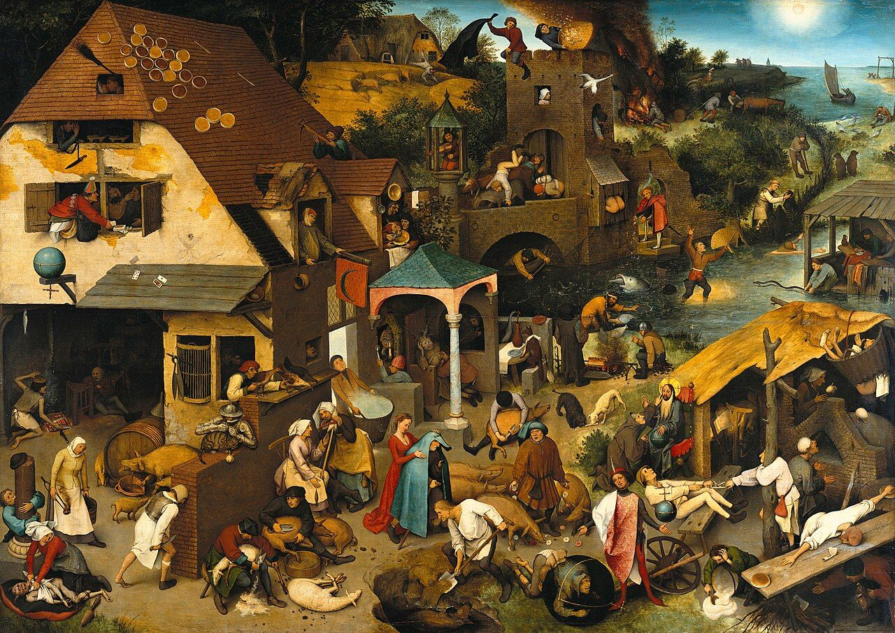
Fundamentos · Veo · sé · infiero · interpreto
Método de lectura visual
Siete capas para leer una obra, una fotografía, una ofrenda o un cementerio.
Pieter Bruegel el Viejo, Los proverbios flamencos, 1559. Gemäldegalerie, Berlín. Dominio público, vía Wikimedia Commons.
No empezamos por "esta obra significa X". Empezamos por "¿qué hay aquí?".
6.1 Fundamentos: de dónde viene este método y en qué se aparta
Este método combina varias tradiciones y las corrige entre sí.
Erwin Panofsky (Studies in Iconology, 1939) propuso tres niveles:
Pre‑iconográfico: formas, objetos, gestos.
Iconográfico: temas y convenciones. "Esta mujer con una cabeza en una bandeja es Salomé".
Iconológico: el significado intrínseco, la "mentalidad" de una época.
Tu secuencia veo → sé → infiero → interpreto es parecida, pero no igual. Panofsky no separa lo que sé por documentos de lo que infiero, y su tercer nivel tiende a "resolver" la obra en una visión del mundo.
E. H. Gombrich ("Aims and Limits of Iconology", en Symbolic Images, 1972) advirtió contra el exceso: no todo objeto es un símbolo, y el sentido de una obra está limitado por su género y su función.
Michael Baxandall (Painting and Experience, 1972; Patterns of Intention, 1985) pide reconstruir el "ojo de la época": qué habilidades visuales tenía el público original. Y pide explicar una obra como solución a un problema.
Svetlana Alpers (The Art of Describing, 1983) recuerda que muchas imágenes, sobre todo holandesas, describen, y no necesariamente esconden un sermón.
Hans Belting (Antropología de la imagen, 2001; en español, 2007) sitúa el origen de la imagen en el culto a los muertos: la imagen como sustituto de un cuerpo ausente. Para este curso es la teoría de fondo más pertinente, y hay que discutirla, no aceptarla.
Visual Thinking Strategies (Housen y Yenawine), del ámbito pedagógico, aporta la pregunta más útil de todo el método: ¿qué ves que te hace decir eso?
6.2 Las siete capas
Cada lectura avanza por capas en orden, y cada capa se escribe por separado. La disciplina consiste en no saltar.
Capa 0: Reacción (antes de mirar)
Anota en una o dos líneas tu reacción inmediata: "me aterra", "es bonita", "me aburre", "me recuerda a...".
No la borres ni la juzgues. Es un dato sobre ti, no sobre la obra. Volverás a ella al final para preguntarte si sigue en pie y de dónde venía.
Capa 1: VEO (descripción)
Describe sin usar palabras que ya contengan una interpretación.
✗ "Un esqueleto que representa la Muerte apaga una vela, símbolo de la vida".
✓ "Un esqueleto de pie, con una guadaña bajo el brazo izquierdo y un ataúd bajo el mismo brazo, extiende la mano derecha sobre una vela encendida. Tiene el pie sobre una esfera. Las cuencas de los ojos se dirigen al espectador".
Recorre la lista de verificación (6.3), con tiempo mínimo: 10 minutos para una obra que ya conoces y 20 para una nueva. Técnicas:
Dibuja la composición en un esquema de 5×7 cm, con sólo las masas y las líneas principales. Dibujar obliga a ver.
Cuenta. ¿Cuántas figuras hay? ¿Cuántas están vivas y cuántas muertas? ¿Cuántas miran al espectador?
Divide la imagen en cuadrantes y describe cada uno por separado.
Describe lo que falta. ¿Qué esperabas ver y no está?
Transcribe todo texto letra por letra, con sus abreviaturas y errores. No lo normalices todavía.
Capa 2: SÉ (lo documentado)
Sólo lo que tiene respaldo, con su fuente y el grado de certeza:
autor, y el grado de certeza de la atribución;
fecha, y cómo se sabe (documento, dendrocronología, estilo);
soporte, técnica y dimensiones;
comitente y ubicación original, que es a menudo la información más reveladora y la más olvidada;
estado de conservación y restauraciones;
títulos: ¿son del autor o de un inventario posterior? Por ejemplo, los títulos de las Pinturas negras de Goya no son de GoyaH;
fuentes textuales relevantes (Biblia, tratados, emblemas) que sepamos que circulaban.
Marca cada dato con H o E. Si no lo sabes, escribe "no lo sé todavía" y busca.
Capa 3: INFIERO (lo que se deduce)
Es lo que se sigue razonablemente de 1 + 2. Toda inferencia lleva su porque:
"La obra estaba pensada para verse desde abajo y a distancia, porque colgaba bajo el coro de una iglesia [2] y la figura principal está pintada a gran escala con un contraste fuerte [1]".
Prueba: ¿qué ves o qué sabes que te hace decir eso? Si no puedes responder, lo que tienes no es una inferencia sino una interpretación. Pásala a la capa 4.
Capa 4: INTERPRETO (el significado)
Aquí se permite la hipótesis, pero con disciplina argumentativa:
Formula al menos dos interpretaciones distintas.
Para cada una, enumera la evidencia a favor (de las capas 1‑3) y la evidencia en contra.
Pregúntate qué descubrimiento la refutaría. Si nada podría refutarla, no es una interpretación: es una proyección.
Clasifica: I dominante / Hi plausible / Es especulativa / C proyección contemporánea.
Capa 5: NO SÉ (el residuo)
Una lista explícita de lo que la lectura no resuelve. Esta capa nunca debe quedar vacía. Si queda vacía, la lectura se cerró demasiado pronto.
Capa 6: CONMIGO (la relación personal)
Sólo al final, y separada:
¿Qué tiene que ver esto conmigo?
¿Mi reacción de la capa 0 sigue en pie?
¿De dónde venía? ¿De la infancia, de una película, del catolicismo familiar, de la estética gótica, de una lectura?
Esta capa no valida las anteriores, ni las anteriores la invalidan a ella. Son dos registros distintos, y los dos son legítimos.
6.3 Lista de verificación de la capa 1 (VEO)
Dimensión
Preguntas
Composición
¿Dónde está el centro geométrico? ¿Y el centro de atención, que no siempre coincide? ¿Qué diagonales, simetrías o repeticiones hay? ¿Hay un "camino" para el ojo?
Escala
¿Tamaño real de la obra? ¿Cómo se relaciona con mi cuerpo? ¿Qué tamaño tienen las figuras respecto al espacio? ¿Hay escala jerárquica, donde lo importante aparece más grande?
Perspectiva
¿Desde dónde miro: de arriba, de frente, de abajo? ¿Hay un solo punto de vista o varios? ¿Horizonte alto (Bruegel) o bajo?
Luz
¿De dónde viene? ¿Es natural, sobrenatural o indeterminada? ¿Qué ilumina y qué deja en sombra?
Color
¿Qué paleta domina? ¿Qué color se repite? ¿Hay un color que está sólo una vez? ¿Está alterado por el tiempo, como los barnices o los pigmentos que viran?
Línea
¿Es contorno o modelado? En el grabado: ¿trama, achurado, contrachurado, punteado? ¿Dirección y densidad?
Textura
La superficie física: pincelada, relieve, papel, grano
Miradas
Traza vectores: ¿quién mira a quién? ¿Alguien mira al espectador? ¿Alguien mira fuera del cuadro? ¿Quién no mira?
Gestos
Manos: ¿qué hacen, qué señalan? ¿Hay un gesto retórico convencional, como señalar, llevarse la mano al pecho o sostener la cabeza (melancolía)?
Cuerpos
¿Vivos o muertos? ¿En qué estado de descomposición? ¿Vestidos o desnudos? ¿Qué rango social indica la ropa? ¿Edades? ¿Géneros?
Objetos
Haz un inventario completo. ¿Qué está roto, abierto, volcado, a medio usar?
Arquitectura
¿Qué edificios hay? ¿Reales o imaginarios? ¿En ruina o intactos? ¿Umbrales, puertas, ventanas?
Animales
¿Cuáles? ¿Qué hacen? Atención: son candidatos a símbolo, pero no siempre lo son
Texto
Inscripciones, filacterias, firmas, fechas, lemas, títulos grabados en el margen. Lengua, alfabeto, abreviaturas
Relación entre figuras
¿Grupos? ¿Aislados? ¿Quién toca a quién? ¿Hay parejas o cadenas? ¿Alguien interactúa con el espectador?
Marco y soporte
¿Es un fragmento? ¿Una tabla de un tríptico desmembrado? ¿Estaba pensada para abrirse y cerrarse? ¿Tiene un reverso pintado?
6.4 Protocolo ante el desacuerdo académico
Cuando los especialistas no están de acuerdo, se sigue siempre esta secuencia:
La interpretación dominante. Quién la sostiene y desde cuándo.
La evidencia en que se apoya.
Las objeciones. Quién las plantea y con qué argumentos.
Separar hechos de hipótesis. Qué parte del debate es documental y cuál es interpretativa.
Qué evidencia nueva lo resolvería. Documentos, análisis técnicos, un hallazgo de archivo.
Tu posición provisional, con su grado de confianza. Y la opción, siempre abierta, de decir "no sabemos".
Ejemplo tipo. La Mesa de los pecados capitales del Prado.
El Bosch Research and Conservation Project (BRCP, 2015‑2016) la atribuyó a un seguidor o taller.
El Prado (Pilar Silva, con los estudios técnicos de Carmen Garrido y Roger Van Schoute) mantiene la autoría de Bosch.
La tabla es de álamo, así que la dendrocronología no puede usarse.
Ambas partes se apoyan en el análisis técnico y estilístico.
Hoy la cuestión no está resuelta NS.
6.5 Pruebas contra la proyección
Antes de aceptar una interpretación, somételas a estas seis preguntas:
Prueba léxica. ¿La palabra o el concepto que uso existía en esa época y en esa lengua? Por ejemplo, "macabro" como adjetivo, "angustia existencial" o "arte".
Prueba de público. ¿Quién veía esta obra? ¿Monjes, cofrades, un rey, un comprador del mercado de Amberes, un lector de un pliego suelto?
Prueba de lugar. ¿Dónde estaba? Una imagen en un hospital de pobres no es igual que la misma imagen en un museo.
Prueba de serie. ¿Otras obras del mismo tipo hacen lo mismo? Si todas las naturalezas muertas de la época llevan limones, el limón de esta quizá no significa nada especial.
Prueba de fuente. ¿Existe un texto de la época que apoye la lectura? ¿O sólo existe mi intuición?
Prueba de deseo. ¿Quiero que signifique esto? ¿Por qué? Esta es la prueba más importante para ti, porque vienes de una fascinación infantil.
6.6 Adaptaciones del método a otros objetos
Grabado
Técnica: identifica xilografía, buril, aguafuerte o litografía con lupa; ver el Módulo 8.
Estado de la plancha: ¿qué estado es? ¿Hubo reimpresiones?
Inventor / sculpsit / excudit (quién diseñó, quién grabó, quién editó). En el grabado, "autor" es una categoría múltiple.
Tirada y circulación: ¿cuánto costaba? ¿Quién lo compraba?
Relación con un texto: ¿era un libro, un pliego, una serie numerada?
Fotografía
Quién, cuándo, dónde y con qué consentimiento.
¿Qué hay fuera del encuadre? ¿Qué sabemos del antes y el después?
¿Es una toma única o forma parte de una secuencia (hoja de contactos)?
¿Pie de foto? ¿Quién lo escribió? ¿Cambia la lectura?
Contexto de publicación: álbum familiar, periódico, galería, libro, redes sociales.
¿Está escenificada, dirigida o encontrada?
Relación con el tiempo: exposición, momento, "ha sido" (Barthes).
Pregunta ética obligatoria: ¿quién pagó el precio de esta imagen?
Ofrenda
¿Quién la montó? ¿Para quién: qué muertos, con qué nombres?
¿Qué objetos están porque a esa persona le gustaban y cuáles por convención?
¿Cuándo se monta y se desmonta? ¿Qué pasa con la comida después? ¿Quién se la come? ¿Se dice que "pierde sabor"?
¿Hay fotografías de los muertos en ella? ¿De cuándo? ¿Quién las eligió?
Estructura: ¿niveles? ¿Arco? ¿Qué nombres locales tienen sus partes?
No toques nada. No preguntes con una cámara en la cara. Pregunta primero si puedes preguntar.
Cementerio
Organización espacial: ¿hay zonas por clase social, época o religión? ¿Hay fosa común?
Capas de tiempo: tumbas abandonadas junto a otras cuidadas. ¿Quién limpia qué?
Lenguas de los epitafios, fórmulas (Q.E.P.D., "tus hijos no te olvidan") y fotografías en las lápidas.
Objetos dejados: juguetes, botellas, cigarros, flores de plástico o naturales.
¿Qué muertes no están aquí? Los desaparecidos, los que se entierran en otro lugar.
Ritual
Secuencia temporal: qué pasa primero y qué después.
Roles: quién hace qué y quién está excluido (por edad, género, parentesco o pertenencia).
Sonido, olor, luz, silencio.
¿Qué parte es para visitantes y qué parte no? ¿Hay un "detrás del escenario"?
¿Qué dicen los participantes que hacen? ¿Coincide con lo que observas?
Persona
Aquí el método se invierte. A una persona no se la "lee".
Observa tus propias suposiciones sobre ella: clase, etnia, religión, dolor, "autenticidad".
Anótalas como datos sobre ti.
Lo único legítimo que puedes saber de una persona es lo que ella te dice o te permite ver.
Paisaje
Huellas humanas y huellas del tiempo: erosión, abandono, reconstrucción.
¿Es un paisaje de muertos (un campo de batalla, una fosa, un lugar de desaparición) aunque no se vea nada?
Lo invisible pesa. ¿Cómo lo sabes? ¿Quién te lo dijo?
6.7 Ficha de lectura (plantilla)
OBRA / OBJETO: __________________ FECHA DE LA LECTURA: ________
Lugar donde la vi (original / reproducción / pantalla): ________
0. REACCIÓN (2 líneas):
1. VEO (mín. 15 líneas, sin interpretar)
Esquema dibujado: [adjuntar]
Texto transcrito literalmente:
2. SÉ (cada dato con fuente y marca [H]/[E])
3. INFIERO (cada inferencia con su "porque")
4. INTERPRETO
Interpretación A: ____ Evidencia +: ____ Evidencia −: ____ Refutable por: ____ [I/Hi/Es/C]
Interpretación B: ____ Evidencia +: ____ Evidencia −: ____ Refutable por: ____ [I/Hi/Es/C]
5. NO SÉ (mín. 3 preguntas)
6. CONMIGO
¿Sigue en pie la reacción 0? ¿De dónde venía?
PREGUNTA QUE HACE LA OBRA (una sola oración, en forma de pregunta):
6.8 Ejemplo breve: In ictu oculi
Es sólo una demostración de la secuencia, no la lectura completa, que se hará en el Módulo 2.
0. Reacción: "Fascinación. La inscripción me parece hermosa, como un conjuro".
1. Veo:
Un esqueleto ocupa casi toda la altura del cuadro y avanza desde la izquierda.
Lleva un ataúd y una guadaña bajo el brazo, y un sudario.
Pisa una esfera.
Su mano derecha se cierra sobre la llama de una vela.
Sobre la llama, en letras capitales claras: IN ICTU OCULI.
Abajo, amontonados en primer plano: una tiara, una corona, un cetro, libros abiertos y cerrados, una armadura, un capelo, telas ricas.
La luz es muy contrastada.
Las cuencas se orientan hacia fuera del cuadro, hacia el espectador. Ojo: ¿miran o no? Es una cuenca vacía. ¿Puede "mirar"? Anota la duda.
2. Sé:
Juan de Valdés Leal, c. 1670‑1672. H
Encargo de Miguel Mañara para la iglesia del Hospital de la Caridad, en Sevilla, colocado bajo el coro junto a Finis gloriae mundi. H, según Brown (1970) y Valdivieso.
La inscripción procede de 1 Corintios 15:52 en la Vulgata, donde el contexto es la resurrección. H
3. Infiero:
El público eran cofrades de la Caridad, que enterraban a pobres y ajusticiados, y visitantes de la iglesia. Porque el edificio era la iglesia de esa hermandad.
La obra iba acompañada de otras de Murillo sobre las obras de misericordia. E, ver Brown.
4. Interpreto:
A. Es una advertencia: el poder y el saber se pierden en un instante. Es una interpretación I dominante. Evidencia: los objetos y el gesto.
B. La cita paulina conserva su sentido: el mismo instante que acaba con todo prepara la transformación, y la muerte es el umbral del juicio y de la resurrección. Es Hi. Evidencia: la fuente bíblica y el programa de salvación por la caridad. En contra: la imagen no muestra ninguna resurrección.
C. Es una celebración estética de lo macabro. Es C: el concepto no existía así.
5. No sé:
¿Quién eligió la inscripción? ¿Mañara, Valdés o un tercero?
¿Cómo la entendían los cofrades, que en su mayoría quizá no sabían latín?
¿La lectura B está en algún texto de Mañara?
6. Conmigo: "Mi fascinación viene de la inscripción como sonido, no de su sentido escatológico. ¿Me atrae la muerte o me atrae el latín?"
Pregunta de la obra:¿Qué cambia en ti si sabes que todo lo que acumulas puede apagarse antes de que termines de mirar este cuadro?
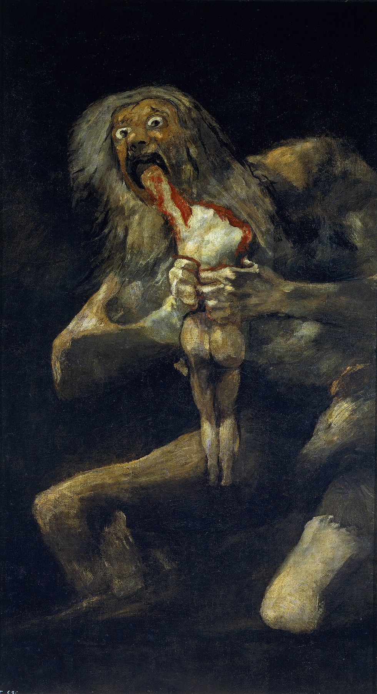
Lecciones · Dieciséis módulos
El programa
La arquitectura del curso, las obras que regresan y la ruta intensiva para este otoño.
Francisco de Goya, Saturno devorando a su hijo, 1820‑1823. Museo del Prado, Madrid. El título no es de Goya. Dominio público, vía Wikimedia Commons.
Arquitectura
El curso tiene tres obras que regresan. Funcionan como un bajo continuo:
Bruegel, El triunfo de la muerte: Módulos 1, 7 y 16. Es la obra de tu infancia, el terror y la fascinación.
Valdés Leal, In ictu oculi: Módulos 2 y 9, y el ensayo final. Es la palabra, la inscripción, el instante.
Tu propio texto, "Lo que creo que significa la muerte": Módulos 1, 9, 15 y 16, antes y después del viaje. Es la obra que más vas a analizar.
Cada módulo tiene su propia obra ancla, que se retoma en módulos posteriores.
#
Módulo
Obra ancla
Bloque
1
Aprender a mirar
Bruegel, El triunfo de la muerte (1.ª visita)
I. Mirar
2
Nombrar la muerte
Valdés Leal, In ictu oculi (1.ª visita)
I. Mirar
3
Juicio, cadáver y postrimerías
Triunfo de la Muerte, Camposanto de Pisa
II. Edad Media
4
La danza macabra
Bernt Notke, Danza macabra de Tallin
II. Edad Media
5
Ars moriendi: la hora decisiva
Bosch, La muerte y el avaro
III. Bosch y Bruegel
6
El Jardín y los límites de la interpretación
Bosch, El jardín de las delicias
III. Bosch y Bruegel
7
Bruegel: el mundo como proverbio
El triunfo de la muerte (2.ª visita) y Grandes peces
III. Bosch y Bruegel
8
La línea que multiplica
Dürer, El caballero, la muerte y el diablo
IV. Grabado
9
Vanitas y desengaño
Valdés Leal, los Jeroglíficos in situ (2.ª visita)
V. Barroco
10
Ruina, Arcadia y tiempo
Poussin, Et in Arcadia ego (Louvre)
V. Barroco
11
Guerra, Biblia y línea
Doré, La Muerte en el caballo pálido
IV. Grabado
12
Goya: la muerte sin garantía
Goya, Desastres 69, "Nada. Ello dirá"
VI. Ruptura
13
La fotografía y los muertos
A. Gardner, Lewis Payne (1865)
VII. Fotografía
14
Muertes mesoamericanas
Códice Borgia, lámina 56
VIII. México
15
Todos Santos, calaveras y nación
Posada, Calavera garbancera (1913)
VIII. México
16
Mirar a los vivos
Pedro Meyer, Fotografío para recordar (1991) y el Triunfo (3.ª visita)
IX. Síntesis
Ritmo sugerido: unas dos semanas por módulo, unas 32 semanas en total. Cada módulo pide unas 6‑8 horas de lectura, 2‑3 horas de lectura visual, una salida fotográfica y una página de diario.
Aviso de calendario. Hoy es 27 de septiembre de 2026. Si tu viaje es para el Día de Muertos de este año, no hay tiempo para el curso completo. Hay una ruta intensiva para esas cinco semanas al final de este archivo. Con ella, el Día de Muertos 2026 se trata como una temporada exploratoria y el de 2027 como la temporada del proyecto.
Ruta intensiva
Actualización: el viaje es del 27 de octubre al 3 de noviembre de 2026, a Pomuch, a pueblos cercanos a Valladolid y a Mérida. El plan concreto, adaptado a la península, está en Yucatán y Campeche 2026 y sustituye a la tabla siguiente, que se conserva como modelo general.
Faltan unas cinco semanas para el 1 y 2 de noviembre de 2026. Propuesta:
Semana
Trabajo
1 (28 sep‑4 oct)
Módulo 1 completo, incluido el texto v1. Método de lectura. Módulo 2 abreviado
2 (5‑11 oct)
Módulo 13 (fotografía y muerte) y lectura de Barthes. Criterios éticos (05, §12)
3 (12‑18 oct)
Módulo 14 (fuentes mesoamericanas: Sahagún y el debate con Malvido)
4 (19‑25 oct)
Módulo 15 (Lomnitz, Brandes, Barajas). Elección de la región y contactos locales
5 (26 oct‑3 nov)
Campo, en modo exploratorio: diario, pocas fotos, muchas preguntas, ningún objetivo de "serie"
Después
El curso completo (Módulos 3‑12 y 16) entre noviembre de 2026 y septiembre de 2027. Temporada principal del proyecto: Día de Muertos 2027
La primera temporada sirve para aprender dónde estás, no para producir.
Lección 01 · Mirar
Aprender a mirar
¿Qué veo cuando creo que ya sé lo que veo?
Pieter Bruegel el Viejo, El triunfo de la muerte, 1562‑1563. Museo del Prado, Madrid. Dominio público, vía Wikimedia Commons.
02
Contexto
Pieter Bruegel el Viejo, El triunfo de la muerte. Óleo sobre tabla, 117 × 162 cm. Museo del Prado, fechado por el museo en 1562‑1563. H
Restaurado por María Antonia López de Asiaín (capa pictórica) y José de la Fuente (soporte), y presentado en mayo de 2018. H
El módulo no busca todavía explicar el cuadro, sino desautomatizar tu mirada sobre una obra que conoces desde niño.
03
Conceptos
Mirada lenta. Descripción frente a interpretación. La memoria infantil como dato, no como argumento. Ekphrasis (describir con palabras una imagen).
04
Vocabulario
Punto de vista elevado. Línea de horizonte. Paisaje panorámico o "paisaje de mundo" (Weltlandschaft). Figura y fondo. Narración simultánea. Escala jerárquica.
05
Obra ancla
El triunfo de la muerte, 1.ª visita.
Pieter Bruegel el Viejo, El triunfo de la muerte, 1562‑1563. Museo del Prado, Madrid. Dominio público, vía Wikimedia Commons.06
Lectura visual
(orientaciones, no respuestas):
Cuenta a los vivos. ¿Cuántos se resisten, cuántos huyen, cuántos no se han dado cuenta?
Busca a la pareja de músicos abajo a la derecha. ¿Saben lo que ocurre?
Busca al rey y el reloj de arena. ¿Quién lo sostiene?
Mira los ataúdes usados como escudos, marcados con cruces.
Mira el horizonte: incendios, naufragios, ruedas de suplicio, horcas.
Observa lo que no está. No hay cielo abierto, ni Cristo, ni Juicio, ni resurrección. H, descriptivo.
Pregunta que queda abierta: ¿qué significa esa ausencia? Tal vez nada, porque el tema es la muerte y no la salvación. Tal vez mucho. Las creencias personales de Bruegel no están documentadas NS.
Se discute si Bruegel conocía el fresco del Triunfo de la Muerte de Palermo (c. 1446, hoy en el Palazzo Abatellis). Es plausible pero no está demostrado Hi.
07
Fuente primaria
Apocalipsis 6:8, el caballo "pálido" (equus pallidus), cuyo jinete se llama Muerte.
Karel van Mander, Het Schilder‑boeck (1604), vida de Bruegel. Es la primera biografía, y hay que leerla críticamente: es la fuente del mito de "Bruegel el campesino".
08
Preguntas socráticas
¿Qué parte exacta te aterraba de niño? ¿Era la misma que te cautivaba?
¿Puede algo aterrar y atraer por la misma razón?
¿Hay alguien en el cuadro que no vaya a morir?
Si el cuadro no muestra salvación, ¿es un cuadro religioso?
¿Tu fascinación es por la muerte o por la multitud de detalles?
09
Conexión filosófica
Montaigne, Essais I, 20 (I, 19 en las ediciones basadas en el texto de 1595): "Que filosofar es aprender a morir". Su tesis: quitémosle a la muerte su extrañeza, frecuentémosla.
Pregunta: ¿mirar a Bruegel desde niño te "familiarizó" con la muerte, como quería Montaigne? ¿O te la volvió espectáculo?
10
Conexión con México
Todavía ninguna, a propósito. Anota sólo esto: un ejército de esqueletos que actúan como vivos aparecerá otra vez en las calaveras de Posada. No supongas una genealogía, porque no hay evidencia de que Posada conociera a Bruegel. Distingue desde ahora entre analogía y filiación.
11
Conexión fotográfica
Bruegel narra simultáneamente, en muchos momentos a la vez. La fotografía moderna ha privilegiado el momento decisivo, uno solo. Pregunta: ¿puede una fotografía contener un "triunfo", muchas muertes simultáneas? ¿O la fotografía está condenada al singular?
12
Ejercicios
(a) Ficha completa del cuadro, con el método de Método de lectura visual, a partir de la imagen de alta resolución del Prado. Mínimo 45 minutos.
(b)Escribe "Lo que creo que significa la muerte", versión 1 (1.000‑1.500 palabras). Escríbelo antes de leer nada más de este curso. Guárdalo sin releerlo. Se analizará en los Módulos 9, 15 y 16.
(c) Salida fotográfica, "Veo": elige un lugar cotidiano y haz 36 fotos sin buscar "la" foto. Después describe 5 de ellas con la capa 1 del método, sin interpretar.
13
Bibliografía
Sellink 2007; Haag (ed.) 2018; Koerner 2016 (introducción); materiales del Prado sobre la restauración de 2018.
14
Reflexión final
Escribe en una página: ¿qué he visto hoy que nunca había visto, en un cuadro que llevo toda la vida mirando?
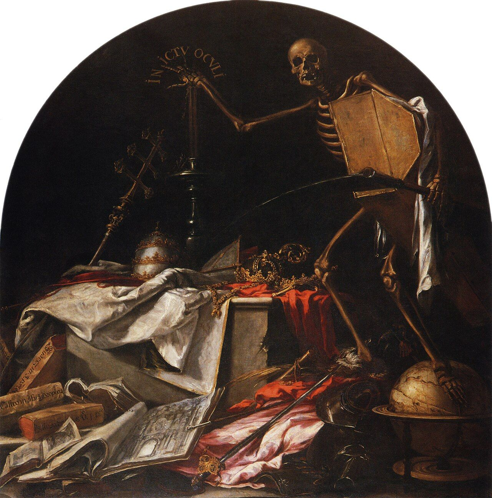
Lección 02 · Mirar
Nombrar la muerte: palabra, inscripción, imagen
¿Qué le hace una palabra a una imagen de la muerte, y qué le hace la imagen a la palabra?
Juan de Valdés Leal, In ictu oculi, c. 1670‑1672. Hospital de la Caridad, Sevilla. Dominio público, vía Wikimedia Commons.
02
Contexto
Juan de Valdés Leal pintó los dos "Jeroglíficos de las Postrimerías" (In ictu oculi y Finis gloriae mundi) hacia 1670‑1672. Fue un encargo de Miguel Mañara para la iglesia del Hospital de la Caridad de Sevilla, donde se colocaron bajo el coro, a la entrada. H
03
Conceptos
Inscripción, lema, filacteria, título.
Anclaje: el texto fija el sentido de la imagen (Barthes, "Rhétorique de l'image", 1964).
La recontextualización de una cita.
Las personas gramaticales de la muerte (Jankélévitch).
04
Vocabulario
Jeroglífico en sentido barroco: una imagen con significado moral cifrado, no una escritura egipcia. Postrimerías o novísimos. Emblema (inscriptio, pictura, subscriptio). Tenebrismo.
05
Obra ancla
In ictu oculi, 1.ª visita. Ver la lectura de ejemplo en el método, §6.8.
Juan de Valdés Leal, In ictu oculi, c. 1670‑1672. Hospital de la Caridad, Sevilla. Dominio público, vía Wikimedia Commons.06
Lectura visual
La inscripción está sobre la llama, no sobre la Muerte. ¿Qué se nombra entonces: la Muerte, la vela o el instante?
Mira cómo la luz del cuadro depende de esa llama que está a punto de apagarse.
El pie sobre la esfera. Los objetos de poder temporal (tiara, corona) y de saber (libros).
Plantéate si el cuadro "mira" al espectador y cómo: la calavera tiene cuencas, no ojos.
07
Fuente primaria
1 Corintios 15:50‑55, en la Vulgata y en griego. Lee el capítulo entero: el contexto es la resurrección.
Miguel Mañara, Discurso de la verdad. Hoy se conoce la edición de Sevilla de 1679; de la primera, de 1671, no se conserva ningún ejemplar conocido. Hay una copia digital en la Biblioteca Virtual Miguel de Cervantes.
08
Preguntas socráticas
Si la inscripción dijera memento mori, ¿el cuadro sería otro?
¿Traicionó Valdés o Mañara a San Pablo al cambiar el contexto de la cita?
¿Qué parte de tu fascinación viene del latín como sonido?
¿En qué persona gramatical está este cuadro? ¿Y tu fotografía favorita?
09
Conexión filosófica
Jankélévitch, La muerte: la muerte en 1.ª, 2.ª y 3.ª persona. ¿Una pintura puede hablar en 1.ª persona? ¿Quién dice "in ictu oculi"?
10
Conexión con México
El vocabulario: difunto, finado, fallecer (ver el mapa conceptual, §2.15).
El náhuatl miqui, micqui, Mictlan.
Las calaveritas literarias, versos satíricos que "matan" a los vivos por escrito cada noviembre. Son un género en el que el texto precede a la imagen.
Tarea de campo futura: recoger las palabras que usa la gente real para hablar de sus muertos.
11
Conexión fotográfica
El pie de foto. Walter Benjamin, en la "Pequeña historia de la fotografía" (1931), preguntaba si el pie de foto no se volvería la parte esencial de la imagen. ¿Tu proyecto llevará texto? ¿De quién: tuyo, de los fotografiados, citas?
12
Ejercicio
"Tres pies de foto". Elige 3 fotografías tuyas y escribe para cada una tres pies distintos: (a) una cita latina o bíblica; (b) un pie documental (quién, dónde, cuándo); (c) una frase oída a alguien. Observa cuál cierra la imagen y cuál la abre.
13
Bibliografía
Brown, "Hieroglyphs of Death and Salvation", Art Bulletin 52:3 (1970), incluido después en Images and Ideas (1978).
Valdivieso 2021.
Jankélévitch 1966.
Barthes, "Rhétorique de l'image" (1964).
14
Reflexión final
¿Qué palabra usas tú para la muerte cuando no piensas en ella? ¿Y para tus muertos?
Lección 03 · Edad media
Juicio, cadáver y postrimerías
¿La muerte medieval trata de morir, o de lo que viene después?
Entre los siglos XII y XV se desplaza la atención del juicio colectivo al final de los tiempos al juicio individual en el momento de la muerte (Ariès, El hombre ante la muerte). I, un marco influyente pero discutido.
La peste negra (1347‑1351) intensifica la imaginería del cadáver, aunque no la inventaI. El transi y los Tres vivos y tres muertos son anteriores o contemporáneos.
03
Conceptos
Contemptus mundi. Postrimerías (muerte, juicio, infierno, gloria). Purgatorio. Juicio particular frente a Juicio Final. Tumba transi.
04
Vocabulario
Transi (del francés: el cadáver en descomposición esculpido en una tumba). Gisant (la figura yacente). Osario. Fresco. Camposanto.
05
Obra ancla
Triunfo de la Muerte, fresco del Camposanto Monumentale de Pisa. Se fecha entre c. 1330 y 1350; la datación se discute, y c. 1336‑1341 es la propuesta de la escuela de Bellosi.
La atribución a Buonamico Buffalmacco es hoy mayoritaria, pero antes se atribuía a Francesco Traini I.
Quedó muy dañado por un bombardeo en 1944 y fue restaurado.
Los tres vivos: caballeros de caza ante tres ataúdes abiertos con cadáveres en tres estados de descomposición. Un caballo retrocede. Alguien se tapa la nariz.
El jardín elegante: jóvenes con música, a quienes la Muerte se acerca con la guadaña.
Los mendigos: tullidos que llaman a la Muerte, y ella pasa de largo.
Pregunta: ¿qué dice una imagen donde la muerte no viene cuando se la llama?
07
Fuente primaria
Le Dit des trois morts et des trois vifs (siglo XIII). Hay varias versiones francesas.
Lotario de' Segni (Inocencio III), De miseria humanae conditionis (c. 1195), el tratado clásico del contemptus mundi.
La secuencia Dies irae (siglo XIII).
08
Preguntas socráticas
¿El cadáver en descomposición es un recordatorio de la muerte o de la corrupción de la carne, que no es lo mismo?
¿Por qué el siglo XIV quiere ver el cuerpo pudriéndose?
¿Qué diferencia hay entre temer la muerte y temer el juicio?
09
Conexión filosófica
Platón, Fedón 64a y 67e: los verdaderos filósofos "se ejercitan en morir". El cristianismo medieval hereda y transforma esta idea: separar el alma del cuerpo antes de la muerte. ¿Es "aprender a morir" una forma de desprecio de la vida?
10
Conexión con México
La evangelización del siglo XVI llevó a la Nueva España esta imaginería del juicio y del infierno: pintura mural conventual, catecismos pictográficos, teatro de evangelización.
Caso de estudio a verificar en campo o en la bibliografía: la pintura mural del convento agustino de Actopan (Hidalgo). I, no verificado en detalle para este curso.
Pregunta: ¿qué entendía un nahua del siglo XVI ante una imagen del infierno? No lo sabemos directamente NS: casi todas las fuentes son de frailes.
11
Conexión fotográfica
El transi es una secuencia temporal comprimida: un cuerpo en varios estados. La fotografía tiene una versión literal en la serie temporal. Sally Mann, en What Remains (2003), fotografía cuerpos en descomposición en una granja forense (body farm). ¿Qué diferencia hay entre el transi y la fotografía forense?
12
Ejercicio
"Estados". Fotografía el mismo objeto perecedero (una flor, una fruta, pan) en 5 momentos a lo largo de tres semanas. Luego critica: ¿es demasiado obvio? ¿Qué añade la fotografía a algo que todos ya sabemos? Guarda la serie, pero no la consideres lograda sólo porque "funciona".
13
Bibliografía
Binski 1996; Cohen 1973; Ariès 1977 (caps. 1‑5); Huizinga 1919 (cap. "La imagen de la muerte"); Mâle 1908.
14
Reflexión final
Escribe qué parte de tu idea de la muerte es, sin saberlo, medieval.
Lección 04 · Edad media
La danza macabra: la muerte igualadora
Si la muerte nos iguala a todos, ¿por qué las imágenes que lo dicen están tan llenas de jerarquías?
Bernt Notke, Danza macabra (fragmento), finales del siglo XV. Museo Niguliste, Tallin. Dominio público, vía Wikimedia Commons.
02
Contexto
Cementerio de los Inocentes de París, 1424‑1425. Edición impresa de Guyot Marchant, 1485. H
La forma se difunde por Francia, el Imperio, el Báltico, Istria y Castilla.
Tenía un carácter de representación escénica (performance): sermones, versos recitados y quizá representaciones (Gertsman). I
03
Conceptos
Igualación. Sátira de los estados. "El muerto" frente a "la Muerte". Imagen y texto como unidad.
04
Vocabulario
Danse macabre, Totentanz, Danza general. Estados (órdenes sociales). Coro (danza en cadena). Filacteria.
05
Obra ancla
Bernt Notke, fragmento de la Danza macabra (finales del siglo XV). Iglesia de San Nicolás (Niguliste), Tallin, hoy museo.
Bernt Notke, Danza macabra (fragmento), finales del siglo XV. Museo Niguliste, Tallin. Dominio público, vía Wikimedia Commons.06
Lectura visual
El orden de los personajes: del papa al emperador, a la emperatriz, al cardenal, al rey. ¿Qué dice ese orden?
Los gestos de los muertos: tirar, invitar, burlarse, tocar un instrumento.
¿Son todos el mismo muerto? ¿Se parecen a sus parejas?
Los versos en bajo alemán bajo cada figura. Lee lo que dice el muerto y lo que responde el vivo.
07
Fuente primaria
Danza general de la Muerte, texto castellano del siglo XV (manuscrito de El Escorial). Hay ediciones modernas y versiones digitales.
El texto de la edición de Marchant (1485).
08
Preguntas socráticas
¿La igualación es un consuelo para los pobres o una amenaza para los ricos?
Si todos mueren igual pero no viven igual, ¿qué iguala la muerte en realidad?
¿La danza macabra es un memento mori? ¿O es sobre todo sátira social?
09
Conexión filosófica
La Sentencia Vaticana 31, atribuida a Epicuro (o a Metrodoro): "frente a la muerte, todos los hombres habitamos una ciudad sin murallas". Compárala con la danza. ¿La igualación epicúrea tranquiliza y la cristiana amenaza?
10
Conexión con México
Las calaveras de Posada y de Manuel Manilla, esqueletos vestidos con los atuendos de todas las clases sociales.
Las calaveritas literarias, que "matan" a políticos y vecinos.
Hipótesis a examinar: ¿es una danza macabra mexicana?
Hay analogía estructural: igualación y sátira.
La filiación no está documentada. Es posible que los grabadores conocieran estampas europeas, pero no hay pruebas de una influencia directa NS.
Lo que sí está documentado es una tradición satírica de la prensa popular del siglo XIX mexicano (Barajas 2009).
11
Conexión fotográfica
August Sander, Menschen des 20. Jahrhunderts: una tipología de los oficios y estados de la sociedad alemana, pero sin la Muerte. Pregunta: ¿qué ocurre con esa tipología cuando sabemos lo que vino después, los años 1933‑1945? El tiempo histórico puede convertir una serie de retratos en una danza macabra retrospectiva.
12
Ejercicio
"Oficios". Haz entre 6 y 10 retratos de personas en su trabajo, con consentimiento explícito. No busques nada relacionado con la muerte. Un año después, vuelve a mirarlos. Anota ahora qué crees que habrá cambiado.
13
Bibliografía
Gertsman 2010; Oosterwijk y Knöll (eds.) 2011; Binski 1996; Davis 1956 (para el paso a Holbein).
14
Reflexión final
¿En qué lugar de la danza te pondrías tú? ¿Con qué oficio?
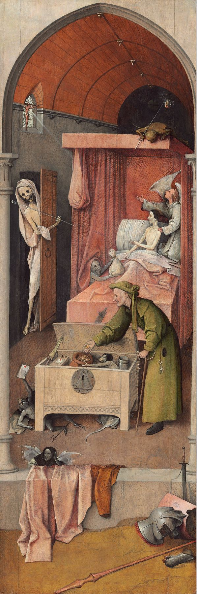
Lección 05 · Bosch y bruegel
Ars moriendi: Bosch y la hora decisiva
¿Qué se decide en el instante de morir, y quién lo decide?
El Bosco, La muerte y el avaro, c. 1485‑1490. National Gallery of Art, Washington. Dominio público, vía Wikimedia Commons.
02
Contexto
Hieronymus Bosch (c. 1450‑1516), de 's‑Hertogenbosch, miembro de la Cofradía de Nuestra Señora, una cofradía devota. H
La muerte y el avaro (National Gallery of Art, Washington, c. 1485/1490) es hoy la tabla interior derecha de un tríptico desmembrado. La reconstrucción aceptada, que el BRCP apoyó en 2016, reúne:
La nave de los locos (Louvre) y la Alegoría de la gula y la lujuria (Yale), que formaban el ala izquierda;
El vendedor ambulante o El caminante (Boijmans, Róterdam), en el exterior;
una tabla central perdida.
La dendrocronología muestra que las tablas de Róterdam, París y Washington proceden del mismo árbol. E
03
Conceptos
Ars moriendi: las cinco tentaciones y las cinco inspiraciones. Avaricia. Libre albedrío. Narración continua (dos momentos en una imagen).
04
Vocabulario
Tríptico. Ala o portezuela. Grisalla. Dendrocronología. Reflectografía infrarroja. Dibujo subyacente. Atribución, taller, seguidor.
05
Obra ancla
La muerte y el avaro.
El Bosco, La muerte y el avaro, c. 1485‑1490. National Gallery of Art, Washington. Dominio público, vía Wikimedia Commons.06
Lectura visual
Es una tabla alta y estrecha. ¿Qué efecto tiene ese formato?
El moribundo en la cama. Un demonio le ofrece una bolsa de dinero desde el dosel. Un ángel señala una ventana con un crucifijo del que baja un rayo de luz. La Muerte entra por la puerta con una flecha.
En primer plano, un hombre, ¿el mismo?, más joven o en otro momento, deja monedas en un arcón con un rosario en la cintura. Hay demonios en el arcón. I: la lectura como narración continua es la dominante, pero no la única.
Piezas de armadura tiradas en el suelo: el estatus mundano abandonado.
Lo decisivo: el cuadro no muestra qué elige el hombre. H, descriptivo. Su mano parece ir hacia la bolsa. ¿O no?
Comparación obligatoria: la Mesa de los pecados capitales del Prado.
Tiene un ojo central con Cristo y la inscripción CAVE CAVE D[OMI]N[U]S VIDET ("cuidado, cuidado, el Señor ve"), dos filacterias con citas de Deuteronomio 32 y cuatro medallones con las Cuatro postrimerías.
Su atribución está disputada: el BRCP la dio a un seguidor o taller, y el Prado mantiene la autoría de Bosch NS. Aplica el protocolo de desacuerdo del método, §6.4.
07
Fuente primaria
Ars moriendi, versión breve con 11 xilografías (c. 1450‑1460). Hay facsímiles digitales en varias bibliotecas: busca los ejemplares de la British Library o de la Library of Congress.
Deuteronomio 32:28‑29: "utinam saperent et intelligerent, ac novissima providerent" (Clementina), "¡ojalá fueran sabios, entendieran y previeran sus postrimerías!".
08
Preguntas socráticas
Si el cuadro no dice qué elige el hombre, ¿para quién es la elección? ¿Para el avaro, o para quien mira?
¿Tiene sentido que todo se decida en un instante después de toda una vida?
¿Cuánto de tu fascinación por este cuadro es por su indeterminación?
09
Conexión filosófica
Epicuro distingue la muerte (nada para nosotros) del morir (que sí se sufre).
El ars moriendi se ocupa sólo del morir, pero de un morir cargado de consecuencias eternas. Para Epicuro, el avaro sufre por temer la pérdida.
Pregunta: ¿qué haría un epicúreo en esa cama?
10
Conexión con México
Elsa Malvido, "Crónicas de la buena muerte a la Santa Muerte en México" (Arqueología Mexicana 76, 2005). La "buena muerte" colonial (cofradías, testamentos, sacramentos) fue una práctica documentada en la Nueva España. Malvido traza una línea hasta la devoción contemporánea a la Santa Muerte. Evalúa críticamente esa línea Hi.
11
Conexión fotográfica
Walter Schels y Beate Lakotta, Noch mal leben vor dem Tod (2004): retratos de personas en un hospicio, antes y después de morir, con su consentimiento. ¿Es un ars moriendi contemporáneo?
Pregunta ética: ¿quién puede fotografiar a alguien que muere?
12
Ejercicio
"Umbral". Fotografía un umbral (una puerta, un pasillo, una ventana) que una persona concreta cruza todos los días. Sin personas, sin símbolos. Escribe una sola línea: ¿de quién es el umbral?
13
Bibliografía
Ilsink et al. 2016 (entrada correspondiente); Silva Maroto (ed.) 2016; O'Connor 1942; Reinis 2007; Koerner 2016 (caps. sobre Bosch).
14
Reflexión final
¿Qué tentación del ars moriendi reconoces como tuya? No lo compartas si no quieres. Escríbelo.
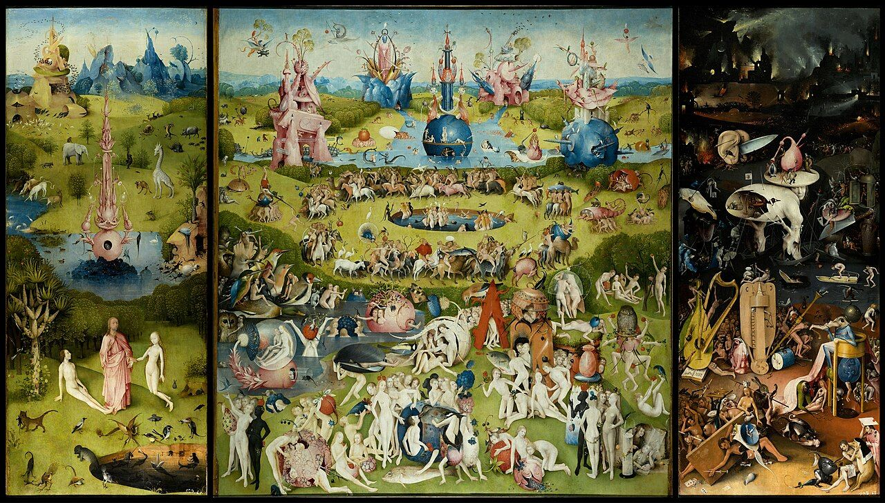
Lección 06 · Bosch y bruegel
El Jardín de las delicias y los límites de la interpretación
¿Cuándo debe detenerse una interpretación?
El Bosco, El jardín de las delicias, c. 1490‑1505. Museo del Prado, Madrid. Dominio público, vía Wikimedia Commons.
02
Contexto
Tríptico, Museo del Prado. Las fechas propuestas van de c. 1490 a c. 1505 I.
El 30 de julio de 1517 lo vio en el palacio de los Nassau en Bruselas Antonio de Beatis, secretario del cardenal Luis de Aragón. H Su diario lo describe sin nombrar a Bosch. Pregunta: ¿cómo se prueba entonces que habla de este cuadro?
Lo adquirió Felipe II, y en El Escorial lo describió fray José de Sigüenza (1605).
03
Conceptos
Iconografía frente a iconología. Sobreinterpretación. La historia de la recepción. La "región de la desemejanza" (regio dissimilitudinis, concepto agustiniano que usa Falkenburg).
04
Vocabulario
Paraíso terrenal. Jardín del amor. Grisalla exterior (la creación del mundo). Obra de conversación (conversation piece).
05
Obra ancla
El jardín de las delicias.
El Bosco, El jardín de las delicias, c. 1490‑1505. Museo del Prado, Madrid. Dominio público, vía Wikimedia Commons.06
Lectura visual
Primero cerrado: el globo en grisalla.
Después abierto: Edén, jardín, infierno.
La muerte casi no aparece de forma explícita. ¿Dónde está? Ese es el ejercicio: rastrear la muerte en un cuadro que parece tratar del deseo.
Clasifica las lecturas publicadas:
Moralizante dominanteI: la lujuria conduce a la condena.
Belting (2002) Hi: el panel central como utopía de un mundo sin caída.
Falkenburg (2011) Hi: una obra que provoca la conversación y la autoexploración del espectador.
Koerner (2016) Hi: la "pintura del enemigo".
Fraenger (1947) Es, en gran medida descartada: la secta de los adamitas.
Especulación popularEs: drogas, alquimia, la "partitura en el trasero" que se volvió viral en 2014.
07
Fuente primaria
Fray José de Sigüenza, Historia de la Orden de San Jerónimo, parte III (1605), su defensa de la ortodoxia de Bosch. Es un lector del siglo XVII: ¿su lectura cuenta como evidencia de la intención de Bosch?
08
Preguntas socráticas
¿Una obra puede tener un significado que su autor no pretendía?
¿Qué lectura del Jardín te gusta más? ¿Por qué? Aplica la prueba de deseo (§6.5).
Si nadie sabe qué significa exactamente, ¿qué sí sabemos?
09
Conexión filosófica
Schopenhauer, El mundo como voluntad y representación: el deseo como sufrimiento sin fin. ¿El panel central es un paraíso o una representación de la voluntad insaciable? Atención: es una lectura moderna C, y sirve para pensar, no para explicar a Bosch.
10
Conexión con México
No corresponde forzarla. Resiste la tentación de comparar el infierno de Bosch con el Mictlan: no hay relación histórica, y la comparación superficial es exactamente el tipo de error que este curso combate. Anótalo como ejercicio de contención.
11
Conexión fotográfica
Roger Ballen (Shadow Chamber, 2005; Boarding House, 2009; Asylum of the Birds, 2014) construye escenarios absurdos, criaturas, dibujos y animales. ¿Es un heredero de Bosch? ¿O esa es una comparación publicitaria? Aplica aquí también la prueba de analogía frente a filiación.
12
Ejercicio
"Sin descifrar". Haz una fotografía con un elemento que tú mismo no sepas explicar. Escribe tres interpretaciones y clasifícalas I / Hi / Es / C. ¿Alguna es verdadera?
Escribe un párrafo que termine en "no sabemos" y que no te deje insatisfecho.
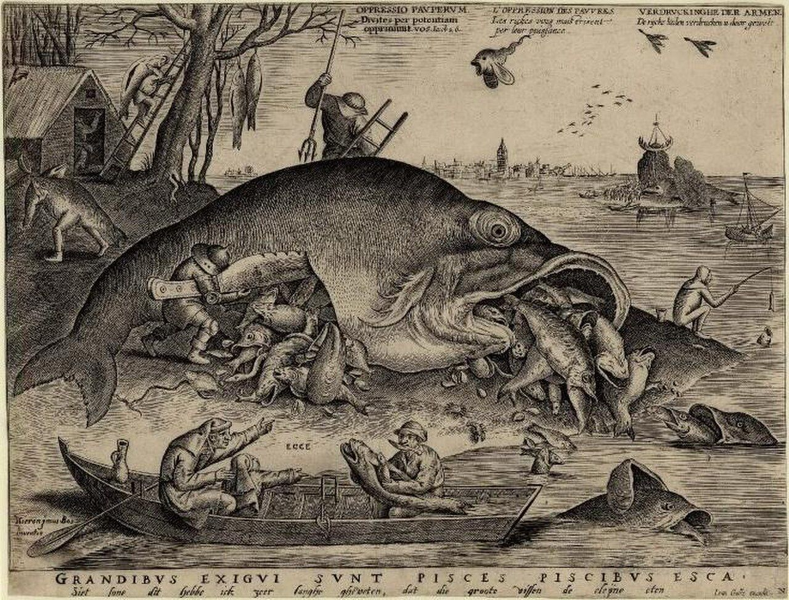
Lección 07 · Bosch y bruegel
Bruegel: el mundo como proverbio (regreso al Triunfo)
¿La muerte en Bruegel es un tema religioso, social o cósmico?
Pieter van der Heyden según Bruegel, Los peces grandes se comen a los chicos, buril, 1557. Dominio público, vía Wikimedia Commons.
02
Contexto
Amberes a mediados del siglo XVI era un mercado de arte e imprenta.
El editor Hieronymus Cock (Aux Quatre Vents) explotó comercialmente la moda de Bosch décadas después de su muerte.
Los peces grandes se comen a los chicos: dibujo de Bruegel de 1556 (Albertina), grabado por Pieter van der Heyden y publicado por Cock en 1557 con Bosch acreditado como inventor. H La fórmula exacta de la inscripción debe verificarse en el ejemplar antes de citarla.
Bruegel fue vendido como un "nuevo Bosch".
03
Conceptos
El mercado del grabado.
La "marca" Bosch.
El proverbio como forma de pensamiento visual.
El mundo al revés.
El humanismo del círculo de Ortelius: el Album amicorum de Abraham Ortelius incluye un elogio de Bruegel H.
04
Vocabulario
Inventor / sculpsit / excudit. Estado de la plancha. Proverbio y refrán. Carnaval y Cuaresma.
05
Obra ancla
El triunfo de la muerte, 2.ª visita, ahora junto a:
Los proverbios flamencos (1559, Gemäldegalerie, Berlín);
El combate entre Carnaval y Cuaresma (1559, Kunsthistorisches Museum, Viena);
Dulle Griet (c. 1561‑1562, Museum Mayer van den Bergh, Amberes);
Los peces grandes.
Pieter van der Heyden según Bruegel, Los peces grandes se comen a los chicos, buril, 1557. Dominio público, vía Wikimedia Commons.06
Lectura visual
Compara el infierno de Bosch con el ejército de Bruegel.
En Bosch los castigos son alegóricos, con monstruos híbridos.
En Bruegel la muerte es militar, administrativa y social: esqueletos organizados como un ejército, un campo tras una batalla, horcas y ruedas de suplicio.
Pregunta: ¿qué cambió entre ambos? Considera el tiempo histórico, el mercado y quizá la experiencia de la violencia política.
Atención cronológica: la revuelta de los Países Bajos estalla en 1566‑1568, después del Triunfo. No la uses para explicarlo C.
07
Fuente primaria
Karel van Mander, Schilder‑boeck (1604), la vida de Bruegel.
Erasmo, Adagia (desde 1500), la gran colección humanista de proverbios.
08
Preguntas socráticas
¿Bruegel era un campesino burlón, un humanista erudito, un disidente religioso? ¿Qué evidencia hay para cada imagen? La tesis de su afinidad con la Familia del Amor es Hi / Es.
Si la obra se vendía, ¿la muerte también era una mercancía?
En el Triunfo nadie se salva. ¿Es una visión desesperada, satírica o simplemente fiel?
09
Conexión filosófica
Erasmo, Elogio de la locura (1511): la Locura habla y todos son necios. ¿La muerte bruegeliana es la última broma de la Locura, o su desmentido?
10
Conexión con México
Carnaval, Cuaresma y Todos Santos son calendario litúrgico importado. En la Nueva España se superpone a calendarios agrícolas y rituales locales.
Octavio Paz (El laberinto de la soledad, 1950) describe la fiesta mexicana como explosión y transgresión. Es una tesis literaria que habrá que discutir I / C en el Módulo 15.
11
Conexión fotográfica
Robert Frank, Les Américains (1958) / The Americans (1959), un país leído como mosaico de detalles. Incluye Funeral, St. Helena, South Carolina.
Josef Koudelka, Gitans (1975), comunidades y rituales, incluidos funerales, vistos desde la cercanía.
Pregunta: ¿se puede hacer un "proverbio" fotográfico?
12
Ejercicio
"Refrán". Elige un refrán español sobre la muerte ("el muerto al pozo y el vivo al gozo", "no hay mal que dure cien años", "de esta vida nadie sale vivo"). Fotografíalo sin ilustrarlo literalmente.
¿Ha cambiado tu miedo infantil al Triunfo? ¿Qué lo sustituye: comprensión, distancia, otro miedo?
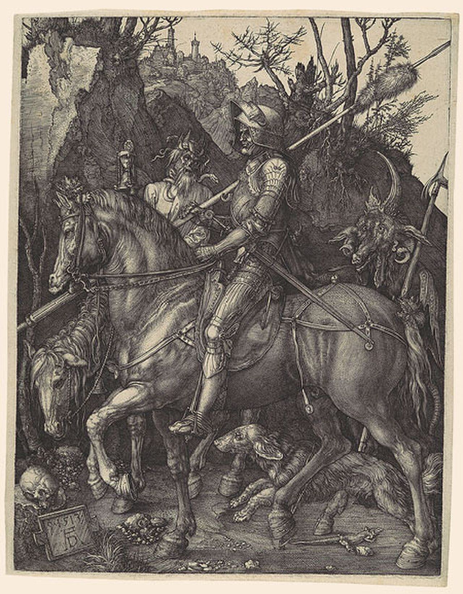
Lección 08 · Grabado (primera parte)
La línea que multiplica: Dürer, Holbein y el grabado
¿Qué le pasa a la muerte cuando se imprime mil veces y cabe en la mano?
Alberto Durero, El caballero, la muerte y el diablo, buril, 1513. Dominio público, vía Wikimedia Commons.
02
Contexto
William Ivins (Prints and Visual Communication, 1953) definió el grabado como un "enunciado pictórico exactamente repetible". Con la imprenta, la imagen de la muerte se vuelve portátil, privada, barata y serial.
03
Conceptos. Técnicas
(explicación conceptual, no taller):
| Técnica | Principio | Cómo es la línea | Autores del curso |
|---|---|---|---|
| Xilografía (a fibra) | Relieve: se talla la madera y la tinta queda en lo que sobresale | Firme, a veces angulosa. El blanco es lo que se quita | Dürer, Apocalipsis (1498); Holbein, Danza (1538) |
| Buril (grabado a talla dulce) | Hueco: se incide el cobre con un buril y la tinta queda en los surcos. Exige una prensa de alta presión | Afinada en las puntas, controlada, modulable. El tono se construye con tramas | Dürer, Caballero, Melencolia I (1513‑1514) |
| Aguafuerte | Hueco: se dibuja sobre un barniz y el ácido muerde el metal descubierto | Libre, como un dibujo. Se puede morder por etapas | Callot (1633); Goya (con aguatinta); Rembrandt |
| Punta seca | Hueco: se raya directamente el metal y queda una rebaba | Aterciopelada. La rebaba se gasta pronto, así que las tiradas son cortas | Rembrandt; Goya lo combina |
| Litografía (desde 1796‑1798) | Plano: la química de la grasa contra el agua sobre la piedra | Como un lápiz o un pincel graso | Goya, Toros de Burdeos (1825); Daumier |
| Xilografía a contrafibra (madera de testa) | Relieve sobre madera cortada en sección transversal, con buril | Muy fina, tonal. Permite la reproducción industrial | Doré, a través de sus grabadores (Módulo 11) |
04
Vocabulario
Estado. Tirada. Prueba. Plancha. Taco. Rebaba. Contrachurado. Inventor / sculpsit / excudit. Grabado original frente a grabado de reproducción.
05
Obra ancla
Alberto Durero, El caballero, la muerte y el diablo (Ritter, Tod und Teufel), buril, 1513. Junto a:
Los cuatro jinetes del Apocalipsis (xilografía, 1498);
Melencolia I (buril, 1514);
Holbein, Les simulachres & historiees faces de la mort (Lyon, Melchior y Gaspar Trechsel, 1538). Los tacos los cortó Hans Lützelburger, que murió en 1526, así que el diseño es de c. 1523‑1526. H
Alberto Durero, El caballero, la muerte y el diablo, buril, 1513. Dominio público, vía Wikimedia Commons.06
Lectura visual
Caballero:
La Muerte a caballo, con serpientes en la corona, le muestra un reloj de arena.
El diablo va detrás.
El caballero no mira a ninguno de los dos.
Lectura dominante I: el miles christianus, el soldado cristiano que avanza impasible. Panofsky la relacionó con el Enchiridion militis christiani de Erasmo (1503) Hi.
Lectura minoritaria Hi: un caballero mundano o un "caballero ladrón".
Durero lo llama simplemente "Reuter", "jinete", en su diario de los Países Bajos. H
Melencolia I: las lecturas proliferan (Klibansky, Panofsky y Saxl, Saturno y la melancolía). Aquí el "no sabemos" es la respuesta más honesta que hay.
Holbein:
Mide unos pocos centímetros. Se mira con la nariz pegada a la página.
La Muerte ya no baila en cadena: irrumpe en el oficio de cada uno, sea el labrador, el juez o el niño.
Natalie Zemon Davis (1956) lo sitúa en el contexto de la Reforma en Lyon.
Por qué el detalle lineal produce otra experiencia que la pintura:
no hay color que emocione antes que la forma;
el tono es una construcción de líneas, y el ojo trabaja;
la escala exige proximidad física e intimidad, como la lectura;
se mira a solas, no en una iglesia;
el blanco del papel es luz, pero también vacío;
y hay repetición: la misma imagen está en muchas casas a la vez.
07
Fuente primaria
Apocalipsis 6:1‑8.
Erasmo, Enchiridion militis christiani (1503).
Los textos bíblicos en latín y las cuartetas francesas de la edición de Holbein de 1538.
08
Preguntas socráticas
¿Una muerte que cabe en la mano es menos terrible, o más íntima?
Si hay mil copias, ¿dónde está "la obra"?
¿Por qué el caballero no mira? ¿Es virtud o ceguera?
09
Conexión filosófica
Séneca, Epístolas 24.20: "cotidie morimur", "morimos cada día". El caballero parece estoico: indiferente a la muerte y al mal. Pero la apatheia estoica y la fe cristiana no son lo mismo. ¿Cuál de las dos ves en el grabado?
10
Conexión con México
La estampa europea circuló en la Nueva España y sirvió de modelo a pintores coloniales. H, en términos generales.
Siglos después, la gráfica popular: Posada, Manilla y el Taller de Gráfica Popular (fundado en 1937).
La calavera mexicana es, ante todo, una imagen impresa. Esa continuidad técnica sí está documentada.
11
Conexión fotográfica
La fotografía hereda del grabado la multiplicidad (Ivins).
El blanco y negro es una traducción de la realidad a valores tonales, como el grabado.
El grano, el desenfoque y el alto contraste de Daido Moriyama (Shashin yo sayonara, 1972) son una gráfica fotográfica.
12
Ejercicio
"Sólo línea". Haz una serie en blanco y negro de alto contraste donde la finitud se exprese sólo mediante línea, textura y vacío. Después mira las mismas tomas en color. ¿Qué se perdió y qué se ganó?
13
Bibliografía
Ivins 1953; Griffiths 1996; Gascoigne 1986; Panofsky, Durero (1943/1955); Bartrum 2002; Klibansky, Panofsky y Saxl 1964; Davis 1956.
14
Reflexión final
¿Tu fotografía se parece más a la pintura o al grabado? ¿Por qué?
Lección 09 · Barroco
Vanitas y desengaño
¿Desengañarse es aprender a ver el mundo, o aprender a no verlo?
Juan de Valdés Leal, Finis gloriae mundi, c. 1670‑1672. Hospital de la Caridad, Sevilla. Dominio público, vía Wikimedia Commons.
02
Contexto
Sevilla en la segunda mitad del siglo XVII: peste de 1649, declive comercial.
Miguel Mañara (1627‑1679) reforma la Hermandad de la Santa Caridad, dedicada a enterrar a los ajusticiados, los ahogados y los pobres, y a atender a los enfermos.
Encarga el programa decorativo de la iglesia a Valdés Leal, Murillo y Pedro Roldán.
Lectura de Jonathan Brown (1970) Iinfluyente: un recorrido que va de la muerte (Valdés, a la entrada) a la caridad (las obras de misericordia de Murillo) y a la salvación (el retablo mayor con el Santo Entierro).
Contrapunto septentrional: la vanitas holandesa protestante de Leiden y Haarlem.
03
Conceptos
Vanitas. Desengaño. Caridad como vía de salvación. El mundo como teatro o sueño. Emblemática.
04
Vocabulario
Bodegón. Naturaleza muerta (still‑life / stilleven: "vida quieta", no "naturaleza muerta"; nota lingüística sobre la divergencia de los nombres). Hermandad o cofradía. Programa iconográfico.
05
Obra ancla
Los dos Jeroglíficos, 2.ª visita, in situ. Si puedes viajar a Sevilla, la experiencia del recorrido es irreemplazable. Junto a:
Pereda, El sueño del caballero;
Steenwyck, Alegoría de las vanidades;
Sor Juana, soneto "Este que ves, engaño colorido".
Juan de Valdés Leal, Finis gloriae mundi, c. 1670‑1672. Hospital de la Caridad, Sevilla. Dominio público, vía Wikimedia Commons.06
Lectura visual
Finis gloriae mundi:
Un obispo y un caballero se pudren en sus ataúdes. Hay cucarachas y gusanos.
Una mano estigmatizada sostiene una balanza. En los platillos: NI MAS (con animales que simbolizan los pecados) y NI MENOS (con objetos de devoción y penitencia).
La lectura más aceptada: el juicio no depende del rango, sino de la balanza entre pecado y virtud I.
Las inscripciones también son un enigma sintáctico: "ni más, ni menos". ¿Qué ni más?
Vanitas holandesa: aplica el debate entre De Jongh y Alpers. ¿Cada objeto es un sermón, o también es una exhibición de virtuosismo y de riqueza?
La paradoja de la vanitas: condena el apego a los bienes mediante un objeto de lujo, pintado para ser poseído.
07
Fuente primaria
Mañara, Discurso de la verdad.
Nieremberg, De la diferencia entre lo temporal y eterno (1640).
Quevedo, "¡Ah de la vida!..." y "Miré los muros de la patria mía".
Calderón, La vida es sueño, jornada II, final.
Sor Juana, soneto 145.
08
Preguntas socráticas
Si la vanitas condena la riqueza y se vende cara, ¿es hipócrita, o la contradicción es parte de su mensaje?
¿Tu fotografía de naturaleza muerta contemporánea sería una crítica del consumo, o un objeto de consumo más?
¿El desengaño barroco te interesa porque es verdadero, o porque es bello?
09
Conexión filosófica
Tus dos preguntas explícitas:
Desde Epicuro:
La calavera de la vanitas cultiva exactamente lo que Epicuro quería eliminar, el temor a la muerte. Una vanitas epicúrea sería absurda.
O quizá no: el Qohélet, que es la fuente de vanitas, concluye "come tu pan con alegría". Es una lectura epicúrea dentro de la Biblia.
La vanitas cristiana suprime esa conclusión.
Desde Heidegger:
En Ser y tiempo §53, Heidegger distingue el "pensar en la muerte", cavilar sobre cuándo y cómo ocurrirá, que él considera una forma de huida, del Vorlaufen, el adelantarse hacia la muerte como posibilidad más propia.
Una vanitas que da miedo sería, para Heidegger, pensar en la muerte, no ser‑para‑la‑muerte. No es necesariamente autenticidad.
Proyectar a Heidegger sobre Valdés es C. Hacerlo deliberadamente, sabiendo que es una proyección, es un ejercicio legítimo.
Pascal, Pensamientos: "le dernier acte est sanglant, quelque belle que soit la comédie en tout le reste", "el último acto es sangriento, por hermosa que sea la comedia en todo lo demás".
10
Conexión con México
Sor Juana (1648/1651‑1695; el año de nacimiento se discute) es novohispana: la vanitas también se escribió en México.
Los túmulos y exequias reales en la Nueva España. Ejemplo: el Túmulo imperial de la gran ciudad de México (1560), de Francisco Cervantes de Salazar, por las exequias de Carlos V.
La muerte barroca novohispana es católica e hispánica. Es otra capa de "la muerte en México", que no es indígena ni moderna.
11
Conexión fotográfica
Hiroshi Sugimoto, Dioramas (desde 1976): animales disecados en museos de historia natural, fotografiados de modo que parecen vivos. Es un "engaño colorido" en blanco y negro, un desengaño invertido.
Sally Mann, What Remains.
12
Ejercicio
"Vanitas contemporánea".
Compón una naturaleza muerta con objetos actuales. Prohibido: calaveras, relojes de arena, velas.
Cada objeto debe tener una razón escrita antes de fotografiar.
Luego relee tu texto "Lo que creo que significa la muerte" (v1) por primera vez y marca con colores:
rojo = cristianismo;
azul = filosofía;
verde = experiencia personal;
amarillo = estética o cultura popular.
13
Bibliografía
Brown 1970/1978; Valdivieso 2021; Maravall 1975; R. de la Flor 2002 y 2007; Bergström 1956; Tapié (dir.) 1990; Alpers 1983.
14
Reflexión final
¿Quieres desengañarte? ¿De qué?
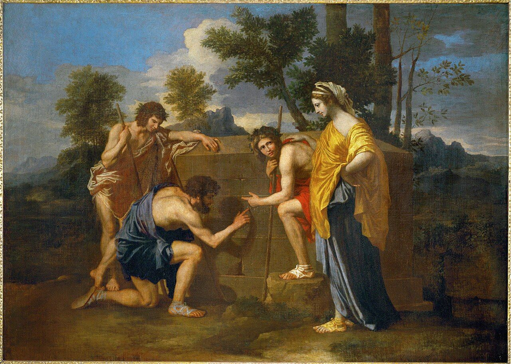
Lección 10 · Barroco
Ruina, Arcadia y tiempo
¿La muerte está fuera de la felicidad, o dentro de ella?
Nicolas Poussin, Les Bergers d'Arcadie (Et in Arcadia ego), c. 1637‑1638. Musée du Louvre, París. Dominio público, vía Wikimedia Commons.
02
Contexto
La pastoral clásica (Virgilio, Sannazaro).
Guercino (c. 1618‑1622) y Poussin (c. 1627‑1630, Chatsworth; c. 1637‑1638, Louvre).
En el siglo XVIII, la estética de la ruina: Piranesi, con las Carceri (1.ª ed. c. 1749‑1750; 2.ª ed. 1761) y las Vedute di Roma; Hubert Robert; Diderot en el Salón de 1767 sobre la "poética de las ruinas".
03
Conceptos
Elegía. Pastoral. Ruina. Tiempo cíclico frente a tiempo lineal. Lo sublime.
04
Vocabulario
Arcadia. Locus amoenus. Capricho arquitectónico. Veduta.
05
Obra ancla
Poussin, Les Bergers d'Arcadie (Louvre).
Nicolas Poussin, Les Bergers d'Arcadie (Et in Arcadia ego), c. 1637‑1638. Musée du Louvre, París. Dominio público, vía Wikimedia Commons.06
Lectura visual
Los cuatro pastores. Uno sigue con el dedo las letras de la inscripción; su sombra se proyecta sobre la tumba.H, descriptivo.
La mujer serena de la derecha.
Ya no hay calavera. Compárala con la de Guercino.
Aplica el análisis gramatical del mapa conceptual (§2.9): ¿quién es ego?
07
Fuente primaria
Virgilio, Églogas V (la tumba de Dafnis).
Horacio, Odas IV, 7 (Diffugere nives).
Diderot, Salon de 1767 (sobre Hubert Robert).
08
Preguntas socráticas
¿La sombra del pastor sobre la tumba es un símbolo o simplemente una sombra? Aplica la prueba de serie.
¿Por qué nos gustan las ruinas? ¿Qué parte de ese placer es inocente?
La naturaleza vuelve cada primavera y nosotros no (Horacio). ¿Un ritual anual como el Día de Muertos intenta corregir esa asimetría?
09
Conexión filosófica
Schopenhauer, El mundo como voluntad y representación, II, cap. 41 ("Sobre la muerte y su relación con la indestructibilidad de nuestro ser en sí"): el individuo perece, pero la especie y la voluntad persisten. ¿Consuelo o desconsuelo?
10
Conexión con México
Las ruinas de Tenochtitlan bajo la Ciudad de México. El hallazgo del monolito de Coyolxauhqui (1978) inició el Proyecto Templo Mayor.
La ruina prehispánica funcionó como la "Arcadia" del nacionalismo mexicano: un pasado idealizado. Es un patrón a vigilar.
La pregunta náhuatl "¿acaso de verdad se vive en la tierra?" frente al ubi sunt. Cautela con los Cantares (Módulo 14).
11
Conexión fotográfica
Eugène Atget y el París que desaparece.
Walter Benjamin compara sus calles vacías con el "lugar de un crimen", en la "Pequeña historia de la fotografía" (1931) y en "La obra de arte..." (1935‑1936).
Sugimoto, Seascapes (desde 1980): un mar sin tiempo humano.
Koudelka, Ruins (2020).
12
Ejercicio
"Lo que permanece". Fotografía un objeto que probablemente sobrevivirá a su dueño. Conoce al dueño. Pregúntale si puedes. Escribe en una línea qué sabe esa persona del destino del objeto.
13
Bibliografía
Panofsky 1955 ("Et in Arcadia Ego"); Wilton‑Ely 1978; Yourcenar, "Le cerveau noir de Piranèse" (1961/1962).
14
Reflexión final
¿Qué lugar de tu vida es tu Arcadia? ¿Qué inscripción tendría?
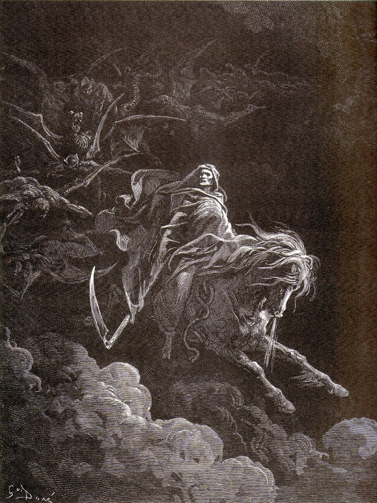
Lección 11 · Grabado (segunda parte)
Guerra, Biblia y línea: Callot y Doré
¿Qué hace el grabado con la violencia y con lo sagrado cuando se industrializa?
Gustave Doré, La Muerte en el caballo pálido, ilustración para La Sainte Bible, 1866. Dominio público, vía Wikimedia Commons.
02
Contexto
Jacques Callot, Les Misères et les Malheurs de la guerre ("Grandes miserias"): 18 aguafuertes (París, Israël Henriet, 1633), en el contexto de la Guerra de los Treinta Años. Los versos se atribuyen a Michel de Marolles. H
Gustave Doré:
Dante, Inferno (Hachette, 1861);
La Sainte Bible selon la Vulgate (Tours, Mame, 1866);
Milton, Paradise Lost (Cassell, 1866).
Doré dibujaba sobre el taco y otros grabadores lo tallaban (entre ellos Héliodore Pisan), en xilografía a contrafibra. H La "línea de Doré" es una traducción colectiva.
03
Conceptos
Serie. Reproducción industrial. Ilustración frente a obra autónoma. Lo sublime (Burke). La autoría compartida.
04
Vocabulario
Madera de testa. Grabador de reproducción. Galvanotipia. Tirada industrial.
05
Obra ancla
Doré, La Muerte en el caballo pálido, de la Biblia de 1866 (Apocalipsis 6:8).
Compárala con Durero (1498).
Compara la Pendaison ("El ahorcamiento", lámina 11 de Callot): un árbol cargado de ahorcados que la multitud contempla con orden y rutina.
Gustave Doré, La Muerte en el caballo pálido, ilustración para La Sainte Bible, 1866. Dominio público, vía Wikimedia Commons.06
Lectura visual
En Doré: la escala cósmica, la multitud, la luz teatral, la oscuridad como materia. Líneas paralelas densísimas producen negros profundos.
En Callot: figuras diminutas, composición ordenada, la ejecución como espectáculo público y militar. El horror está en la rutina.
07
Fuente primaria
Edmund Burke, A Philosophical Enquiry into the Origin of our Ideas of the Sublime and Beautiful (1757). El terror, a distancia segura, como fuente de lo sublime. Este texto explica tu experiencia infantil mejor que cualquier otro: terror más fascinación = sublime.
Apocalipsis 6.
08
Preguntas socráticas
La Biblia de tu madre era católica, y la que tú has leído es la Reina‑Valera 1960, protestante. Las imágenes de la muerte te llegaron por una tradición y el texto por otra. La de tu madre: ¿qué edición era? Tarea de investigación: identifica la edición, la editorial, el año y qué láminas de Doré incluía, y si eran reproducciones fotomecánicas de los grabados. Es arqueología de tu propia mirada.
Si otros tallaron la línea de Doré, ¿de quién es la imagen que recuerdas?
¿Lo sublime es una forma de mirar la muerte o una forma de no mirarla, de convertirla en espectáculo?
09
Conexión filosófica
Burke, y brevemente Kant (Crítica del juicio, 1790, lo sublime dinámico): el terror sublime exige seguridad para quien mira. ¿Mirar la muerte desde una Biblia ilustrada, en casa, de niño, era la condición perfecta de lo sublime?
10
Conexión con México
La circulación de Biblias ilustradas y estampas religiosas en hogares católicos mexicanos es plausible, pero no he encontrado estudios específicos sobre Doré en México NS.
Hay un eje documentado: la gráfica política de guerra, de Callot a Goya, y después Posada y la Revolución, con cautela sobre las influencias.
11
Conexión fotográfica
Sontag, Ante el dolor de los demás (2003): la historia de la imagen de guerra, de Callot y Goya a la fotografía.
Pregunta: ¿una foto de guerra puede ser sublime? ¿Debe?
12
Ejercicio
"Ilustrar sin ilustrar". Elige una estrofa de Manrique o una frase de Pedro Páramo. Haz una sola fotografía que dialogue con el texto sin representarlo. Si la foto necesita el texto para funcionar, pregúntate por qué.
Escribe la historia de tu relación con la Biblia de tu madre. ¿Dónde está hoy ese libro?
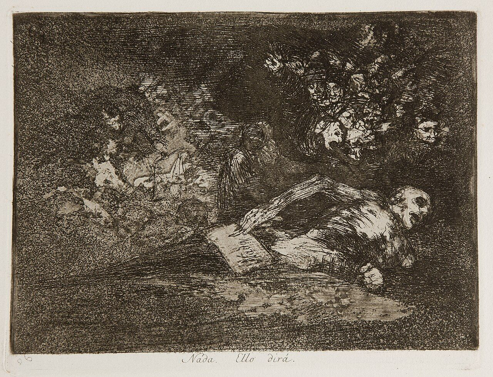
Lección 12 · Ruptura
Goya: la muerte sin garantía
¿Qué pasa con la muerte cuando nadie garantiza que tenga sentido?
Francisco de Goya, Desastres de la guerra n.º 69, «Nada. Ello dirá», c. 1810‑1820. Museo del Prado. Dominio público, vía Wikimedia Commons.
02
Contexto
Los Caprichos (1799), 80 aguafuertes con aguatinta. El 43 es El sueño de la razón produce monstruos.
Los Desastres de la guerra, grabados c. 1810‑1820 y publicados póstumamente en 1863 por la Real Academia de San Fernando (80 láminas; la 81 y la 82 se publicaron en 1957).
Los Disparates, publicados en 1864 como Los Proverbios (18 láminas).
Pinturas negras (1820‑1823), en los muros de la Quinta del Sordo, casa que Goya compró en febrero de 1819. Se pasaron a lienzo en 1874 bajo Salvador Martínez Cubells, por encargo del barón d'Erlanger, y se donaron al Estado en 1881. Los títulos no son de Goya: proceden en su mayoría del inventario de Antonio Brugada (1828).
En 2003, Juan José Junquera puso en duda la autoría de las Pinturas negras. La refutaron, entre otros, Nigel Glendinning, y el Prado las mantiene como de Goya. H sobre el debate.
03
Conceptos
Ilustración y superstición. Violencia. Testimonio ("Yo lo vi"). Absurdo. Secularización de la muerte.
04
Vocabulario
Aguatinta. Bruñidor. Prueba de estado. Edición póstuma.
05
Obra ancla
Desastres de la guerra, lámina 69: "Nada. Ello dirá".
Un cadáver semienterrado escribe "Nada" en un papel, rodeado de figuras espectrales. Una de ellas sostiene una balanza.
Francisco de Goya, Desastres de la guerra n.º 69, «Nada. Ello dirá», c. 1810‑1820. Museo del Prado. Dominio público, vía Wikimedia Commons.06
Lectura visual
¿Qué dice exactamente el muerto? "Nada". Es un mensaje del más allá que dice que no hay nada.
Pero "ello dirá" significa "el tiempo lo dirá" o "ya se verá". La ambigüedad es total.
Tres lecturas:
(a) negación de la vida futura Hi;
(b) lectura política: de la guerra no salió nada Hi;
(c) la intención de Goya es desconocida NS.
Compara la balanza con la de Finis gloriae mundi: allí era "NI MAS, NI MENOS", aquí es "NADA".
Y Saturno:
Es una pintura mural privada, en el comedor de una casa. No se pintó para ser vista por el público.
La confusión entre Κρόνος (Cronos, el titán) y χρόνος (chronos, el tiempo) es antigua y explica la fusión Saturno‑Tiempo que devora a sus hijos H. Es otra vez una cuestión lingüística.
07
Fuente primaria
Los títulos manuscritos de Goya en las pruebas de los Desastres: "Yo lo vi", "Esto es peor", "Nada. Ello dirá".
Las cartas de Goya a Martín Zapater.
08
Preguntas socráticas
Si el muerto dice "nada", ¿quién lo dice realmente?
¿Goya representa la muerte o la violencia? ¿Son lo mismo?
¿Es posible mirar los Desastres como bellos? ¿Es legítimo?
¿Qué cambia cuando la muerte ya no está dentro de una estructura religiosa que la ordena?
09
Conexión filosófica
Camus, El mito de Sísifo (1942): el absurdo como divorcio entre el deseo de sentido y el silencio del mundo. "Nada. Ello dirá" es casi una fórmula del absurdo, pero leerla así es C.
Kierkegaard, "Junto a una tumba" (1845): la seriedad de la muerte como indeterminación ("puede llegar hoy").
10
Conexión con México
Desde el siglo XX suele señalarse la influencia de Goya en José Clemente Orozco y en la gráfica de la Revolución I.
La violencia contemporánea:
Enrique Metinides (1934‑2022), fotógrafo de nota roja para La Prensa desde 1948.
Teresa Margolles, ¿De qué otra cosa podríamos hablar? (Pabellón de México, Bienal de Venecia, 2009).
Las personas desaparecidas: el Registro Nacional de Personas Desaparecidas y No Localizadas (RNPDNO) registra entre 120.000 y 130.000 casos no localizados en 2025‑2026, una cifra disputada por cambios metodológicos.
"Nada. Ello dirá" y la desaparición: la muerte sin cuerpo y sin certeza.
11
Conexión fotográfica
W. Eugene Smith, Minamata: Tomoko y su madre en el baño (diciembre de 1971; Life, 1972). Tomoko Kamimura murió en 1977.
En 1998 Aileen Mioko Smith retiró la imagen de la circulación y entregó el control a la familia. H
Es el caso ético central del curso: una imagen justa puede volverse injusta con el tiempo.
12
Ejercicio
"Yo lo vi". No fotografíes. Escribe una página sobre una muerte o un funeral que presenciaste. Después pregúntate: ¿una fotografía de ese momento añadiría algo o lo quitaría? ¿Quién tendría derecho a verla?
¿Puedes pensar la muerte sin ninguna estructura que la ordene? ¿Lo has intentado alguna vez?
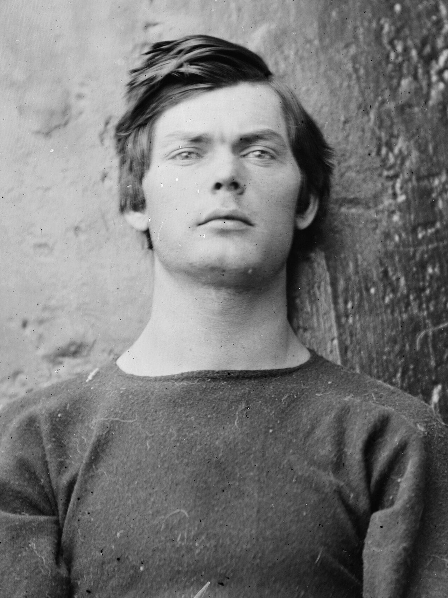
Lección 13 · Fotografía
La fotografía y los muertos
¿Toda fotografía tiene una relación con la muerte, o es una frase bonita que repetimos?
Alexander Gardner, Lewis Powell (Payne), 1865. Library of Congress. Dominio público, vía Wikimedia Commons.
02
Contexto
La fotografía post mortem es una práctica social del siglo XIX y principios del XX: daguerrotipos, cartes de visite, joyas con cabello y retrato.
Mito a desmontar: los "cadáveres de pie sostenidos por soportes". Los historiadores de la fotografía señalan que los soportes de pose eran para los vivos, y que muchas imágenes virales de "muertos de pie" son retratos de personas vivas I.
En México, la fotografía de angelitos, niños muertos, está documentada en:
Juan de Dios Machain (Ameca, Jalisco);
Romualdo García (Guanajuato);
Artes de México 15, "El arte ritual de la muerte niña" (1992).
03
Conceptos
Índice (la huella física de la luz).
"Esto ha sido" (ça a été, Barthes).
Punctum y studium.
Complejo de la momia (Bazin).
Fotografía post mortem, fotografía memorial y fotografía de los dolientes: tres cosas distintas.
04
Vocabulario
Daguerrotipo. Ambrotipo. Ferrotipo. Carte de visite. Retrato de estudio. Velorio de angelito.
05
Obra ancla
Alexander Gardner, retrato de Lewis Payne, condenado a muerte en 1865, tal como lo lee Barthes en La Chambre claire: "il est mort et il va mourir".
Alexander Gardner, Lewis Powell (Payne), 1865. Library of Congress. Dominio público, vía Wikimedia Commons.06
Lectura visual
Aplica el método completo a la foto de Payne, pero empieza sin saber quién es.
Luego lee a Barthes. ¿Cambia la imagen al saber que lo ahorcaron?
Lección: en fotografía, la capa 2 ("sé") puede transformar por completo la capa 1.
07
Fuente primaria
Barthes, La cámara lúcida (1980), segunda parte.
Bazin, "Ontología de la imagen fotográfica" (1945).
Kracauer, "La fotografía" (1927).
Sontag, "En la caverna de Platón" (Sobre la fotografía, 1977): "All photographs are memento mori", "todas las fotografías son memento mori".
08
Preguntas socráticas
Tus preguntas de la Parte XI:
¿Por qué fotografiamos a los muertos?
¿Por qué fotografiamos a quienes los recuerdan?
¿Toda fotografía es memento mori? Examina la frase de Sontag. Es brillante, pero ¿es verdadera?
Si toda foto lo es, el concepto pierde capacidad de distinguir.
¿Una foto de producto para Amazon es un memento mori?
¿Qué diferencia hay entre documentar la muerte y estetizarla?
09
Conexión filosófica
Barthes y la foto del Invernadero, la de su madre, que no reproduce. Es la muerte en segunda persona. Pregunta: ¿por qué Barthes se niega a mostrarla? ¿Qué le enseña eso a un fotógrafo?
10
Conexión con México
La muerte niña: según la doctrina católica, el niño bautizado que muere va directamente al cielo, y de ahí el "angelito".
El velorio de angelito fue una práctica festiva documentada en varias regiones de México y de América Latina [H, en términos generales; localiza los casos].
La fotografía se integró dentro del ritual, no fuera de él. Esto es clave para tu ética: aquí la cámara formaba parte de la práctica, no la observaba desde fuera.
11
Conexión fotográfica
Peter Hujar, Portraits in Life and Death (1976, con introducción de Sontag): retratos de amigos vivos en diálogo con fotografías de las catacumbas de Palermo (1963).
Hujar, Candy Darling on Her Deathbed (1973).
Richard Avedon, retratos de su padre Jacob Israel Avedon (MoMA, 1974).
Nan Goldin, Cookie in her casket, NYC, Nov. 15, 1989.
12
Ejercicios
"Álbum": toma un álbum familiar y haz una lectura completa de una foto de alguien que ya murió. ¿Qué sabes que la foto no dice?
"Ausencia" (de tu lista): fotografía a alguien sin mostrarlo.
Aplica el método con extremo cuidado en la capa 4.
La lectura popular "dualidad vida/muerte" es plausible, pero hay que examinar si proyecta un binarismo europeo sobre un sistema de opuestos complementarios (López Austin) que funciona de otra manera.
¿Qué sabes realmente de cómo se leía un códice? ¿Quién lo leía? ¿En voz alta?
07
Fuentes primarias
Códice Florentino, libro III, apéndice, caps. 1‑3. Es accesible en la Library of Congress / World Digital Library y en el Digital Florentine Codex de la Getty, con náhuatl, español e inglés.
Durán, Historia de las Indias de Nueva España, sobre las fiestas de los muertos.
Popol Vuh, sobre Xibalbá (tradición maya k'iche'; manuscrito de Ximénez, c. 1701).
Cantares mexicanos.
08
Preguntas socráticas
Si todo lo que sabemos lo escribieron o supervisaron frailes, ¿qué parte es voz indígena y qué parte es traducción, selección o censura?
¿Es legítimo llamar "filosofía náhuatl" (León‑Portilla) a este pensamiento? ¿Qué se gana y qué se pierde con esa categoría?
¿Nezahualcóyotl escribió los poemas que se le atribuyen? Jongsoo Lee (The Allure of Nezahualcoyotl, 2008) sostiene que la imagen del rey‑poeta es en gran parte una construcción colonial y posterior Hi. Bierhorst (1985) lee los Cantares como "cantos de fantasmas" posteriores a la conquista, una lectura muy criticada (Karttunen, Lockhart, León‑Portilla).
Cuando alguien te diga en el campo "así lo hacían los aztecas", ¿cómo lo sabe?
09
Conexión filosófica
Aquí la filosofía europea debe callar un momento. La pregunta no es qué diría Heidegger del Mictlan, sino qué categorías tenemos para escuchar un pensamiento que no se organizó como filosofía occidental.
Robert Hertz (1907) y la doble sepultura: un marco antropológico que sí ayuda a pensar prácticas mesoamericanas y contemporáneas, como la limpieza de huesos en Pomuch.
10
Conexión con México
Es el módulo. Añade una advertencia: el Día de Muertos no es la continuación directa de las veintenas nahuas. Es un debate abierto:
la posición de la continuidad y el sincretismo;
Elsa Malvido, en "La festividad de Todos Santos, Fieles Difuntos y su altar de muertos en México, patrimonio 'intangible' de la humanidad" (2006), sostiene un origen principalmente católico y europeo y un relato de origen prehispánico construido por el nacionalismo del siglo XX.
11
Conexión fotográfica
Mariana Yampolsky, Graciela Iturbide y Flor Garduño (Testigos del tiempo, 1992) fotografiaron comunidades indígenas. Pregunta crítica: ¿dónde está la línea entre documentar y exotizar? Mira las fotos con esa pregunta, no con admiración automática.
12
Ejercicios
Lectura de fuente: lee el apéndice del libro III del Códice Florentino. Haz tres columnas: lo que el texto dice / quién lo dice (informantes nahuas, Sahagún, el marco cristiano) / lo que no podemos saber.
Foto, "Mi Mictlan": antes de fotografiar los lugares de los muertos de otros, fotografía el tuyo. ¿Dónde están tus muertos? ¿Qué lugar funciona para ti como "lugar de los muertos"?
13
Bibliografía
López Austin 1980; León‑Portilla 1956; Matos Moctezuma 1975 y 2010; Bierhorst 1985; Lee 2008; Arqueología Mexicana 40 (1999) y Especial 52 (2013); Hertz 1907; Malvido 2006.
14
Reflexión final
¿Qué de lo que creías sobre la "visión prehispánica de la muerte" viene de una fuente, y qué viene de una película, un museo o un folleto turístico?
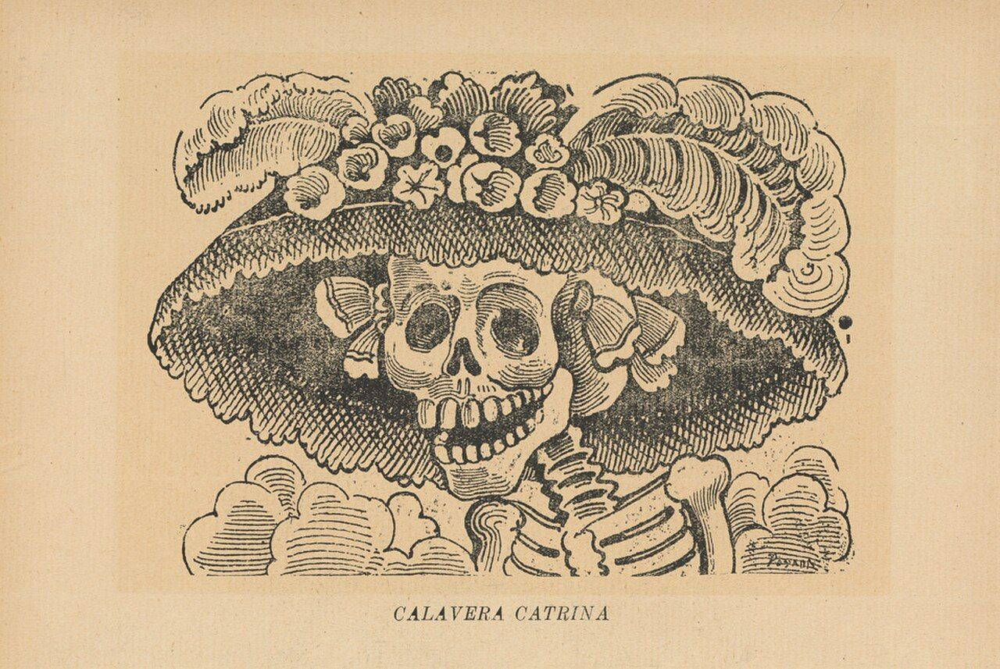
Lección 15 · México
Todos Santos, calaveras y nación
¿Existe "la visión mexicana de la muerte"? ¿Quién la inventó, cuándo y para qué?
José Guadalupe Posada, la calavera conocida como «La Catrina», c. 1910‑1913. Dominio público, vía Wikimedia Commons.
02
Contexto
Todos los Santos (1 de noviembre) y Fieles Difuntos (2 de noviembre) son fiestas católicas europeas. La conmemoración de los difuntos del 2 de noviembre se instituyó en las casas de Cluny con el abad Odilón: c. 998 según la tradición, c. 1030 según otras fuentes. Llegaron con la evangelización. H
Hay varias historias regionales de apropiación, mezcla y reinvención.
En el siglo XX, el Estado posrevolucionario y los intelectuales construyen la muerte como emblema nacional. Es la tesis de Claudio Lomnitz, La idea de la muerte en México (2005/2006).
UNESCO proclama en 2003, e inscribe en 2008, las "fiestas indígenas dedicadas a los muertos". El título oficial en inglés es "Indigenous festivity dedicated to the dead". Fíjate en el adjetivo indígena.
El Desfile de Día de Muertos de la Ciudad de México empezó en 2016, después de que la película Spectre (2015) mostrara un desfile que no existía. Es un caso perfecto de invención de la tradición (Hobsbawm y Ranger, 1983).
03
Conceptos
Invención de la tradición. Nacionalismo cultural. Patrimonialización. Turistificación. Sincretismo frente a superposición. Doble sepultura (Hertz). Ritos de paso (Van Gennep).
04
Vocabulario
Ofrenda y altar. Calavera y calaverita. Alfeñique. Pan de muerto. Alumbrada. Velación. Exvoto y retablo. Nota roja. Y, regionalmente:
Hanal Pixán (Yucatán, maya);
Choo Ba'ak, la limpieza de los restos en Pomuch (Campeche);
Xantolo (Huasteca);
Animecha Kejtzitakua (Janitzio y la región del lago de Pátzcuaro, purépecha).
05
Obra ancla
José Guadalupe Posada, la imagen conocida hoy como La Catrina.
Posada la grabó c. 1910‑1912, y su primera publicación segura es 1913, después de la muerte de Posada (20 de enero de 1913), en una hoja de Antonio Vanegas Arroyo: "Remate de calaveras alegres y sandungueras". El verso habla de las "garbanceras": mujeres de origen humilde que imitaban la moda europea.
Ni "Garbancera" ni "Catrina" son títulos de Posada. El nombre "Calavera Catrina" aparece en la monografía de 1930 (Frances Toor, Paul O'Higgins y Blas Vanegas Arroyo, con introducción de Diego Rivera).
Rivera la convirtió en figura de cuerpo entero e icono nacional en Sueño de una tarde dominical en la Alameda Central (1946‑1947).
Rafael Barajas "El Fisgón" (Posada: mito y mitote, 2009) desmonta además el mito de Posada como precursor revolucionario.
José Guadalupe Posada, la calavera conocida como «La Catrina», c. 1910‑1913. Dominio público, vía Wikimedia Commons.06
Lectura visual
Compara las tres versiones: la hoja de 1913, la monografía de 1930 y el mural de 1947.
Pasa de una sátira de clase y de género a un icono nacional y a un disfraz global.
¿Qué se conserva de una a otra? ¿Qué se pierde?
Pregunta final: ¿es la Catrina un memento mori? En 1913 era sátira social, igualación burlona: más cerca de la danza macabra que de la vanitas.
07
Fuentes primarias
Las hojas volantes de Vanegas Arroyo.
Octavio Paz, "Todos santos, día de muertos", en El laberinto de la soledad (1950; edición revisada, FCE, 1959): "el mexicano [...] frecuenta [la muerte], la burla, la acaricia, duerme con ella, la festeja". Lee a Paz como fuente primaria de un discurso, no como descripción etnográfica.
Juan Rulfo, Pedro Páramo (1955).
Xavier Villaurrutia, Nostalgia de la muerte (1938).
José Gorostiza, Muerte sin fin (1939).
Jaime Sabines, "Algo sobre la muerte del mayor Sabines" (1973).
08
Preguntas socráticas
"Los mexicanos se ríen de la muerte". ¿Quiénes? ¿Dónde? ¿Cuándo? ¿Según qué fuente?
¿Se ríe de la muerte una madre que busca a su hijo desaparecido?
Si el desfile nació de una película, ¿es falso? ¿Una tradición inventada puede volverse verdadera?
¿La Santa Muerte (Chesnut, 2012) es parte del Día de Muertos? No lo es. Distinguir sus historias es parte del trabajo.
09
Conexión filosófica
Samuel Scheffler, Death and the Afterlife (2013): la "vida después de la muerte colectiva", la supervivencia de otros después de nosotros, como condición del sentido.
¿El Día de Muertos es, más que un memento mori, una práctica de continuidad colectiva?
Van Gennep y Hertz: el ritual como paso y el muerto como alguien que necesita tiempo y cuidado para terminar de morir.
10
Conexión con México
Es el módulo. Añade el mapa regional de Historia y filosofía (ruta mexicana) y las muertes que no caben en la fiesta: la violencia, la desaparición y la pandemia de 2020‑2021.
11
Conexión fotográfica
Manuel Álvarez Bravo, Obrero en huelga, asesinado (1934) y La buena fama durmiendo (1938‑1939).
Graciela Iturbide, Juchitán de las mujeres (1989), fotografías de "angelitos".
Enrique Metinides.
Pedro Meyer.
Pregunta: ¿qué fotografía mexicana de la muerte no tiene calaveras?
12
Ejercicio
"Genealogía de una imagen". Fotografía una Catrina en la calle sólo si puedes mostrar en la imagen, o en la serie, algo de su cadena: el maquillaje, el turismo, el comercio, el origen satírico. Si no puedes, no la fotografíes y escribe por qué.
13
Bibliografía
Lomnitz 2005/2006; Brandes 2006; Nutini 1988; Malvido 2006; Barajas 2009; Frank 1998; López Casillas 2004; Marchi 2009; Chesnut 2012; Toor 1947; Durand y Massey 1995; Hobsbawm y Ranger 1983.
14
Reflexión final
Relee tu texto v1. ¿Cuántas de tus ideas sobre "la muerte en México" venían de Paz, de Coco (Pixar, 2017), de Spectre o de una fotografía de revista?
Lección 16 · Síntesis
Mirar a los vivos
Después de todo esto, ¿qué significa memento mori para ti? ¿Y qué significa recordar?
Pieter Bruegel el Viejo, El triunfo de la muerte, 1562‑1563. Museo del Prado, Madrid. Dominio público, vía Wikimedia Commons.
02
Contexto
Pedro Meyer, Fotografío para recordar (I Photograph to Remember, 1991). Un CD‑ROM con la narración de Meyer y música de Manuel Rocha, sobre la enfermedad y la muerte de sus padres.
Es uno de los primeros ensayos fotográficos digitales. Un fotógrafo mexicano mira su propio duelo en segunda persona.
03
Conceptos
Duelo como trabajo. Posmemoria (Marianne Hirsch). Contrato civil de la fotografía (Ariella Azoulay). Crítica del documental (Martha Rosler). Ética de la mirada.
04
Vocabulario
Serie. Secuencia. Edición. Libro de fotografía. Instalación. Consentimiento informado.
05
Obra ancla
Fotografío para recordar, y el Triunfo de la muerte, 3.ª visita. Mira el cuadro de Bruegel después de todo el curso. ¿Qué ves ahora?
Pieter Bruegel el Viejo, El triunfo de la muerte, 1562‑1563. Museo del Prado, Madrid. Dominio público, vía Wikimedia Commons.06
Lectura visual
Lee la obra de Meyer con el método completo y compárala con el Triunfo:
uno es la muerte de todos, en 3.ª persona del plural;
el otro es la muerte de dos personas amadas, en 2.ª persona.
¿Cuál te conmueve más? ¿Por qué? ¿Cuál es más "verdadera"?
07
Fuente primaria
Tus propios textos: las versiones 1 y 2 de "Lo que creo que significa la muerte", tus fichas y tu diario de campo.
08
Preguntas socráticas
¿Es la muerte algo que da sentido a la vida, o un límite que proyectamos sobre ella?
¿Qué parte de lo aprendido es conocimiento y qué parte es consuelo?
¿Necesitas que la muerte signifique algo?
09
Conexión filosófica
Es el debate final, sin resolución obligatoria:
Epicuro y Lucrecio: la muerte no es nada para nosotros, incluido el argumento de la simetría (De rerum natura III, 830‑842 y 972‑977).
Heidegger: el ser‑para‑la‑muerte como condición de una existencia propia.
Hägglund (Esta vida, 2019/2022): sólo un ser finito puede tener algo en juego.
Williams: la inmortalidad sería tediosa.
Nagel ("Death", 1970): la muerte es un mal por privación.
Scheffler: importa más que otros sigan viviendo.
Jankélévitch: la muerte es impensable y, sin embargo, lo decide todo.
Escribe la pregunta que te llevas al campo. Una sola.
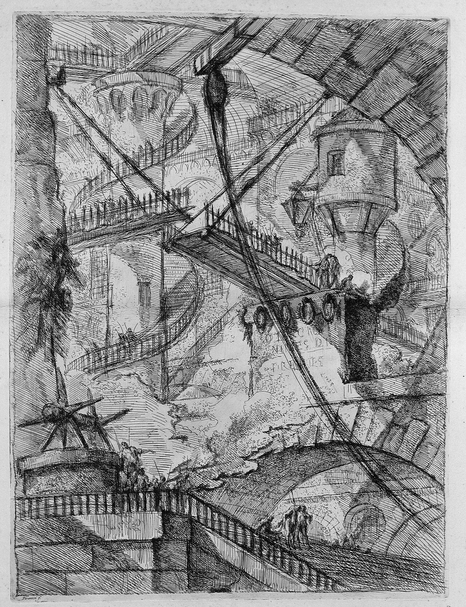
Rutas · Rutas 7 y 8
Historia y filosofía
Doce funciones de la imagen de la muerte y veinte filósofos frente a veinte imágenes.
Giovanni Battista Piranesi, Carceri d'invenzione, lámina VII, «El puente levadizo», c. 1750. Dominio público, vía Wikimedia Commons.
(Incluye la comparación Europa–México, Parte IX, y la muerte desde varias disciplinas, Parte X.)
7. RUTA HISTÓRICA
La ruta no sigue una historia de estilos. Sigue cambios en la función de la imagen de la muerte. Cada etapa responde a una pregunta: ¿para qué sirve aquí la imagen de la muerte?
Etapa
Periodo aprox.
Función dominante de la imagen
Obras y hechos clave
Módulos
1. Escatológica
s. XII‑XIV
Advertir del juicio
Juicios finales en portadas; Dies irae; Tres vivos y tres muertos
3
2. Macabra
s. XIV‑XV
Mostrar el cadáver: corrupción e igualación
Transi de La Grange (c. 1402); Camposanto de Pisa; Inocentes (1424‑1425)
3, 4
3. Técnica
s. XV
Enseñar a morir
Ars moriendi (c. 1415; xilografías c. 1450‑1460); Bosch
5
4. Impresa y satírica
c. 1490‑1560
Multiplicar y privatizar
Durero (1498, 1513, 1514); Holbein (1538); Cock y Bruegel (1557)
7, 8
5. Cósmica y social
c. 1560
La muerte como ejército y como mundo
Bruegel, Triunfo (1562‑1563)
1, 7
6. Barroca
c. 1600‑1700
Desengañar: la vanitas y el juicio por la caridad
Leiden; Pereda; Valdés Leal (1670‑1672); Sor Juana
9
7. Elegíaca
s. XVII‑XVIII
Llorar la felicidad perdida: la ruina
Guercino, Poussin, Piranesi, Hubert Robert
10
8. Testimonial
1633‑1820
Denunciar la violencia
Callot (1633); Goya, Desastres (c. 1810‑1820)
11, 12
9. Sublime y romántica
c. 1757‑1880
Estremecer con seguridad
Burke (1757); Doré (1861‑1866)
11
10. Secular y privada
s. XIX
Conservar al individuo
Fotografía post mortem; cementerios modernos (Laqueur); la muerte "del otro" (Ariès)
13
11. Nacional
s. XX
Construir una identidad
La Catrina de Rivera (1947); Paz (1950); patrimonio UNESCO (2003/2008)
15
12. Global y mediática
s. XX‑XXI
Consumir, recordar, denunciar
Spectre (2015) y el desfile (2016); nota roja; desaparecidos
15, 16
Advertencias historiográficas:
El gran relato de Philippe Ariès (de la "muerte domesticada" a la "muerte prohibida") es influyente y discutido. Michel Vovelle le reprochó que dependa de fuentes de élite y que no dé cuenta de lo social. Úsalo como hipótesis, no como hecho.
El relato "la peste negra causó el arte macabro" es simplificador. La cronología no encaja del todo.
El relato "la modernidad ocultó la muerte" (Gorer, "The Pornography of Death", 1955; Ariès; Becker) es discutido. Laqueur (The Work of the Dead, 2015) muestra que los muertos siguieron siendo centrales en la cultura moderna.
8. RUTA FILOSÓFICA
Principio de la ruta: ningún filósofo aparece solo. Cada uno entra ante una imagen y con una pregunta.
#
Autor
Texto preciso
Tesis mínima
Imagen con la que dialoga
Pregunta que abre
Módulo
1
Platón
Fedón 64a, 67e
La filosofía es ejercitarse en morir
Camposanto de Pisa
¿Aprender a morir es despreciar la vida?
3
2
Epicuro
Carta a Meneceo 124‑127; Sentencia Vaticana 31
La muerte no es nada para nosotros
La muerte y el avaro; la danza macabra
¿Por qué temer lo que no se experimenta?
4, 5, 9
3
Lucrecio
De rerum natura III, 830‑1094 (simetría: 832‑842; 972‑977)
No lamentamos el tiempo antes de nacer. ¿Por qué el de después?
Ruinas, Arcadia
¿Es válido el argumento de la simetría?
10, 16
4
Horacio
Odas I, 11; IV, 7
Carpe diem; pulvis et umbra
Bodegones, rosas
¿La conciencia de la muerte lleva al goce o a la melancolía?
2, 10
5
Séneca
Epístolas 1, 24, 26; De brevitate vitae
Morimos cada día. La vida no es breve, la malgastamos
Dürer, Caballero
¿Meditar la muerte libera?
8
6
Marco Aurelio
Meditaciones II, 11‑14; IV, 32‑33; IX, 3
La muerte es un proceso natural. Todo cambia
Pisa; la ruina; Sugimoto
¿Consolar con la naturaleza es consolar?
10
7
Montaigne
Essais I, 20 I19; III, 12
Primero, familiarizarse con la muerte. Después (III, 12), ¡no pensar tanto en ella! Montaigne cambió de opinión
Bruegel
¿Mirar la muerte prepara para ella?
1
8
Pascal
Pensamientos (diversión; "el último acto es sangriento")
Nos divertimos para no pensar en la muerte
La vanitas
¿La vanitas es lo contrario de la diversión o una diversión más?
9
9
Burke
Enquiry (1757)
Terror a distancia = sublime
Doré
¿El miedo infantil al Triunfo era estético?
11
10
Schopenhauer
El mundo..., II, cap. 41
El individuo perece y la voluntad persiste
Jardín; ruinas
¿La muerte es la verdadera musa de la filosofía?
6, 10
11
Kierkegaard
"Junto a una tumba" (1845)
La seriedad ante la muerte: su certeza y su indeterminación ("puede ser hoy")
In ictu oculi; Goya
¿Qué cambia si la muerte puede ser hoy?
12
12
Heidegger
Ser y tiempo §§46‑53
Ser‑para‑la‑muerte. El "se muere" impersonal (das Man) frente al adelantarse (Vorlaufen)
Danza macabra (el "se muere"); la vanitas
¿La vanitas es autenticidad o cavilación?
9, 16
13
Camus
El mito de Sísifo (1942)
El absurdo. Rechazo del salto religioso y del suicidio
Goya, "Nada"
¿Se puede vivir sin que la muerte signifique?
12
14
Jankélévitch
La muerte (1966)
1.ª, 2.ª y 3.ª persona
Todo el curso
¿En qué persona fotografías?
2, 16
15
Nagel
"Death" (1970)
La muerte es un mal por privación
Post mortem de niños
¿A quién daña una muerte?
13
16
Williams
"The Makropulos Case" (1973)
La inmortalidad sería tediosa
Et in Arcadia
¿Querrías no morir?
10, 16
17
Levinas
Dios, la muerte y el tiempo (1993)
La muerte del otro precede a la propia
Barthes, el Invernadero
¿Es la muerte del otro la muerte primera?
13
18
Scheffler
Death and the Afterlife (2013)
La "vida después de la muerte colectiva"
Día de Muertos
¿El sentido depende de que otros sigan?
15, 16
19
Hägglund
Esta vida (2019)
La finitud es la condición del cuidado y del compromiso
Pedro Meyer
¿Una vida infinita tendría algo en juego?
16
20
Barthes, Sontag, Bazin, Kracauer
Ver la ruta fotográfica
La foto, el tiempo y la muerte
Toda la fotografía
¿Toda foto es memento mori?
13
La pregunta abierta de la ruta (no se responde por ti):
¿La muerte da sentido a la vida (Heidegger, Hägglund), o es un límite que no nos concierne (Epicuro)? ¿Importa más la propia muerte o la continuidad de los otros (Scheffler)? ¿O el sentido es una pregunta equivocada (Camus)?
Una advertencia sobre Heidegger: su compromiso con el nacionalsocialismo, documentado y agravado por los Cuadernos negros publicados desde 2014, es un problema que conviene conocer. No invalida automáticamente sus análisis, pero sí exige leerlos con cuidado.
Rutas · Ruta 9 · Europa y México
La muerte en México
Capas históricas, mapa regional y las cuatro preguntas de la comparación.
Miguel Cabrera, Retrato de sor Juana Inés de la Cruz, c. 1750. Museo Nacional de Historia, Castillo de Chapultepec. Dominio público, vía Wikimedia Commons.
9. RUTA MEXICANA
9.1 Regla contra la generalización
Cada vez que escribas o pienses "los mexicanos creen / hacen / sienten...", detente y contesta cinco preguntas:
¿Quiénes? Etnia o pueblo, clase, edad, género, religión (católicos, evangélicos, sin religión), ciudad o campo.
¿Qué dirían quienes no lo hacen? Protestantes, que en muchos lugares no ponen ofrenda; familias urbanas que sólo van al panteón; migrantes; quienes buscan a sus desaparecidos.
9.2 Capas históricas (no son etapas que se sustituyen, sino capas que coexisten)
La foto, la comida y el objeto de una persona concreta
—
Cristianismo
Central
Central en muchas variantes (misa, rezos, Todos Santos), a veces marginal
Sí: el calendario, el Purgatorio, las ánimas y la vanitas novohispana son herencia directa
Tradición indígena
Ninguna
Variable según la región y debatida (Malvido frente a la continuidad)
Parcial y debatida
Modernidad
La secularización de la vanitas (s. XIX)
El nacionalismo, el turismo y el mercado lo transformaron todo
Sí: los dos son reelaborados por el siglo XX
Las cuatro preguntas de la Parte IX
1. ¿Una calavera mexicana es equivalente a una calavera europea?
Materialmente, a veces sí: la calavera impresa mexicana es heredera técnica del grabado europeo. H
Funcionalmente, casi nunca. La calavera europea del bodegón es anónima y abstracta: tu calavera futura. La calavera de azúcar lleva a veces un nombre escrito en la frente, el de un vivo que la regala o la come. Es un juego social.
Lo que se gana al compararlas es ver la herencia técnica. Lo que se pierde es la función relacional.
2. ¿Una ofrenda es una vanitas?
No, en su función principal I. La vanitas dice "todo esto es vacío". La ofrenda dice "esto es para ti": la comida, la bebida, la foto.
La vanitas renuncia al mundo; la ofrenda lo ofrece.
Pero hay un punto de contacto real: las dos disponen objetos perecederos en el tiempo (flores, fruta, pan). Una ofrenda el 3 de noviembre, marchita, puede funcionar como vanitas para un observador externo. Esa lectura es tuya, no de quien la montó.
3. ¿La Catrina es un memento mori?
En 1913 era sátira social, más cercana a la danza macabra (la igualación burlona de las pretensiones de clase).
En 1947 era un emblema nacional. Hoy es sobre todo un disfraz y una marca.
Llamarla memento mori es una categoría europea aplicada después C.
4. ¿Qué se gana y qué se pierde al comparar?
Se gana:
ver herencias reales (el calendario, el grabado, el Barroco hispánico);
ver las proyecciones propias;
afinar los conceptos.
Se pierde, si se compara mal:
la especificidad de las prácticas;
la voz de quienes las hacen;
la diversidad interna de México;
la posibilidad de que el Día de Muertos plantee preguntas que la tradición europea no sabe formular, por ejemplo la reciprocidad con los muertos.
Hipótesis de trabajo para el campo
"El memento mori le habla a un individuo de su muerte futura. Muchas prácticas de Día de Muertos le hablan a una familia de sus muertos pasados. Si esta hipótesis es correcta, mi proyecto no debería buscar memento mori en México, sino preguntarse qué forma de memoria es esta, y quizá qué me enseña sobre una relación con los muertos que la tradición europea que admiro no tiene."
Esta hipótesis es refutable. Si encuentras prácticas centradas en la propia muerte futura, anótalas.
PARTE X. LA MUERTE DESDE MUCHAS DISCIPLINAS
Disciplina
Pregunta propia
Qué puede explicar
Qué no puede explicar
Autores de referencia en el curso
Arte
¿Cómo se representa?
Las formas, las convenciones y los efectos sobre el espectador
Lo que sentía la gente fuera del arte
Panofsky, Baxandall, Belting, Koerner
Historia
¿Cómo cambian las prácticas?
Cambios documentados, instituciones, cifras
La experiencia íntima; la ausencia de fuentes de los pobres
Ariès, Vovelle, Laqueur, Malvido
Filosofía
¿Qué significa morir? ¿Es un mal?
La estructura conceptual, los argumentos
La variedad cultural. Tiende a universalizar
Epicuro... Scheffler
Religión y teología
¿Qué hay después? Alma, cuerpo, juicio
La lógica interna de las creencias
Si son verdaderas. No debe decidirlo el curso
Biblia, Sahagún, Mañara
Antropología
¿Qué hacen los vivos con sus muertos?
El ritual, la comunidad, el intercambio, el parentesco
La pregunta metafísica. El individuo
Hertz, Van Gennep, Metcalf y Huntington, Nutini, Brandes
Lengua
¿Cómo se nombra?
Eufemismos, tabúes, metáforas, gramática
Lo que no se dice
Mapa conceptual; tu registro de campo
Literatura
¿Cómo se narra?
La experiencia desde dentro, la voz, la forma
La generalización
Manrique, Quevedo, Sor Juana, Tolstói (La muerte de Iván Ilich), Rulfo, Sabines
Psicología
¿Cómo se vive la pérdida?
Duelo, apego, vínculos continuos, pérdida ambigua
El sentido cultural. Tiende a patologizar
Freud (1917); Boss (1999); la literatura sobre los "vínculos continuos"
Fotografía
¿Qué conserva? ¿Qué testimonia?
Presencia, ausencia, índice, tiempo
Lo que no se ve. Lo que la foto hace a quien es fotografiado
Barthes, Sontag, Batchen, Azoulay
Regla: cuando una disciplina pretenda cerrar la pregunta de otra, anótalo como invasión. Por ejemplo: "el Día de Muertos es sólo duelo sano" (psicología que absorbe la religión); "la vanitas es sólo capitalismo holandés" (historia social que absorbe el arte); "la muerte no es nada" (filosofía que absorbe el duelo).
Nota sobre la psicología: la teoría de los "vínculos continuos" (continuing bonds: Klass, Silverman y Nickman, 1996) sostiene que mantener una relación con los muertos no es patológico. Es muy pertinente para el Día de Muertos. La referencia exacta está en la bibliografía como pendiente de verificación porque no la verifiqué en catálogo.
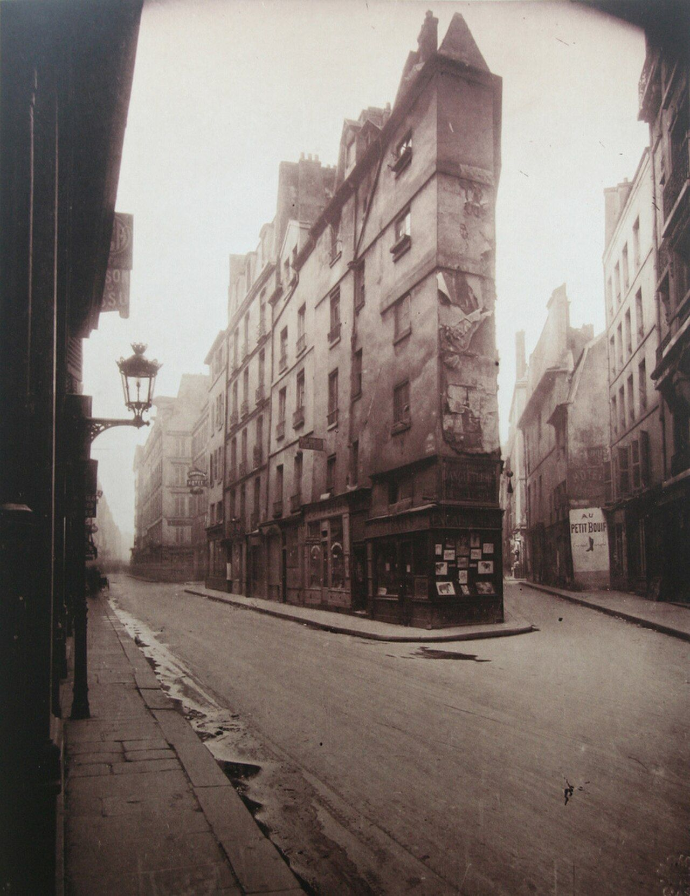
Rutas · Ruta 10
Ruta fotográfica
Veintiún fotógrafos y la relación que cada uno plantea entre fotografía y muerte.
Eugène Atget, Coin rue de Seine, París, 1924‑1926. Dominio público, vía Wikimedia Commons.
10. RUTA FOTOGRÁFICA
Principio de la ruta: no es una lista de fotógrafos importantes. Cada autor entra porque plantea una relación distinta entre fotografía y muerte. La tabla muestra qué eje conceptual trabaja cada uno. ● = eje central, ○ = presente.
Fotógrafo
Obra clave (verificada)
Mortalidad
Ausencia
Memoria
Tiempo
Desaparición
Duelo
Cuerpo
Identidad
Muerte explícita
La pregunta que te deja
Eugène Atget
París, c. 1898‑1927
●
○
●
●
¿Una calle vacía es una forma de retrato? ¿Un "lugar del crimen" (Benjamin)?
W. Eugene Smith
Country Doctor (1948); Spanish Village (1951, incluye un velatorio); Nurse Midwife (1951); Tomoko y su madre en el baño (1971)
●
●
●
○
¿Una imagen justa puede volverse injusta? (retirada en 1998)
Diane Arbus
An Aperture Monograph (1972)
○
●
●
¿Quién tiene derecho a mirar a quién? (crítica de Sontag)
Robert Frank
The Americans (1958/1959); Funeral, St. Helena; The Lines of My Hand (1972). Su hija Andrea murió en 1974
○
●
●
●
○
¿Cómo cambia la obra de un fotógrafo después de su propio duelo?
Exilio, ritual, ruina: ¿la fotografía como forma de no pertenecer?
Daido Moriyama
Shashin yo sayonara (1972)
●
○
●
○
¿Puede la fotografía despedirse de sí misma? ¿La imagen borrosa es una forma de olvido?
Nan Goldin
The Ballad of Sexual Dependency (1986); Cookie in her casket (1989); Sisters, Saints and Sibyls (2004), sobre el suicidio de su hermana Barbara en 1965
●
●
●
●
●
●
●
¿Fotografiar a tus amigos como un antídoto contra la pérdida? (el sida)
Sally Mann
What Remains (2003); Deep South (2005); Proud Flesh (2009); Hold Still (2015)
●
○
●
●
○
●
●
¿Qué queda? El cuerpo en descomposición, el paisaje de batalla, el perro muerto, el marido enfermo
Roger Ballen
Platteland (1994); Outland (2001); Shadow Chamber (2005); Boarding House (2009); Asylum of the Birds (2014)
○
●
●
¿Lo absurdo y lo grotesco hablan de la muerte o de la psique? ¿Hay aquí un Bosch?
La película entera en una sola exposición; el mar sin humanos; la cera que parece viva: la fotografía como vanitas del tiempo
Peter Hujar
Portraits in Life and Death (1976, introducción de Sontag); Candy Darling on Her Deathbed (1973)
●
●
●
●
●
¿Qué pasa al poner retratos de vivos junto a momias?
Richard Avedon
Retratos de su padre Jacob Israel Avedon (MoMA, 1974)
●
○
●
●
●
¿Es crueldad o amor fotografiar el deterioro de tu padre?
Masahisa Fukase
Karasu / Ravens (1986)
●
○
●
●
¿El duelo (por una separación) puede fotografiarse sin mostrar a nadie?
Walter Schels y Beate Lakotta
Noch mal leben vor dem Tod (2004)
●
●
●
●
Antes y después: ¿qué se ve de la muerte en un rostro?
Andres Serrano
The Morgue (1992)
●
○
●
¿Estetizar a un anónimo muerto es legítimo? (caso ético)
Manuel Álvarez Bravo
Obrero en huelga, asesinado (1934); La buena fama durmiendo (1938‑1939)
○
●
●
¿La muerte política puede ser bella sin traicionar al muerto?
Graciela Iturbide
Juchitán de las mujeres (1989); fotografías de angelitos; El baño de Frida (2006)
○
●
●
○
●
○
El baño de Frida: fotografiar los objetos de una muerta como un retrato
Enrique Metinides
Nota roja, La Prensa (1948‑1997)
●
●
●
Espectáculo, testimonio, compasión: ¿dónde está la línea?
Pedro Meyer
Fotografío para recordar (1991)
●
○
●
●
●
●
○
El duelo en 2.ª persona. El fotógrafo como hijo
Juan de Dios Machain; Romualdo García
Retratos de angelitos (Jalisco; Guanajuato)
●
●
●
●
●
La foto como parte del rito, no como mirada externa
Teresa Margolles (artista, no sólo fotógrafa)
¿De qué otra cosa podríamos hablar? (Venecia, 2009)
●
●
●
●
●
●
●
¿Qué queda de la violencia cuando no hay imagen?
Tres textos teóricos que acompañan la ruta:
Sontag, "En la caverna de Platón" (1977). Todas las fotografías son memento mori. Examina si la frase es verdadera o sólo brillante.
Barthes, La cámara lúcida (1980): "esto ha sido"; "está muerto y va a morir"; la foto del Invernadero no mostrada.
Azoulay, The Civil Contract of Photography (2008): la fotografía como relación entre fotógrafo, fotografiado y espectador, con derechos y obligaciones. Fundamento de tu ética.
Historia de la fotografía post mortem (Módulo 13): Ruby 1995; Burns 1990; Linkman 2011; Batchen 2004; Artes de México 15 (1992).
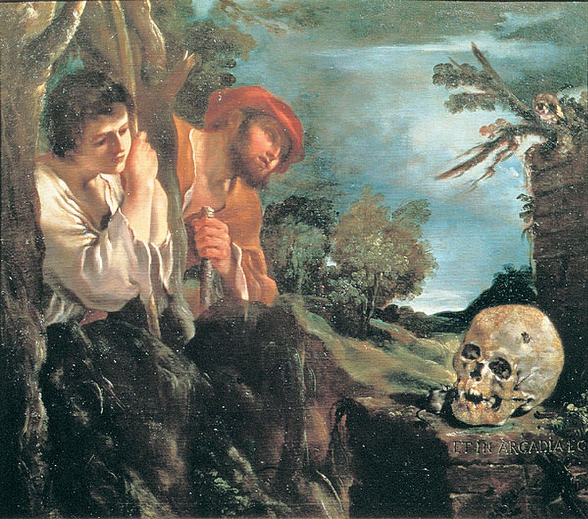
Campo · Metodología
El proyecto y el campo
No fotografiar México para confirmar lo que ya pienso: fases, preguntas de campo y la regla contra el cliché.
Guercino, Et in Arcadia ego, c. 1618‑1622. Galleria Nazionale d'Arte Antica, Roma. Dominio público, vía Wikimedia Commons.
11. METODOLOGÍA DEL PROYECTO DE DÍA DE MUERTOS
11.1 Principio
No fotografiar México para confirmar lo que ya pienso de la muerte.
El proyecto es una investigación, no una ilustración. Tiene tres fases y un principio de falsación: antes de ir, escribes qué esperas ver; en el campo, buscas activamente lo que contradiga esa expectativa.
11.2 Fase A: antes del viaje (arqueología de la propia mirada)
A1. "Lo que creo que significa la muerte", v1 (Módulo 1). Entre 1.000 y 1.500 palabras. Escrito antes de estudiar, sin corregir.
A2. Análisis de procedencias (Módulos 9 y 15). Relee el texto v1 y marca cada idea con un código:
Código
Procedencia
Pregunta de control
CR‑c
Cristianismo católico: la Biblia de tu madre, Doré, la liturgia, el arte de las iglesias
¿Recuerdo dónde lo aprendí?
CR‑p
Cristianismo protestante: tu Reina‑Valera 1960, la lectura personal de la Biblia
¿Esta idea depende de un libro que la RVR1960 no tiene (Sabiduría, Eclesiástico, Macabeos)?
AE
Arte europeo: Bruegel, Bosch, Doré, Valdés
¿Esta idea existiría sin estas imágenes?
FI
Filosofía
¿La leí o la oí resumida?
ES
Estética: gótico, macabro, lo "cautivador"
¿Es una idea, o un gusto?
MX
Cultura mexicana
¿De qué México? ¿Vivido, leído, visto en una película?
EP
Experiencia personal: muertes vividas, duelos
¿Qué muerte concreta está detrás?
LI
Literatura
¿Qué autor?
CP
Cultura popular: cine, series, Coco, Spectre, tatuajes, redes sociales
¿La tomaría en serio si supiera de dónde viene?
Después cuenta: ¿qué porcentaje de tus ideas tiene un origen identificable? ¿Cuáles no puedes rastrear? Esas últimas son las más interesantes.
A3. Hipótesis explícitas. Escribe 5 frases del tipo "espero encontrar que...". Por ejemplo: "espero encontrar alegría en los panteones". Son las hipótesis que el campo pondrá a prueba.
A4. Elección del lugar.
Mejor uno o dos lugares en profundidad que diez de paso.
Criterios:
acceso por medio de un contacto local: una familia, un antropólogo, una organización, un fotógrafo local;
que el lugar tenga bibliografía o fuentes;
la tensión turística, que debes conocer y declarar;
y tu capacidad real de volver otro año.
Idealmente, el proyecto dura al menos dos temporadas.
A5. Lecturas del lugar. Busca etnografía o historia local. Si no hay, anótalo: esa ausencia también es un dato.
A6. Preparación ética. Lee la §12 y prepara una carta breve de presentación en español (y, si procede, que alguien del lugar la traduzca a la lengua local). Debe decir quién eres, qué haces, qué harás con las imágenes, cómo contactarte y qué pasa si alguien pide que se borre una foto.
11.3 Fase B: en el campo
B1. Diario de campo (obligatorio, a mano o grabado). Tres columnas:
Observé (capa 1)
Me dijeron (atribuido: quién, cuándo)
Pensé / sentí (capa 6)
B2. Ritmo: primero sin cámara. El primer día, o las primeras horas en cada lugar, no fotografíes. Observa, saluda, pregunta, ayuda si te lo piden. La cámara aparece después y por invitación.
B3. Hoja de contactos diaria. Cada noche, revisa y marca:
✓ = la imagen responde a una pregunta;
✗ = cliché (§15);
? = no sé qué es todavía. Las "?" son las más valiosas.
B4. Registro de palabras. Anota literalmente cómo la gente nombra a sus muertos, a la muerte y al ritual. Es la base lingüística del ensayo.
B5. Falsación. Cada día escribe una cosa que contradijo tus hipótesis A3. Si no encontraste ninguna, pregúntate si estás mirando o confirmando.
B6. Devolución. Si fotografías a una familia, dale copias impresas. En México, la foto impresa en la ofrenda es parte de la práctica. Tu fotografía puede terminar en el altar de alguien. Piensa en eso antes de disparar.
11.4 Fase C: después del viaje
C1. Escribe "Lo que creo que significa la muerte", v3, sin mirar v1 ni v2. Luego compáralas.
C2. Edita la serie (§14.1).
C3. Escribe el ensayo (§14.2).
C4. Haz la última fotografía (§14.3).
C5. Consulta con los fotografiados. Si es posible, muestra la selección a las personas que aparecen antes de publicar.
PARTE XIV. TRABAJO DE CAMPO: PREGUNTAS Y EJERCICIOS
Cada eje tiene una pregunta principal, preguntas de observación, preguntas que puedes hacer a otros (con cuidado, y sólo si hay confianza) y un ejercicio fotográfico.
1. El lugar: ¿dónde ocurre el recuerdo?
Observa. ¿El recuerdo ocurre en la casa, en el panteón, en la iglesia, en la calle, en el lugar de la muerte (cruces en la carretera)? ¿Quién está en cada lugar? ¿Cómo cambia el espacio durante los días del ritual?
Pregunta a otros. "¿Dónde pone usted a sus muertos?" "¿Dónde siente que están?"
Ejercicio. "Mapa". Fotografía los caminos entre lugares: de la casa al panteón. El recuerdo como trayecto.
2. Los objetos: ¿cuándo un objeto deja de ser cosa y se convierte en memoria?
Observa. ¿Qué objetos son de la persona muerta? ¿Cuáles se compraron para la ocasión? ¿Hay objetos que sólo aparecen ese día? ¿Qué pasa con ellos después?
Pregunta a otros. "¿Esto era de él o de ella?" "¿Por qué pone esto?"
Ejercicio. "Memoria" (de tu lista). Fotografía un objeto que sólo tenga significado porque alguien lo recuerda. Condición: la persona debe contarte por qué, y tú no debes decirlo en el pie. ¿La foto lo transmite? Casi seguro que no. ¿Qué transmite entonces?
3. El cuerpo: ¿qué queda de una persona cuando su cuerpo ya no está?
Observa. ¿Hay restos (huesos en Pomuch, tumbas)? ¿Fotos? ¿Ropa? ¿Nombres? ¿Qué sustituye al cuerpo?
Pregunta. ¿Belting tiene razón en que la imagen nace como sustituto del cuerpo muerto? ¿Lo ves aquí?
Ejercicio. "Sustituto". Fotografía lo que ocupa el lugar del cuerpo, sea una foto, una silla o un plato. Sin personas.
4. Los vivos: ¿es el Día de Muertos una celebración de los muertos o una práctica de los vivos?
Pregunta a otros. "¿Quién le enseñó a hacer esto?" "¿Quién lo hará después?"
Ejercicio. "Manos". Fotografía el trabajo del ritual, no su resultado. Hacer la ofrenda y no la ofrenda terminada.
5. La comida: ¿qué significa compartir algo con alguien que ya no puede comerlo?
Observa. ¿Qué comida se pone? ¿Era la favorita del muerto? ¿Quién se la come después y cuándo? ¿Se dice algo sobre su sabor?
Pregunta a otros. "¿Y después qué pasa con la comida?"
Ejercicio. "Después". Fotografía la ofrenda el 3 de noviembre, o cuando se desmonte, si te lo permiten. Es el único ejercicio donde la lectura de vanitas es legítimamente tuya. Escríbelo así.
6. El tiempo: ¿el ritual intenta vencer el tiempo o aceptar su existencia?
Observa. Ciclo anual. ¿Hay muertos "nuevos" (del último año) tratados de otra manera? ¿Hasta cuándo se recuerda a alguien? ¿Hay muertos que ya nadie recuerda en las tumbas?
Ejercicio. "In ictu oculi" (de tu lista). Fotografía algo que cambie radicalmente en poco tiempo: una vela, una flor, una multitud que se dispersa, una tumba antes y después de limpiarla. Díptico obligatorio.
7. El lenguaje: ¿qué palabras utiliza la gente para hablar de quienes murieron?
Observa y escucha. ¿Se dice "mis muertos", "mis difuntos", "las ánimas", "los fieles difuntos", "los angelitos"? ¿Se habla a los muertos en 2.ª persona? ¿En qué lengua? ¿Se usan eufemismos? ¿Se bromea? ¿Quién bromea y quién no?
Registro. Transcripción literal en el diario (B4).
Ejercicio. "Pie de foto ajeno". Elige 3 fotos. El pie será una frase literal oída a alguien, con su permiso. Nunca inventada.
8. La comunidad: ¿qué cambia cuando la muerte deja de ser una experiencia exclusivamente privada?
Observa. ¿Hay rituales colectivos (misa, alumbrada, comparsas)? ¿Hay turistas? ¿Cómo interactúan con los locales? ¿Hay exclusión?
Pregunta. ¿Qué pasa con quien no tiene a nadie que lo recuerde? ¿Hay ofrendas para "las ánimas solas"?
Ejercicio. "Escala". Una foto de conjunto (Bruegel) y una íntima (Holbein) del mismo momento. ¿Qué dice cada una que la otra no puede decir?
9. El silencio: ¿qué comunica aquello que nadie dice?
Observa. ¿Qué muertes no se mencionan (suicidios, violencia, desaparecidos, quienes murieron "mal")? ¿Hay tumbas sin visita? ¿Hay momentos de silencio en el ritual?
No preguntes directamente sobre lo que no se dice. Obsérvalo y escríbelo. Sólo si alguien lo menciona, escucha.
Ejercicio. "Sin respuesta". Una fotografía que registre una ausencia que no puedes explicar. No la expliques en el pie.
PARTE XV. REGLA CONTRA EL CLICHÉ
15.1 Lista de vigilancia
No fotografiar automáticamente:
Elemento
Por qué es cliché
Cuándo podría estar justificado (ejemplos, no recetas)
Calaveras (de azúcar, pintadas)
Es la imagen del folleto turístico
Si la calavera lleva un nombre y sabes quién la regala a quién
Catrinas
Es un disfraz global, desde 1947 hasta Spectre
Si fotografías la cadena: quién se maquilla, para quién, por cuánto (Módulo 15)
Papel picado
Es decoración
Si alguien lo está cortando y te cuenta por qué ese diseño
Cempasúchil
Naranja fotogénico
Si el cultivo, el precio o el trabajo son el tema
Velas
Es la luz "emotiva"
Si la vela es de alguien concreto y la foto trata de ese alguien, no de la luz
Altares
Composición ya hecha por otros
Si fotografías el proceso, o el altar de una familia que te invitó, con su historia
Maquillaje
Espectáculo
Casi nunca, en este proyecto
15.2 Prueba de las tres razones (antes de disparar)
Antes de fotografiar cualquier elemento de la lista, contesta mentalmente:
¿Qué pregunta de mi proyecto responde esta imagen?
¿Existe ya esta foto mil veces? Si sí, ¿qué aporta la mía?
¿Quién paga el precio de esta imagen? ¿Alguien pierde intimidad o dignidad?
Si no puedes contestar la 1, no dispares. Si la 3 te incomoda, no dispares.
15.3 Principio
El significado precede a la estética. Si una foto es bella y no sabes de qué trata, guárdala en la carpeta "?" y no la incluyas en la serie hasta que sepas de qué trata, o hasta que decidas honestamente que trata de su belleza.
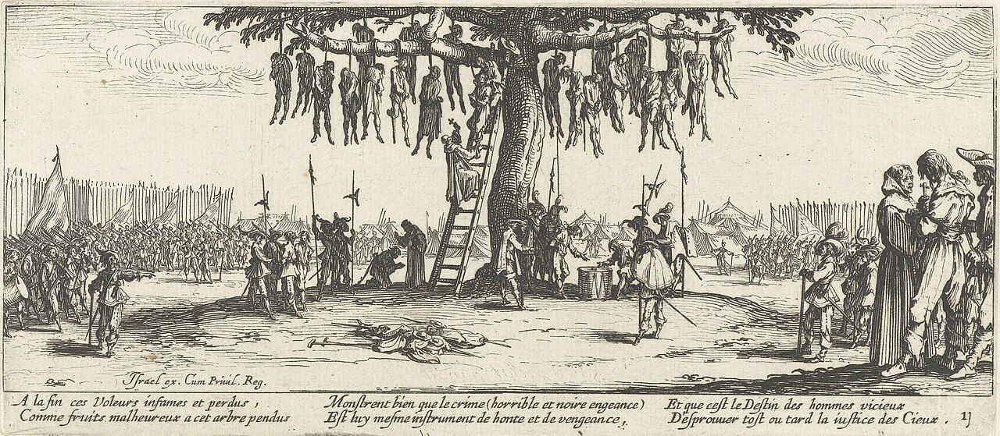
Campo · Criterios
Ética de la mirada
Diez reglas para fotografiar el duelo, los rituales y a quienes no conocemos.
Jacques Callot, «La pendaison», Les Misères et les Malheurs de la guerre, lámina 11, 1633. Dominio público, vía Wikimedia Commons.
12. CRITERIOS ÉTICOS (PARTE XVI)
12.1 Fundamento
La fotografía es una relación con tres partes: quien fotografía, quien es fotografiado y quien mira (Azoulay, The Civil Contract of Photography, 2008). Todas tienen derechos. Además, el código de ética de la NPPA (National Press Photographers Association, EE. UU.) dice en su punto 4:
"Treat all subjects with respect and dignity. Give special consideration to vulnerable subjects and compassion to victims of crime or tragedy. Intrude on private moments of grief only when the public has an overriding and justifiable need to see."
"Trata a todas las personas fotografiadas con respeto y dignidad. Presta especial consideración a los sujetos vulnerables y compasión a las víctimas de delitos o tragedias. Irrumpe en momentos privados de duelo sólo cuando el público tenga una necesidad imperiosa y justificable de ver".
Tu proyecto no es periodismo de actualidad: el público no tiene una necesidad imperiosa de ver el duelo de una familia de Michoacán. Por tanto, tu estándar debe ser más exigente que el periodístico, no menos.
12.2 Diez reglas
Consentimiento antes de la foto, no después. Tiene que ser verbal y explícito, y darse en la lengua de la persona. Si la persona no entiende qué harás con la imagen, no hay consentimiento.
El duelo ajeno no es material. Si alguien llora, baja la cámara. Si después, con calma, esa persona quiere ser fotografiada, es otra situación.
Niños: sólo con permiso de los padres o tutores y del propio niño. Evita imágenes que los identifiquen si no hay una razón fuerte.
Restos humanos (Pomuch, osarios): sólo si la familia lo propone o lo acepta expresamente. Nunca por "impacto".
Espacios sagrados: pregunta si se puede fotografiar dentro de iglesias y capillas. En algunas comunidades está prohibido, y hay que respetarlo sin negociar.
Comunidades indígenas: no las presentes como "lo auténtico" frente a "lo moderno" (exotización). Nombra a las personas y los lugares cuando ellas lo quieran, y no las conviertas en "tipos". Pregunta si hay autoridades comunitarias a quienes pedir permiso.
No escenifiques: no pidas que repitan un gesto ritual, no muevas objetos de una ofrenda, no pidas a nadie que "parezca triste".
Turismo: no seas parte del problema. Nada de flash, nada de tapar la vista, nada de pisar tumbas, nada de ocupar el espacio de las familias.
Derecho a retirar: cualquiera puede pedir que no se publique su imagen, también después. Recuerda la retirada de Tomoko y su madre en el baño en 1998.
Devolución: entrega copias impresas. Si publicas, avisa. Si ganas dinero, piensa qué corresponde devolver.
12.3 Preguntas éticas de autoexamen (después de cada jornada)
¿Hice alguna foto que no me gustaría que alguien hiciera en el funeral de mi madre?
¿Hubo un momento en que la cámara me protegió de sentir? ¿O de ayudar?
¿Fotografié a alguien porque era "pintoresco"?
¿A quién no fotografié y por qué?
¿Estoy convirtiendo una práctica viva en escenografía?
12.4 Distinción clave: documentar frente a estetizar
Documentar
Estetizar
La imagen está al servicio de lo que ocurre
Lo que ocurre está al servicio de la imagen
Contexto visible o explicado
Descontextualización para lograr un efecto
El fotografiado es un sujeto con nombre
El fotografiado es una forma, un color, un "tipo"
Admite la fealdad, el aburrimiento, lo banal
Selecciona lo espectacular
Una foto puede ser bella y documental a la vez. El problema no es la belleza, sino para quién y a costa de quién es bella.
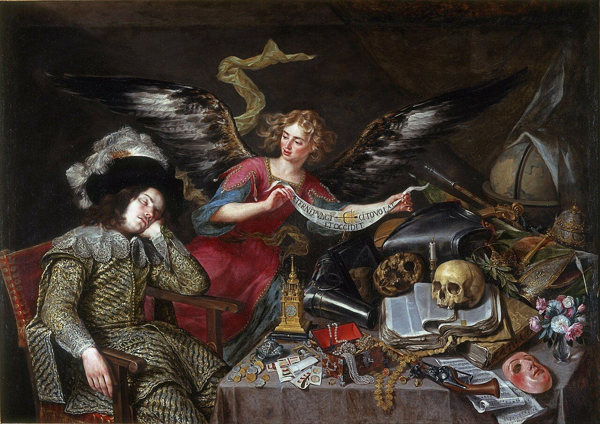
Campo · Práctica
Ejercicios y proyecto final
Veinte ejercicios, cómo criticar tus fotos, la serie, el ensayo y la última fotografía.
Antonio de Pereda, El sueño del caballero, c. 1650. Real Academia de Bellas Artes de San Fernando, Madrid. Dominio público, vía Wikimedia Commons.
Tus siete ejercicios originales están integrados. Añado otros, y cada uno indica su módulo y qué evaluar.
#
Ejercicio
Consigna
Módulo
Qué evaluar
1
Veo
36 tomas de un lugar cotidiano sin buscar "la" foto. Describe 5
1
¿Puedes describir sin interpretar?
2
Tres pies de foto
3 fotos × 3 pies distintos
2
¿Cómo cambia el texto la imagen?
3
Estados
Un objeto perecedero en 5 momentos
3
¿Superas lo obvio?
4
Oficios
Retratos de oficios con consentimiento; revisar en un año
4
¿El tiempo cambia la serie?
5
Umbral
Un umbral que alguien cruza a diario, sin personas
5
¿Se siente la presencia sin la figura?
6
Sin descifrar
Una foto con un elemento inexplicable y 3 interpretaciones
6
¿Sabes clasificar tus propias lecturas?
7
Refrán
Un refrán sobre la muerte, sin ilustración literal
7
¿Metáfora o ilustración?
8
Sólo línea
Blanco y negro de alto contraste frente a color
8
¿Qué hace el tono?
9
Vanitas contemporánea (tuyo)
Naturaleza muerta actual, sin calavera, reloj ni vela
9
¿Cada objeto tiene una razón escrita antes?
10
Lo que permanece (tuyo)
Un objeto que sobrevivirá a su dueño, con el dueño consultado
10
¿La foto contiene el conocimiento del dueño o sólo el tuyo?
11
Ilustrar sin ilustrar
Una foto en diálogo con un texto
11
¿Funciona sin el texto? ¿Debe hacerlo?
12
Yo lo vi
Un texto, sin foto, sobre una muerte presenciada
12
¿Cuándo es mejor no fotografiar?
13
Álbum
La lectura completa de una foto familiar de un muerto
13
¿Distingues entre lo que sabes y lo que ves?
14
Ausencia (tuyo)
Fotografiar a alguien sin mostrarlo
13
¿La ausencia es legible para quien no conoce a la persona?
15
Mi Mictlan
El lugar de tus muertos
14
¿Aplicas a ti el mismo respeto que a otros?
16
Genealogía de una imagen
Una Catrina sólo con su cadena
15
¿Resistes el cliché?
17
Sin calavera (tuyo)
La mortalidad sin símbolos
16
¿El significado es visible o sólo lo declara el pie?
18
Última vez (tuyo)
Algo que está desapareciendo
10 / campo
¿Sabes por qué desaparece? ¿Lo documentas o lo lamentas?
19
In ictu oculi (tuyo)
Un cambio radical en poco tiempo, en díptico
Campo
¿La velocidad del cambio es visible?
20
Memoria (tuyo)
Algo que sólo significa porque alguien lo recuerda
Campo
Casi imposible, a propósito. ¿Qué aprendiste del fracaso?
13.2 Cómo criticar tus propias fotografías
Es un protocolo en cinco pasos. Úsalo con cada ejercicio y con la edición de la serie.
Paso 1. Espera. No evalúes el mismo día. Mínimo 48 horas; para la serie final, semanas.
Paso 2. Lectura como si fuera ajena. Aplica a tu foto las capas 1‑5 del método (02), como si no la hubieras hecho. Esconde la capa 6 (lo que sentiste al disparar).
Paso 3. Las siete preguntas.
¿Qué se ve? Descripción literal.
¿Qué pregunta hace la foto? Una oración. Si no puedes formularla, la foto quizá sólo es bonita.
¿La pregunta está en la imagen o sólo en tu intención?Esta es la pregunta decisiva. Muestra la foto a alguien sin decir nada y pregúntale qué ve. Si nadie ve lo que querías, la intención no llegó a la imagen.
¿Qué parte es cliché? Pásala por la lista del §15.
¿Qué estás proyectando? ¿Tu tradición europea, tu estética, tu deseo?
¿Qué le hace la foto a quien aparece en ella? Aplica la ética del §12.
¿Qué haría falta para que fuera mejor? No técnicamente, sino conceptualmente: más cerca, más lejos, otro momento, otra persona, o no hacerla.
Paso 4. Calificación honesta. Marca con una letra:
P: la foto plantea una pregunta que está en la imagen;
I: la pregunta está sólo en mi intención o en el pie;
B: la foto es bella y todavía no sé de qué trata;
C: es un cliché;
E: tiene un problema ético y no se publica.
Paso 5. Registro. Guarda las evaluaciones. Al final del curso, la evolución de tus calificaciones es parte del ensayo (pregunta 8: "¿Qué cambió en mi fotografía?").
14. PROYECTO FINAL
14.1 Serie final (Parte XVII): 12‑20 fotografías
Proceso de edición:
Preselección amplia: todas las marcadas P y B, y las "?" del campo.
Agrupación por preguntas, no por temas. No hagas "comida", "panteón", "altar". Pregúntate: ¿qué preguntas plantean las fotos? Muerte, ausencia, memoria, ritual, comunidad, religión, cuerpo, tiempo, belleza, miedo, continuidad y olvido son preguntas posibles, no casillas.
Descubrimiento. Si las fotos hablan de algo distinto de lo que planeaste (el trabajo, el dinero, la infancia, la migración, el cansancio), síguelo. Anota en el diario cuándo te diste cuenta.
Secuencia.
¿Hay un recorrido (como la Caridad de Mañara: muerte → caridad → salvación)?
¿Hay un ciclo (como Horacio: la primavera que vuelve)?
¿Hay un mosaico (como Bruegel)?
Prueba al menos dos secuencias distintas.
Diversidad interna. Comprueba que no todas digan lo mismo: tiene que haber escalas, afectos y personas gramaticales distintas.
Revisión ética final de cada imagen (§12).
Pies de foto: decide si habrá texto y de qué tipo (documental, voces, citas).
Consulta: muestra la selección a los fotografiados, si es posible.
Título: provisional hasta el final.
14.2 Ensayo final (Parte XVIII): 2.000‑3.000 palabras
Título provisional:In ictu oculi: mirar a los muertos para aprender a mirar a los vivos.
Mira también el título. ¿Lo mantienes? Recuerda que en Pablo el ictus oculi es el instante de la transformación, no de la muerte. Quizá eso es lo que el título dice sin que lo supieras.
Estructura sugerida. Es un andamiaje: puedes romperlo.
Sección
Preguntas (Parte XVIII)
Material
Extensión aprox.
I. Antes
1. ¿Qué pensaba sobre la muerte antes? · 4. ¿Qué ideas mías eran heredadas?
Texto v1, análisis de procedencias (A2)
400
II. La tradición europea
2. ¿Qué aprendí de la tradición europea?
Tus fichas de Bruegel, Bosch, Valdés, Goya
500
III. México
3. ¿Qué descubrí en México? · 6. ¿Qué no comprendí?
Diario de campo, registro de palabras, falsaciones (B5)
600
IV. El cambio
5. ¿Qué cambió? · 8. ¿Qué cambió en mi fotografía?
v1 frente a v2 frente a v3; la evolución de las calificaciones P/I/B/C/E
400
V. Conceptos
9. ¿Qué significa ahora memento mori? · 10. ¿Qué significa recordar? · 11. ¿Qué significa olvidar?
El mapa conceptual revisado
500
VI. Fotografía y mortalidad
12. ¿Qué relación existe entre fotografía y mortalidad?
Barthes, Sontag (¿es verdad?), tu serie
400
VII. Lo que sigue siendo misterio
7. ¿Qué sigue siendo misterio?
La capa 5 ("no sé") acumulada
200
Criterios de calidad del ensayo:
Cada afirmación sobre México está localizada: quién, dónde, cuándo, según quién.
Cada afirmación histórica lleva su grado (H / I / Hi / C), aunque en el texto final lo expreses con palabras y no con siglas.
Hay al menos un momento en que escribes "no lo sé" y lo sostienes.
No hay frases motivacionales. Si aparece "vive cada día", "aprovecha el tiempo" o algo parecido, examínala o bórrala.
La conclusión puede ser una pregunta.
14.3 La última fotografía (Parte XIX)
Consigna: una sola fotografía cotidiana. Prohibido: calaveras, cementerios, altares, velas, cempasúchil, Catrinas y cualquier símbolo explícito de muerte. Debajo, escribe:
"Esta fotografía es sobre la muerte porque..."
Cómo la evaluaré. Es una rúbrica para detectar proyección. Contestaré cada punto con "sí", "no" o "en parte", con argumentos:
Prueba del orden. ¿La explicación parece escrita antes de la foto (la foto responde a una pregunta) o después (la explicación rescata una foto bonita)? Indicio: si la frase podría pegarse debajo de casi cualquier foto ("porque todo cambia", "porque este momento no volverá"), es posterior y genérica.
Prueba de especificidad. ¿La explicación depende de algo que está en esta imagen y no en otra? Si se cambia la foto y la frase sigue valiendo, no funciona.
Prueba del espectador. Sin el texto, ¿alguien podría llegar a una lectura cercana? No hace falta que sí: algunas fotos necesitan el texto legítimamente. Pero entonces la pregunta es si texto + imagen hacen algo que ninguno hace por separado (como la inscripción de Valdés Leal).
Prueba de la persona gramatical. ¿La foto trata de tu muerte, de la de alguien, o de la muerte en general? ¿La explicación es coherente con eso?
Prueba del cliché conceptual. ¿La explicación es un tópico ("toda foto es memento mori")? Si es la frase de Sontag, demuestra que es verdadera para esta foto en particular.
Prueba de la sinceridad. ¿Hay algo en la explicación que te cueste decir? Las explicaciones que no cuestan nada suelen ser decorativas.
Resultado posible: "funciona", "funciona en parte, y esto es lo que falta" o "es una foto bonita con una explicación posterior". Los tres son resultados valiosos. El tercero no es un fracaso, sino un hallazgo sobre tu mirada.
PARTE XX. MÉTODO SOCRÁTICO (reglas de conversación para todo el curso)
Cuando impartamos los módulos, me comprometo a:
Preguntar antes de explicar. Cada módulo empieza con tus respuestas a la pregunta central, antes de leer mi exposición.
Decir el grado de certeza de cada afirmación: hecho, evidencia, interpretación, hipótesis, especulación o no sabemos.
Señalar la proyección cuando la vea, en tus textos y en los míos: "aquí estás proyectando una idea contemporánea".
No cerrar lo que está abierto. Si los especialistas no están de acuerdo, te lo diré. Si nadie lo sabe, te lo diré.
No dar moralejas. Ninguna frase motivacional. Si la tesis de un módulo parece una moraleja, la someteremos a crítica.
Llevarte la contraria cuando haga falta. Si una lectura tuya es débil, te lo diré con argumentos, no con autoridad.
Corregirme. Si un dato mío resulta falso, lo diré explícitamente.
Tú te comprometes a:
Escribir antes de leer mis respuestas.
Mirar el tiempo mínimo antes de interpretar.
Traer tus fotos con su calificación P/I/B/C/E.
Decir "no sé" sin vergüenza.
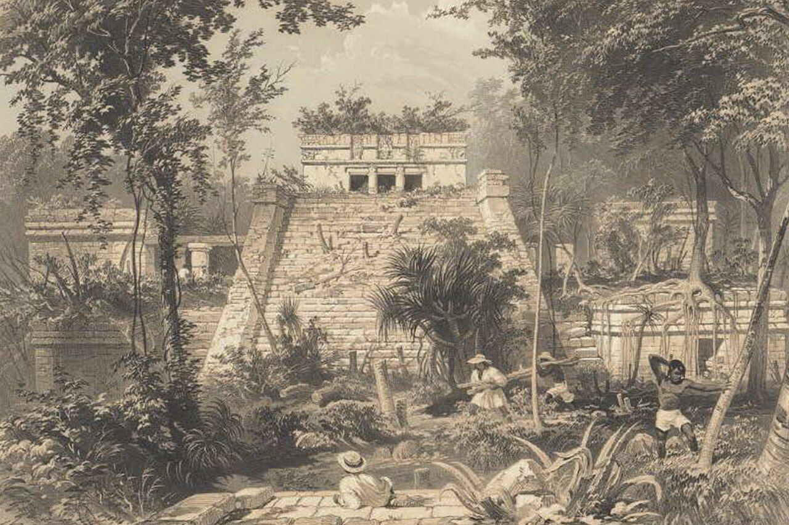
Campo · 27 oct – 3 nov
Yucatán y Campeche 2026
Pomuch, los pueblos de Valladolid y Mérida: contexto, ética, itinerario y preguntas.
Frederick Catherwood, Templo principal de Tulum, litografía, Views of Ancient Monuments, 1844. La mirada de un viajero extranjero: también es tema del curso. Dominio público, vía Wikimedia Commons.
Pomuch · pueblos cercanos a Valladolid · Mérida
Estatus de este viaje: es una temporada exploratoria. Vas a aprender dónde estás, no a producir la serie final. La serie se decide después, y quizá en una segunda temporada en 2027.
Las marcas epistémicas son las de siempre: H hecho, E evidencia, I interpretación, Hi hipótesis, Es especulación, NS no sabemos, C proyección contemporánea. Aquí se añade PRENSA: el dato sólo aparece en prensa, no en fuentes académicas.
1. Qué cambia en el curso con esta elección
El centro mesoamericano del curso se desplaza de los nahuas a los mayas peninsulares. Los Módulos 14 y 15 estaban pensados desde el centro de México (Sahagún, Posada, la Catrina). En Yucatán y Campeche esa imagen nacional es casi un cuerpo extraño, y eso es una ventaja: verás cómo convive la versión nacional (Catrinas, desfile) con una práctica regional que tiene otro nombre (Janal Pixán), otra lengua y otra historia.
Robert Hertz pasa al primer plano. Su teoría de la doble sepultura (1907) es la herramienta teórica más pertinente para Pomuch: el muerto no termina de morir con el primer entierro; el tratamiento posterior de los huesos cierra o renueva la relación.
La vanitas y el memento mori casi desaparecen como marcos. En Pomuch la tentación de leer "calaveras = memento mori" será enorme. Es exactamente la proyección que el curso quiere que detectes. Un hueso limpiado por una hija no es una calavera de bodegón.
La pregunta ética se agrava. Pomuch es hoy un lugar tensionado por el turismo y la fotografía, y tú llegas como fotógrafo. Ver la §5.
2. Contexto: las capas de la península
Capa
Lo esencial
Fuente para empezar
Maya prehispánica
Según Landa, los muertos se enterraban dentro de las casas o detrás de ellas, con maíz molido (koyem) y "piedras de las que tienen por moneda" en la boca. Los señores se cremaban. Los nobles guardaban estatuas o cabezas modeladas de sus padres, con ofrendas de comida (Landa, Relación, §XXXIII) Hlo que Landa dice
Landa (ed. Rivera Dorado, Alianza, 2017); Ciudad Ruiz, Ruz e Iglesias (eds.) 2003
Conquista y evangelización
Landa es a la vez el principal etnógrafo y el principal destructor. El auto de fe de Maní (12 de julio de 1562) quemó códices e imágenes. Todo lo que sabemos pasa por la mano que quemó
Landa; Farriss 1984/2012
Colonia
Las comunidades mayas se reorganizan en torno a los santos, las cofradías y la iglesia. La "empresa colectiva de supervivencia" (Farriss)
Farriss; Bracamonte y Sosa 2001
Guerra de Castas
El 26 de julio de 1847 se fusila en Valladolid a Manuel Antonio Ay, cacique de Chichimilá. El 30 de julio, Cecilio Chi ataca Tepich. La guerra dura décadas y deja un oriente de Yucatán marcado por la violencia y la memoriaH. En enero de 1847 hubo otro asalto a Valladolid, pero fue un levantamiento federalista distinto
Reed 1964/2001; Rugeley 1996
Henequén y siglo XX
El trabajo en las haciendas; después, la antropología de Redfield y Villa Rojas en Chan Kom (1934), cerca de Valladolid
Redfield y Villa Rojas 1934
Turismo
Chichén Itzá, los cenotes, Cancún, la "cultura maya" como producto (Castañeda 1996). Pomuch recibió unos 8.000 visitantes en 2022 (Apipilhuasco 2025)
Castañeda 1996; Apipilhuasco 2025
Religión hoy (INEGI 2020)
Yucatán: 74,3% católicos, 16,0% protestantes o evangélicos, 8,6% sin religión. Campeche: 60,1% católicos, 24,3% protestantes o evangélicos, 14,2% sin religión H
INEGI, Panorama de las religiones en México 2020
Lengua
En Yucatán, el 23,7% de las personas mayores de 3 años habla una lengua indígena, casi siempre el maya (525.092 personas en 2020), y la cifra va en descenso H
INEGI 2020
Consecuencia de la fila de religión: en Campeche, casi una de cada cuatro personas es protestante o evangélica. No tengo una fuente que diga cómo participan esas familias en el Janal Pixán, y es plausible que muchas no pongan altar NS. Es una pregunta de campo, no un supuesto.
3. Los tres lugares
3.1 Pomuch (municipio de Hecelchakán, Campeche)
Lo documentado:
La prácticaH (Apipilhuasco 2024 y 2025; Cervantes 2012; Congreso de Campeche 2020):
los restos se exhuman al menos tres años después del entierro;
los huesos limpios se guardan en cajas de madera en nichos u osarios del cementerio;
cada año, un familiar designado limpia los huesos y cambia el paño, blanco y bordado (con el nombre o con motivos, según la familia);
no se hace el año en que muere alguien de la familiaLa Jornada Maya.
El nombre. En español se llama "Limpieza de los Santos Restos", y a veces "cambio de ropa". En maya se escribe Choo Ba'ak o Cho'o Ba'ak.
Nota lingüística: según el diccionario maya de la UADY, cho' = "asear, limpiar" y baak = "hueso". La glosa literal es "limpieza de huesos".
La glosa "muda de ropa" o "vestida de huesos", que repite la prensa, no es una traducción del maya. Viene del nombre alternativo en español. Es un buen ejemplo de cómo una traducción popular se fija por repetición.
Ojo con las grafías: bak' es "carne" y baak' es "asir". La ortografía importa.
El calendario. No hay una fecha fija de inicio H.
El libro del Congreso habla de "la última semana de octubre" y, en otro capítulo, de "mediados de octubre".
En 2025 la limpieza empezó el 24 de octubre .
Cervantes (2012) sitúa el Janal Pixán de Pomuch entre el 26 de octubre y el 2 de noviembre.
Tus fechas (del 27 de octubre en adelante) caen dentro del periodo, pero algunas familias ya habrán limpiado. Confírmalo localmente.
La patrimonialización. El Acuerdo del Ejecutivo del Estado de Campeche que declara "La Limpieza de los Santos Restos, Ritual Funerario de la Comunidad Maya de Pomuch" patrimonio cultural del estado se publicó el 28 de agosto de 2017. La ceremonia pública fue el 30 de octubre de 2017 H.
El mismo decreto menciona la práctica en Hoctún, Nohcacab (Santa Elena), Xocén (Chichimilá) y Tiholop (Yucatán), y en Pocboc y Nunkiní (Campeche).
Pomuch no es un caso único: es el caso visible.
El decreto justifica la protección por el "escepticismo de las nuevas generaciones".
La comparación decisiva. Redfield y Villa Rojas documentaron en Chan Kom (1934), cerca de Valladolid, una exhumación de huesos a los 2 o 3 años, en la semana entre el Janal Pixán y la octava. Los huesos se limpiaban sobre un paño nuevo, se ponían en una caja, se llevaban a casa y el maestro cantor rezaba sobre ellos H. Es la misma familia de prácticas, noventa años antes y en el otro extremo de tu itinerario.
Lo discutido o en conflicto (Apipilhuasco 2025; prensa 2023‑2025):
"Tradición milenaria": la prensa y la promoción turística la llaman así, pero la continuidad directa con prácticas prehispánicas no está demostradaNS / Hi.
Landa describe otros tratamientos: entierro en la casa, cremación, estatuas con cenizas.
La exhumación a los tres años está hoy vinculada a la Ley de Salud Pública del Estado de Campeche, que permite exhumar los restos a los tres años del entierro La Jornada Maya.
La práctica puede tener raíces prehispánicas, coloniales y modernas a la vez. Esta es exactamente la pregunta de Malvido frente a la continuidad, trasladada a la península.
Turismo y cobro.
Hay guías jóvenes que llevan a turistas con las familias, y vecinos que se quejan de la pérdida de privacidad y de la fotografía constante (Apipilhuasco 2025).
Hubo robos de restos, entre ellos un cráneo .
En 2025 el Ayuntamiento cobró 30 pesos por entrar al cementerio. El comité organizador se desmarcó: "es un acto privado y familiar, no un espectáculo turístico" .
Hay festivales rivales ("Pomuch para el Mundo" y otro) con tensiones partidistas (Apipilhuasco 2025).
Se han visto drones y creadores de contenido 2025.
No hay reglas escritas oficiales para visitantes, que yo haya encontrado NS. Lo que sigue en la §5 es buena práctica, no normativa.
Pregunta que Pomuch te hace a ti: ¿qué diferencia hay entre tu cámara y la de un creador de contenido? Si la respuesta es "mis intenciones", recuerda la regla del método: ¿está en la imagen o sólo en tu intención?
3.2 Pueblos cercanos a Valladolid
Chan Kom (Redfield y Villa Rojas 1934) y Xocén (Terán y Rasmussen, Xocén: el pueblo en el centro del mundo, UADY, 2005) tienen etnografía. Son los únicos de la zona para los que encontré estudios.
Xocén aparece además en el decreto de Pomuch por su práctica de limpieza de huesos.
De otros pueblos (Tixcacalcupul, Uayma, Kaua, Ebtún, Popolá, Yalcobá) no encontré estudios específicos NS.
Recomendación: elige un solo pueblo y llega por medio de un contacto. Más adelante hay algunas vías.
Chan Kom es el lugar de una etnografía famosa y criticada. El "continuo folk‑urbano" de Redfield se ha discutido mucho, y Villa Rojas, el coautor mexicano, fue maestro allí. Si vas, llevas a cuestas noventa años de miradas externas sobre ese pueblo. Tómalo como tema, no como obstáculo.
Valladolid es también memoria de la Guerra de Castas, y hoy base del turismo hacia Chichén Itzá, Ek Balam y los cenotes.
Tu proyecto se cruza con el turismo que describe Castañeda.
Los cenotes como "entrada a Xibalbá" son un tópico turístico con una base arqueológica muy discutida y una base etnográfica actual incierta Es. No lo uses como marco.
3.3 Mérida
Festival de las Ánimas 2026: del 24 de octubre al 2 de noviembreHmerida.gob.mx.
Paseo de las Ánimas 2026: viernes 30 de octubre, 18:00, del Cementerio General al Parque de San JuanH.
OrigenDiario de Yucatán, 2023:
2008: "Corredor de las Ánimas", organizado por los vecinos del barrio de la Ermita de Santa Isabel y el Ayuntamiento;
2009: "Marcha";
2010: pasa a llamarse "Paseo";
desde 2015 se puede participar con traje regional y cara pintada.
Unos 90.000 asistentes en 2025 .
Es un caso de invención de la tradición paralelo al desfile de la Ciudad de México, anterior a él y de origen vecinal, no cinematográfico. Una diferencia importante, que no conviene aplanar.
Cementerio General: se abrió en 1821, en terrenos de la hacienda Xcoholté .
Cómo usar Mérida: como contrapunto urbano. El maquillaje, la multitud y la Catrina "exportada" conviven aquí con el Janal Pixán doméstico. También para ver la tensión entre Día de Muertos, Janal Pixán y Halloween (Fernández Repetto y Medina Várguez 2015).
4. Janal Pixán: lo que dicen las fuentes
Término.Janal (en grafía antigua, hanal) significa "comida, comer". Pixan significa "alma". Juntos: "comida de las almas" Hdiccionario UADY.
Calendario (esquema del Gobierno de Yucatán; varía según la localidad):
Día
Nombre
Qué es
31 oct
u janal paalal (o u hanal palal)
Los niños muertos
1 nov
u janal nukuch máako'ob (grafía normativa no verificada); en fuentes antiguas, u hanal nucuch uinicoob
Los adultos
2 nov
u janal pixano'ob / misa pixan
Misa, a veces en el cementerio
Una semana después
bix / octava
Cierre. Ya no estarás. Anótalo: te vas antes de que el ciclo termine
En Chan Kom (1934) se registran noh kin u hanal mehen pixanob (niños) y u hanal nucuch pixanob (adultos) H. Registra en el campo qué palabras usa la gente de verdad.
Costumbres, con su grado de evidencia:
Mucbipollo (muuk, "enterrar", + pollo): masa de maíz con relleno de pollo y cerdo, cocida en píib, un horno bajo tierra H. Nota: la comida de los muertos se entierra para cocerse.
Jícaras de chocolate y atole; número par de ofrendas; mantel nuevo (zuhuy, "virgen"); sólo gallinas, no gallos, porque "los gallos cantarían y espantarían a las almas" (Chan Kom, 1934) [H para Chan Kom; verifica si sigue vigente donde vayas].
Velas: filas de velas en puertas y muros durante el bixH. En Chan Kom, velas negras el día de los adultos H.
Ánimas solas: en Chan Kom se ponía en la puerta una jícara de chocolate, un pan y una vela "para las almas que no tengan parientes vivos" H1934. Una de las ideas más poderosas que vas a encontrar: una ofrenda para los muertos de nadie.
Hilo negro o rojo en la muñeca de los niños para protegerlos de los pixanes: sólo aparece en prensa . No tiene respaldo académico que yo haya encontrado.
Léxico maya útil (diccionario UADY):
kíimil: morir, muerte;
kimen: muerto, difunto;
pixan: alma;
baak: hueso;
cho': limpiar;
janal: comida;
ts'o'ok: terminar.
Un aviso: no uses estas palabras para impresionar a nadie. Úsalas para entender lo que oyes y para preguntar humildemente.
5. Ética específica para esta temporada
Se suma a los criterios generales de 05, §12.
En Pomuch llegas a un conflicto en curso. Hay familias que aceptan la documentación y familias que la rechazan. Hay un cobro disputado, robos de restos, drones, y guías que llevan turistas a las casas y a los nichos. Tu cámara forma parte de ese conflicto aunque no quieras.
Los restos humanos no se fotografían sin permiso expreso de la familia que los limpia. Pide el permiso después de conversar, no como primera frase. Si dudan, la respuesta es no.
Nunca fotografíes huesos solos, fuera de su relación (como objeto macabro o "calavera"). Si alguna vez lo haces, que sea con la familia presente y mostrando el cuidado, el paño, las manos: lo que la práctica es.
No uses dron. No uses flash. No toques cajas, paños ni restos.
No pagues para fotografiar. Si una familia te invita a comer o te regala algo, recíprocalo con una copia impresa, que es el regalo más adecuado. Ningún pago debe condicionar una imagen.
No dependas de los "guías" del cementerio si su oficio consiste en llevar extraños a los nichos de otras familias. Eso reproduce el problema.
Los niños el 31 de octubre (día de los niños muertos): es una fecha de duelo infantil. Máxima discreción.
Las casas y los altares domésticos son espacios privados. Sólo entras con invitación. La foto del altar de una familia no es tuya, aunque te dejen hacerla: pregunta qué uso pueden aceptar.
Lengua: en muchos pueblos cercanos a Valladolid la gente mayor habla maya. Si no lo hablas, no supongas que alguien consintió por asentir. Busca un mediador.
Publicación: no publiques nada de Pomuch en redes sociales durante el viaje. Espera, edita y consulta.
6. Plan de trabajo: del 28 de septiembre al 3 de noviembre
6.1 Preparación (4 semanas)
Semana
Lectura
Escritura
Fotografía
Gestión
28 sep‑4 oct
Módulo 1 (Bruegel); método de lectura (02); mapa conceptual (sólo §2.0, 2.1, 2.2, 2.8 y 2.15)
"Lo que creo que significa la muerte", v1. Esta semana, antes de leer lo demás
Ejercicio "Veo"
Empieza a buscar contactos (6.3)
5‑11 oct
Módulo 13: Barthes (2.ª parte), Sontag ("En la caverna de Platón") y Linkman o Ruby (capítulos iniciales). Ética (05, §12, y la §5 de este documento)
Análisis de procedencias de v1 (código de colores)
Ejercicio "Ausencia"
Alojamiento en Hecelchakán o Campeche y en Valladolid
12‑18 oct
Península: Le Guen 2008 ("Ubèel pixan"); Landa §XXXIII; Redfield y Villa Rojas, la parte de Chan Kom sobre los muertos; Hertz 1907 (la parte sobre la doble sepultura)
Hipótesis A3 (5 frases "espero encontrar...")
Ejercicio "Lo que permanece"
Confirma las fechas de limpieza en Pomuch con alguien del lugar
19‑25 oct
Pomuch: Apipilhuasco 2025 y 2024; Cervantes 2012 (tesis, PDF libre). Contexto nacional: Lomnitz (introducción y un capítulo), Malvido 2006
v2 de "Lo que creo..."
Ejercicio "Sin calavera"
Carta de presentación impresa; copias impresas de algunas fotos tuyas para regalar
26 oct
Relee las hipótesis A3 y la §5
—
Revisa el equipo
Prepara el diario de campo con sus 3 columnas
6.2 Itinerario propuesto (27 de octubre‑3 de noviembre)
Principio: pocos lugares y mucho tiempo en cada uno. Evita la tentación de "cubrir" la península.
Fecha
Lugar
Qué hacer
Por qué
Mar 27
Llegada a Mérida
Cementerio General sin cámara, o con cámara guardada. Observa: ¿quién limpia qué? Escribe
La primera mirada, sin disparar
Mié 28
Traslado a Pomuch (unos 110‑120 km, 1:30‑1:45 h)
Llegada, presentaciones, conversación. Pocas o ninguna foto
La confianza antes que la imagen
Jue 29
Pomuch
Observación de la limpieza con quien te haya invitado
El núcleo de la temporada
Vie 30
Pomuch por la mañana → Mérida por la tarde
Paseo de las Ánimas, 18:00 (Cementerio General → San Juan). Opcional
El contrapunto: el espectáculo urbano, una tradición inventada en 2008
Sáb 31
Traslado a Valladolid y al pueblo elegido
U janal paalal, los niños. Máxima discreción
Día doméstico
Dom 1
Pueblo
U janal nukuch máako'ob, los adultos
Día doméstico
Lun 2
Pueblo o Valladolid
Misa pixan; el cementerio
El día público y religioso
Mar 3
Regreso
Escribe v3 en el avión, sin mirar v1 ni v2
El cierre
Alternativa más profunda: renunciar a Mérida y quedarse más días en Pomuch y en el pueblo. Te recomiendo esta si consigues un buen contacto en alguno de los dos lugares. Mérida como espectáculo se entiende con una tarde; Pomuch y un pueblo, no se entienden ni con una semana.
Clima: la temporada de huracanes del Atlántico dura hasta el 30 de noviembre, y ha habido huracanes de octubre en la península (Roxanne en 1995, Wilma en 2005). Consulta el Servicio Meteorológico Nacional los días previos y ten un plan B.
6.3 Cómo buscar contactos
Son vías, no garantías. Contacta con tiempo y explica honestamente tu proyecto.
Académicas: el CEPHCIS‑UNAM de Mérida (donde se edita la revista Península); la Facultad de Ciencias Antropológicas de la UADY. Las autoras y autores citados aquí, como Apipilhuasco (CEPHCIS‑UNAM), pueden orientarte sobre cómo acercarte a Pomuch sin sumarte al problema. Escríbeles con respeto y con poco tiempo pedido.
Institucionales: el INAH de Campeche organizó en 2022 la exposición "Los santos restos. Ritualidad y expresión en Pomuch" en el Museo de Arquitectura Maya (Baluarte de la Soledad, Campeche). Casas de la cultura municipales.
Comunitarias: el comité organizador local de Pomuch, que en 2025 se pronunció contra el cobro y a favor del carácter privado del ritual. Su posición es tu brújula ética.
Fotográficas: busca fotógrafos yucatecos o campechanos que trabajen el tema desde dentro. Son colegas, no guías.
7. Preguntas de campo específicas
Complementan los nueve ejes de 05, Parte XIV.
En Pomuch:
¿Quién limpia los huesos en cada familia? ¿Por qué esa persona? ¿Hay un criterio de género, edad o parentesco?
¿Qué palabras usan para hablar de los huesos: "restos", "santos restos", el nombre de la persona, baak? ¿Hablan a los muertos o de ellos? ¿En qué persona gramatical?
¿Qué dicen de los turistas y fotógrafos? Escúchalo sin defenderte.
¿Hay familias que ya no lo hacen? ¿Por qué? ¿Religión evangélica, migración, cremación, el "escepticismo" del decreto?
¿El paño bordado quién lo hace? ¿Qué dice? ¿Qué pasa con el paño viejo?
¿Qué significa tocar los huesos de tu madre? No lo preguntes así. Observa las manos.
En el pueblo cercano a Valladolid:
7. ¿Se hace el altar en casa, en el cementerio o en ambos? ¿Quién cocina el mucbipollo? ¿Dónde está el píib?
8. ¿Se pone algo para las ánimas solas? ¿Dónde?
9. ¿Hay familias evangélicas? ¿Qué hacen esos días?
10. ¿Qué dicen los mayores y qué dicen los jóvenes?
11. ¿Alguien menciona la Guerra de Castas, la migración a Cancún o a EE. UU., o muertos por violencia? ¿O nadie lo menciona? (El eje del silencio.)
En Mérida:
12. ¿Quién se maquilla en el Paseo? ¿Para qué? ¿Quién mira? ¿Quién vende?
13. ¿Hay algún momento del Paseo que se parezca a un Janal Pixán doméstico? ¿O son dos cosas completamente distintas?
8. Hipótesis para poner a prueba (refutables)
En Pomuch, la limpieza de huesos se vive como cuidado de una persona concreta, más que como una "reflexión sobre la muerte". Por tanto, no es un memento mori.
La categoría de Hertz (la doble sepultura) describe mejor Pomuch que cualquier categoría de la historia del arte europeo.
La presencia turística y fotográfica ya transformó la práctica: los horarios, los espacios y lo que se muestra.
En Mérida, el Paseo de las Ánimas y el Janal Pixán doméstico casi no se tocan.
Tu idea de la muerte, en su mayor parte europea, católica y estética, no encontrará un equivalente en lo que veas. Encontrará otra cosa, que todavía no sabes nombrar.
Cada noche, anota cuál de estas hipótesis se debilitó.
9. Bibliografía de la península (verificada)
Hay acceso libre en línea para las marcadas con acceso libre.
Pomuch
acceso libreApipilhuasco Miranda, María Fernanda (2025). "Entre festivales y huesos. La politización de los rituales mortuorios en México". Península 20(2): 185‑212. DOI 10.22201/cephcis.25942743e.2025.20.2.90725. ✔Lectura obligatoria antes de ir.
Apipilhuasco Miranda, M. F. (2024). "El hacer de los muertos desde sus huesos. La producción de los difuntos en Pomuch, Campeche". Temas Antropológicos (UADY) 45(2): 119‑143. ✔
acceso libreCervantes Martínez, Jorge (2012). Hanal Pixan: comida para las almas. El ritual funerario en Pomuch, Campeche. Tesis de maestría en Antropología Social, ENAH (repositorio.inah.gob.mx/o‑1837). ✔
Tiesler Blos, Vera (2007). "Las tradiciones funerarias en el norte de Campeche. Un ensayo etnoarqueológico", en C. Serrano Sánchez y A. Terrazas Mata (eds.), Tafonomía, medio ambiente y cultura, México: UNAM‑IIA, pp. 161‑181. ✔
García Barrios, Ana (2020). "Donde el muerto sigue vivo: la tradición del cementerio maya de Pomuch, Yucatán [sic: es Campeche]", en Arte y globalización en el mundo hispánico, Universidad de Granada. ✔
acceso libreCongreso del Estado de Campeche (2020). Pomuch, en donde se acaricia la muerte, coord. Marilyn Domínguez Turriza. Publicación institucional, no académica, que incluye el texto del decreto de 2017. ✔
Janal Pixán y muerte maya peninsular
acceso libreLe Guen, Olivier (2008). "Ubèel pixan: el camino de las almas. Ancestros familiares y colectivos entre los mayas yucatecos". Península 3(1): 83‑120. ✔Lectura obligatoria.
acceso libreFernández Repetto, Francisco y Alma Teresa Medina Várguez (2015). "Los Días de Muertos: entrecruce de caminos". Antrópica (UADY) 1(1). Trata del Janal Pixán, el Día de Muertos y Halloween en Mérida. ✔
Quintal Avilés, Ella F., et al. (2014). "Los que son como nosotros: santos y pixanes en la cosmovisión de los mayas peninsulares", en C. Good y M. Alonso (coords.), Creando mundos, entrelazando realidades, vol. V, México: INAH. ✔
Ruz, Mario Humberto (2007). "La comunidad atemporal: de vivos y difuntos en el mundo maya", en J. A. Flores Martos y L. Abad González (coords.), Etnografías de la muerte y las culturas en América Latina. ✔
Ciudad Ruiz, Andrés, Mario Humberto Ruz Sosa y M.ª Josefa Iglesias Ponce de León (eds.) (2003). Antropología de la eternidad: la muerte en la cultura maya. Madrid: SEEM / México: UNAM, ISBN 84‑923545‑3‑4. ✔
acceso libreVázquez de Ágredos Pascual, M.ª Luisa (2009). "El color y lo funerario entre los mayas de ayer y hoy". Península 4(1): 61‑73. ✔
acceso libreSolís Sosa, Iván (2022). "El k'ojon ché', k'ojobché'. Usos, creencias y preceptos en torno al 'guardián' del cementerio de un pueblo yucateco". Antrópica 8(15). ✔
Etnografía clásica
Redfield, Robert y Alfonso Villa Rojas (1934). Chan Kom: A Maya Village. Washington: Carnegie Institution, Pub. 448. No hay traducción española.✔
Redfield, Robert (1941). The Folk Culture of Yucatan. University of Chicago Press. En español: Yucatán: una cultura de transición, México: FCE, 1944. ✔
Villa Rojas, Alfonso (1945). The Maya of East Central Quintana Roo. En español: Los elegidos de Dios, México: INI, 1978. ✔
Terán, Silvia y Christian H. Rasmussen (2005). Xocén: el pueblo en el centro del mundo. Mérida: UADY. ✔
Historia
Landa, Diego de (c. 1566). Relación de las cosas de Yucatán, ed. Miguel Rivera Dorado, Madrid: Alianza, 2017, ISBN 978‑84‑9104‑817‑6. acceso libre Hay texto en línea (Wayeb). ✔Lee el §XXXIII sabiendo quién lo escribió.
Farriss, Nancy M. (1984). Maya Society under Colonial Rule. Princeton UP. En español: La sociedad maya bajo el dominio colonial, México: Artes de México / INAH, 2012. ✔
Reed, Nelson (1964/2001). The Caste War of Yucatán. Stanford UP. En español: La guerra de castas de Yucatán, México: Era, ISBN 978‑968‑411‑192‑9. ✔
Bracamonte y Sosa, Pedro (2001). La conquista inconclusa de Yucatán. México: CIESAS / Porrúa, ISBN 978‑970‑701‑159‑5. ✔
Castañeda, Quetzil E. (1996). In the Museum of Maya Culture: Touring Chichén Itzá. University of Minnesota Press, ISBN 978‑0‑8166‑2673‑1. ✔ Sobre el turismo y la "cultura maya" como producto.
Sullivan, Paul (1989). Unfinished Conversations. New York: Knopf. En español: Conversaciones inconclusas, México: Gedisa, 1991, ISBN 978‑968‑852‑082‑6. ✔ Los mayas y los extranjeros que los estudian; tu posición.
Libro de Chilam Balam de Chumayel, trad. Antonio Mediz Bolio (1930; UNAM, Biblioteca del Estudiante Universitario). ✔
acceso libre Diccionario maya en línea de la UADY (mayas.uady.mx/diccionario).
INEGI (2020). Panorama de las religiones en México 2020. ✔
Advertencias de la verificación:
No existe un libro de Tiesler y Cucina titulado Tiempo y muerte en el mundo maya. Circulaba en mi lista de candidatos y se descarta.
No encontré ninguna publicación de Tiesler o de Cucina sobre Pomuch en concreto.
No pude confirmar que Brandes (2006) trate el Janal Pixán. No lo cites para eso.
La obra de Brandes se basa en Michoacán, no en la península.
10. Pendientes
Fecha exacta del inicio de la limpieza en Pomuch en 2026. Confírmala localmente.
La grafía normativa de "u janal nukuch máako'ob".
El origen del nombre bix para la octava.
Si el hilo en la muñeca de los niños es una práctica documentada, y dónde.
Cómo participan las familias evangélicas.
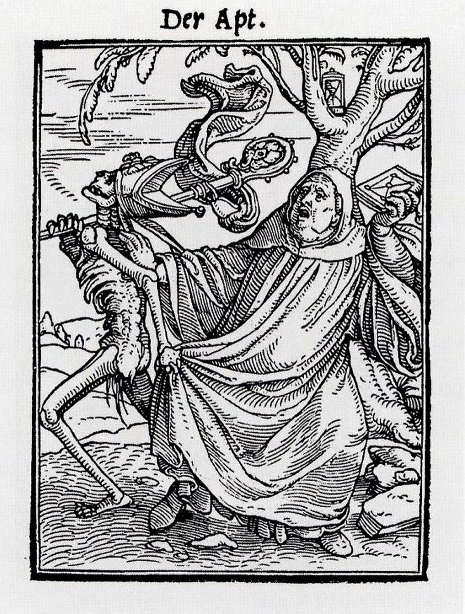
Referencia · Verificada
Bibliografía
Imprescindibles, recomendadas y especializadas, con su estado de verificación.
Hans Holbein el Joven (talla de Hans Lützelburger), «El abad», de Les simulachres & historiees faces de la mort, Lyon, 1538. Dominio público, vía Wikimedia Commons.
Cómo leer esta bibliografía
Tipo de fuente:
FP Fuente primaria.
EA Estudio académico o monografía de especialista.
CAT Catálogo de exposición o catálogo razonado.
DIV Divulgación de calidad.
REF Obra de referencia (diccionario, repertorio).
INS Recurso institucional (museo, universidad, organismo).
ART Artículo académico.
Estado de verificación (septiembre de 2026, contra catálogos de bibliotecas, editoriales, museos y reseñas académicas):
✔ Verificado: autor, título, editorial y año confirmados. El ISBN está confirmado cuando aparece.
◐ Parcial: se indica qué quedó sin confirmar.
✱ Dato de referencia estándar que no pude contrastar en un catálogo durante esta fase. Verifícalo al conseguir el libro.
Cuando no hay ISBN es porque no pude confirmarlo, o porque el libro es anterior a los ISBN. No se ha inventado ninguno.
Correcciones hechas durante la verificación. Constan aquí para que no repitas errores comunes:
La 1.ª ed. de La filosofía náhuatl (1956) es del Instituto Indigenista Interamericano, no de la UNAM.
El título del artículo de Malvido que suele citarse ("...y su secularización en el México moderno") no es el publicado; va corregido abajo.
La 1.ª traducción española de La cámara lúcida es de Gustavo Gili (1982), no de Paidós.
No existe, hasta donde pude comprobar, un libro del Prado dedicado a la restauración del Triunfo de la muerte. Hay notas de prensa y una conferencia en vídeo (2018).
La Mesa de los pecados capitales dice DOMINUS, no Deus.
La fotografía de Minamata es de Tomoko Kamimura, no "Uemura".
Las Pinturas negras se fechan en 1820‑1823, no en 1819‑1823: Goya compró la casa en 1819.
El libro de Junquera (2003) sólo está confirmado en su edición inglesa (Scala).
I. LECTURAS IMPRESCINDIBLES (12)
Si sólo lees esto, tendrás el esqueleto del curso.
Philippe Ariès, L'Homme devant la mort. Paris: Seuil, 1977. En español: El hombre ante la muerte, trad. Mauro Armiño, Madrid: Taurus, 1983 (reimpr. 2011, ISBN 978‑84‑306‑0827‑0). EA✔Por qué: la gran síntesis sobre las actitudes occidentales ante la muerte, de la Edad Media al siglo XX. Es imprescindible y discutible: léela como hipótesis. Tiene una versión breve: Historia de la muerte en Occidente, Barcelona: Acantilado, 2000, ISBN 978‑84‑95359‑17‑9 ✔.
Vladimir Jankélévitch, La Mort. Paris: Flammarion, 1966. En español: La muerte, trad. Manuel Arranz, Valencia: Pre‑Textos, 2002, ISBN 978‑84‑8191‑441‑2. EA / filosofía✔Por qué: es la fuente de la distinción entre la muerte en 1.ª, 2.ª y 3.ª persona, la columna del curso. Es un filósofo que escribe como un moralista francés.
Hans Belting, Bild‑Anthropologie. München: Fink, 2001. En español: Antropología de la imagen, trad. Gonzalo María Vélez Espinosa, Buenos Aires / Madrid: Katz, 2007, ISBN 978‑84‑96859‑13‑5. EA✔Por qué: sostiene que la imagen nace como sustituto del cuerpo muerto. Es la teoría de fondo que une a Valdés Leal, la fotografía post mortem y la foto en la ofrenda.
Joseph Leo Koerner, Bosch and Bruegel: From Enemy Painting to Everyday Life. Princeton: Princeton University Press, 2016 (A. W. Mellon Lectures; Bollingen XXXV:57), ISBN 978‑0‑691‑17228‑6. EA✔Por qué: es el mejor estudio de la relación entre Bosch y Bruegel, y un modelo de cómo leer una obra con detenimiento. Sin traducción española, que yo sepa.
Jonathan Brown, "Hieroglyphs of Death and Salvation: The Decoration of the Church of the Hermandad de la Caridad, Seville".The Art Bulletin 52:3 (1970), pp. 265‑277. ART✔ Se recogió después en Images and Ideas in Seventeenth‑Century Spanish Painting, Princeton UP, 1978. En español: Imágenes e ideas en la pintura española del siglo XVII, trad. Vicente Lleó Cañal, Madrid: Alianza (Alianza Forma), 1980/1981, ISBN 978‑84‑206‑7014‑0. ◐ (la fecha española oscila entre 1980 y 1981 según el catálogo)
Por qué: es la lectura clásica del programa de Mañara. Sin él, In ictu oculi se queda en una imagen suelta.
William M. Ivins Jr., Prints and Visual Communication. Cambridge, Mass.: Harvard University Press / London: Routledge & Kegan Paul, 1953 (MIT Press, 1969, ISBN 978‑0‑262‑59002‑0). En español: Imagen impresa y conocimiento, Barcelona: Gustavo Gili, 1975, ISBN 978‑84‑252‑0865‑2. EA✔Por qué: explica qué cambia cuando una imagen se vuelve repetible. Te sirve para el grabado y para la fotografía.
Roland Barthes, La Chambre claire. Note sur la photographie. Paris: Cahiers du cinéma / Gallimard / Seuil, 1980, ISBN 978‑2‑07‑020541‑7. En español: La cámara lúcida, trad. Joaquim Sala‑Sanahuja, Barcelona: Gustavo Gili, 1982; y Paidós, ediciones posteriores (p. ej. 2009, ISBN 978‑84‑493‑2293‑8). [EA / ensayo; en este curso, casi fuente primaria] ✔Por qué: el libro sobre fotografía y muerte. Está escrito tras la muerte de la madre del autor. Es la muerte en 2.ª persona.
Susan Sontag, On Photography. New York: FSG, 1977. En español: Sobre la fotografía, Madrid: Alfaguara, 2005, ISBN 978‑84‑204‑0212‑3. Y Regarding the Pain of Others, FSG, 2003. En español: Ante el dolor de los demás, Madrid: Alfaguara, 2003, ISBN 978‑84‑204‑6670‑5. [ensayo] ✔Por qué: contiene la frase "todas las fotografías son memento mori" (en "In Plato's Cave") y la historia de la imagen de guerra de Goya a la fotografía. Hay que leerla para discutirla.
Geoffrey Batchen, Forget Me Not: Photography and Remembrance. New York: Princeton Architectural Press / Amsterdam: Van Gogh Museum, 2004, ISBN 978‑1‑56898‑450‑6. CAT / EA✔Por qué: estudia la fotografía como objeto de memoria (con cabello, marcos, joyas) y no sólo como imagen. Es muy cercano a la lógica de la ofrenda.
Claudio Lomnitz, Death and the Idea of Mexico. New York: Zone Books, 2005, ISBN 978‑1‑890951‑53‑5. En español: La idea de la muerte en México, trad. Mario Zamudio Vega, México: FCE, 2006, ISBN 978‑968‑16‑8298‑9. EA✔Por qué: es la obra contra la generalización. Estudia cómo la muerte se volvió emblema nacional. Es imprescindible para no llegar a México con el cliché puesto.
Stanley Brandes, Skulls to the Living, Bread to the Dead: The Day of the Dead in Mexico and Beyond. Malden, MA / Oxford: Blackwell, 2006, ISBN 978‑1‑4051‑5248‑8 (rústica). EA / antropología✔Por qué: es la historia crítica del Día de Muertos, basada en décadas de trabajo de campo (con Tzintzuntzan como sitio clave): orígenes, comercio, turismo, migración. Sin traducción española, que yo sepa.
Eduardo Matos Moctezuma, La muerte entre los mexicas. México: Tusquets, 2010, ISBN 978‑607‑421‑219‑8. EA / arqueología✔Por qué: es la síntesis de un arqueólogo del Templo Mayor, que trabaja con fuentes y con excavación. Úsalo junto a Malvido para ver el debate.
II. LECTURAS RECOMENDADAS (para profundizar)
Historia de la muerte e iconografía
Johan Huizinga, Herfsttij der Middeleeuwen, Haarlem: Tjeenk Willink, 1919. En español: El otoño de la Edad Media, trad. José Gaos, Madrid: Alianza, ISBN 978‑84‑206‑7950‑1. Ojo: la web de Alianza dice "1927", pero el original es de 1919. EA, clásico✔Por qué: el capítulo sobre "la imagen de la muerte" es literatura además de historia.
Paul Binski, Medieval Death: Ritual and Representation, London: British Museum Press, 1996, ISBN 978‑0‑7141‑0561‑1. EA✔Por qué: la mejor introducción breve a la muerte medieval en imágenes.
Thomas W. Laqueur, The Work of the Dead: A Cultural History of Mortal Remains, Princeton UP, 2015, ISBN 978‑0‑691‑15778‑8. EA✔Por qué: explica por qué los muertos importan a los vivos. Discute a Ariès.
Elina Gertsman, The Dance of Death in the Middle Ages: Image, Text, Performance, Turnhout: Brepols, 2010, ISBN 978‑2‑503‑53063‑5. EA✔Por qué: la danza macabra como algo que se representaba, no sólo como pintura.
Erwin Panofsky, Meaning in the Visual Arts, Garden City: Doubleday Anchor, 1955 (incluye "Et in Arcadia Ego"). En español: El significado en las artes visuales, Madrid: Alianza, 2004, ISBN 978‑84‑206‑8652‑3. EA✔Por qué: la iconología clásica y el ensayo gramatical sobre Et in Arcadia ego.
Michael Baxandall, Painting and Experience in Fifteenth‑Century Italy, Oxford: Clarendon, 1972. En español: Pintura y vida cotidiana en el Renacimiento, Barcelona: Gustavo Gili, 1978. EA✔Por qué: el concepto de "ojo de la época".
E. H. Gombrich, Symbolic Images, London: Phaidon, 1972 (incluye "Aims and Limits of Iconology"). En español: Imágenes simbólicas, Madrid: Alianza, 1983, ISBN 84‑206‑7034‑0. EA✔Por qué: el freno a la sobreinterpretación.
Svetlana Alpers, The Art of Describing, University of Chicago Press, 1983. En español: El arte de describir, Madrid: Hermann Blume, 1987, ISBN 84‑7214‑380‑5. EA✔Por qué: el contrapeso a la lectura simbólica de la vanitas.
David Freedberg, The Power of Images, University of Chicago Press, 1989. En español: El poder de las imágenes, Madrid: Cátedra, 1992, ISBN 978‑84‑376‑1060‑3. EA✔Por qué: cómo responden los cuerpos a las imágenes: miedo, veneración, destrucción.
Bosch, Bruegel y el Barroco
Reindert L. Falkenburg, The Land of Unlikeness: Hieronymus Bosch, The Garden of Earthly Delights, Zwolle: WBooks, 2011, ISBN 978‑90‑400‑7767‑8. EA✔
Hans Belting, Hieronymus Bosch: Garden of Earthly Delights, München: Prestel, 2002, ISBN 978‑3‑7913‑2674‑0. EA✔
Manfred Sellink, Bruegel: The Complete Paintings, Drawings and Prints, Ghent: Ludion, 2007, ISBN 978‑90‑5544‑686‑5. CAT razonado✔Por qué: es el catálogo completo, para tener toda la obra a la vista.
Enrique Valdivieso González, Juan de Valdés Leal, Sevilla: Editorial Universidad de Sevilla / Junta de Andalucía, 2021, ISBN 978‑84‑472‑2284‑1. EA / catálogo razonado✔Por qué: la monografía de referencia, actualizada. La 1.ª ed. es de Sevilla: Guadalquivir, 1988, ISBN 978‑84‑86080‑08‑2.
José Antonio Maravall, La cultura del Barroco, Barcelona: Ariel, 1975, ISBN 978‑84‑344‑8314‑9. EA✔Por qué: el Barroco como cultura "dirigida". Es discutido, pero hay que conocerlo.
Fernando R. de la Flor, Barroco. Representación e ideología en el mundo hispánico (1580‑1680), Madrid: Cátedra, 2002, ISBN 978‑84‑376‑1960‑6. EA✔Por qué: es el mejor estudioso actual del desengaño y la melancolía barroca.
Grabado
Antony Griffiths, Prints and Printmaking: An Introduction to the History and Techniques, London: British Museum Press, 2.ª ed. 1996, ISBN 978‑0‑7141‑2608‑1. EA / manual✔Por qué: es el manual técnico claro para distinguir las técnicas.
Erwin Panofsky, The Life and Art of Albrecht Dürer, Princeton UP, 1943 (4.ª ed., 1955). En español: Vida y arte de Alberto Durero, Madrid: Alianza, ISBN 978‑84‑206‑7027‑0. EA✔
R. Klibansky, E. Panofsky, F. Saxl, Saturn and Melancholy, London: Nelson, 1964. En español: Saturno y la melancolía, Madrid: Alianza, 1991, ISBN 978‑84‑206‑7100‑0. EA✔Por qué:Melencolia I y la tradición saturnina.
Philippe Kaenel (dir.), Gustave Doré (1832‑1883): l'imaginaire au pouvoir, Paris: Musée d'Orsay / Flammarion, 2014, ISBN 978‑2‑08‑131641‑6. CAT✔
Goya
Janis Tomlinson, Goya: A Portrait of the Artist, Princeton UP, 2020, ISBN 978‑0‑691‑19204‑8. EA / biografía✔Por qué: es la biografía documental más reciente.
Tzvetan Todorov, Goya à l'ombre des Lumières, Paris: Flammarion, 2011. En español: Goya a la sombra de las Luces, Barcelona: Galaxia Gutenberg, 2011, ISBN 978‑84‑8109‑944‑7. [ensayo] ✔Por qué: Goya entre la razón y sus monstruos. Es el tema del Módulo 12.
México
Alfredo López Austin, Cuerpo humano e ideología: las concepciones de los antiguos nahuas, México: UNAM‑IIA, 1980, 2 vols. (reimpr. 2023, ISBN 978‑607‑30‑8333‑1). EA✔Por qué: las entidades anímicas. Es la base para no proyectar el "alma" cristiana.
Miguel León‑Portilla, La filosofía náhuatl estudiada en sus fuentes, México: Instituto Indigenista Interamericano, 1956; 11.ª ed. UNAM‑IIH, 2017, ISBN 978‑607‑02‑8765‑7 (hay acceso libre en historicas.unam.mx). EA, clásico y discutido✔
Hugo G. Nutini, Todos Santos in Rural Tlaxcala, Princeton UP, 1988, ISBN 978‑0‑691‑07755‑0. EA / etnografía✔Por qué: es una etnografía en profundidad de un lugar concreto, justo lo que exige este curso.
Rafael Barajas Durán "El Fisgón", Posada: mito y mitote. La caricatura política de José Guadalupe Posada y Manuel Alfonso Manilla, México: FCE, 2009, ISBN 978‑607‑16‑0075‑2. EA✔Por qué: desmonta el mito de Posada, reconstruye la historia real de la "Catrina" y devuelve su lugar a Manilla.
Elsa Malvido, "La festividad de Todos Santos, Fieles Difuntos y su altar de muertos en México, patrimonio 'intangible' de la humanidad", en Patrimonio Cultural y Turismo. Cuadernos 16 ("Día de Muertos en México"), México: CONACULTA, 2006, pp. 41‑56. ART✔ (título corregido) Por qué: es la tesis del origen principalmente católico y europeo. Léelo contra Matos.
Fotografía
Jay Ruby, Secure the Shadow: Death and Photography in America, Cambridge, MA: MIT Press, 1995, ISBN 978‑0‑262‑18164‑8. EA✔Por qué: es la historia fundamental de la fotografía post mortem.
Audrey Linkman, Photography and Death, London: Reaktion, 2011, ISBN 978‑1‑86189‑791‑6. EA✔Por qué: es breve, rigurosa y desmonta mitos.
Ariella Azoulay, The Civil Contract of Photography, New York: Zone Books, 2008, ISBN 978‑1‑890951‑88‑7. EA✔Por qué: es el fundamento teórico de tu ética.
Marianne Hirsch, Family Frames: Photography, Narrative, and Postmemory, Harvard UP, 1997, ISBN 978‑0‑674‑29266‑6. EA✔Por qué: explica la fotografía familiar y la "posmemoria".
Filosofía (estudios)
Samuel Scheffler, Death and the Afterlife, ed. Niko Kolodny, Oxford UP, 2013, ISBN 978‑0‑19‑998250‑9. EA✔
Martin Hägglund, This Life, New York: Pantheon, 2019. En español: Esta vida, trad. Mercedes Vaquero Granados, Madrid: Capitán Swing, 2022, ISBN 978‑84‑124578‑5‑8. EA✔
Shelly Kagan, Death, Yale UP, 2012, ISBN 978‑0‑300‑18084‑8. EA / manual✔Por qué: es la introducción analítica más clara: el mal de la muerte, la simetría, la inmortalidad.
Antropología de la muerte
Robert Hertz, "Contribution à une étude sur la représentation collective de la mort", L'Année sociologique 10 (1907), pp. 48‑137. FP / EA clásico✔Por qué: explica la doble sepultura. Es clave para Pomuch.
Arnold van Gennep, Les rites de passage, Paris: Nourry, 1909. En español: Los ritos de paso, Madrid: Alianza, 2008, ISBN 978‑84‑206‑6217‑6. EA clásico✔
Peter Metcalf y Richard Huntington, Celebrations of Death: The Anthropology of Mortuary Ritual, 2.ª ed., Cambridge UP, 1991, ISBN 978‑0‑521‑42375‑5 (en la 1.ª ed., de 1979, el orden de los autores es el inverso). EA✔
Eric Hobsbawm y Terence Ranger (eds.), The Invention of Tradition, Cambridge UP, 1983. En español: La invención de la tradición, Barcelona: Crítica, 2002. EA✔Por qué: es la herramienta conceptual para entender el desfile de 2016, entre otras cosas.
III. LECTURAS ESPECIALIZADAS (para investigaciones concretas)
Muerte medieval y moderna
Michel Vovelle, La Mort et l'Occident de 1300 à nos jours, Paris: Gallimard, 1983, ISBN 978‑2‑07‑029649‑1. EA✔
Kathleen Cohen, Metamorphosis of a Death Symbol: The Transi Tomb in the Late Middle Ages and the Renaissance, Berkeley: University of California Press, 1973, ISBN 978‑0‑520‑01844‑0. EA✔
Sophie Oosterwijk y Stefanie Knöll (eds.), Mixed Metaphors: The Danse Macabre in Medieval and Early Modern Europe, Newcastle: Cambridge Scholars, 2011, ISBN 978‑1‑4438‑2900‑7. EA✔
Sister Mary Catharine O'Connor, The Art of Dying Well: The Development of the Ars Moriendi, New York: Columbia UP, 1942. EA✔ (hay copia en archive.org)
Austra Reinis, Reforming the Art of Dying: The ars moriendi in the German Reformation (1519‑1528), Aldershot: Ashgate, 2007, ISBN 978‑0‑7546‑5439‑1. EA✔
Émile Mâle, L'Art religieux de la fin du Moyen Âge en France, Paris: Armand Colin, 1908. En inglés: Religious Art in France: The Late Middle Ages, Princeton UP, 1986, ISBN 978‑0‑691‑09914‑9. EA clásico✔
Natalie Zemon Davis, "Holbein's Pictures of Death and the Reformation at Lyons", Studies in the Renaissance 3 (1956), pp. 97‑130. ART✔
Bosch y Bruegel
Matthijs Ilsink, Jos Koldeweij, Ron Spronk, et al., Hieronymus Bosch, Painter and Draughtsman: Catalogue Raisonné, Brussels: Mercatorfonds / New Haven: Yale UP, 2016, ISBN 978‑0‑300‑22014‑8. CAT razonado✔Por qué: son los resultados del Bosch Research and Conservation Project (BRCP): atribuciones, dendrocronología, reflectografía.
Pilar Silva Maroto (ed.), El Bosco. La exposición del V centenario, Madrid: Museo del Prado, 2016, ISBN 978‑84‑8480‑316‑4. CAT✔Por qué: es la posición del Prado, que difiere del BRCP en algunas atribuciones.
Larry Silver, Hieronymus Bosch, New York: Abbeville, 2006, ISBN 978‑0‑7892‑0901‑6. EA✔
Walter S. Gibson, Hieronymus Bosch, London: Thames & Hudson (World of Art), 1973. DIV académica✔
Walter S. Gibson, Pieter Bruegel and the Art of Laughter, University of California Press, 2006, ISBN 978‑0‑520‑24521‑1; y Figures of Speech: Picturing Proverbs in Renaissance Netherlands, University of California Press, 2010, ISBN 978‑0‑520‑25954‑6. EA✔
Nadine M. Orenstein (ed.), Pieter Bruegel the Elder: Drawings and Prints, New York: The Metropolitan Museum of Art / Yale UP, 2001, ISBN 978‑0‑87099‑991‑8. CAT✔Por qué: es el catálogo de referencia para los grabados, Los peces grandes incluido.
Margaret A. Sullivan, Bruegel and the Creative Process, 1559‑1563, Farnham: Ashgate, 2010, ISBN 978‑0‑7546‑6979‑1. EA✔Por qué: cubre exactamente los años del Triunfo.
Sabine Haag (ed.), Bruegel: The Master, Vienna: KHM / London: Thames & Hudson, 2018, ISBN 978‑0‑500‑23984‑1. CAT✔
Museo del Prado, materiales sobre la restauración de El triunfo de la muerte (nota de prensa y conferencia de María Antonia López de Asiaín, junio de 2018). INS✔ No existe un libro monográfico.
Vanitas y Barroco
Ingvar Bergström, Dutch Still‑Life Painting in the Seventeenth Century, London: Faber / New York: Yoseloff, 1956. El original sueco es de 1947. EA✔
Alain Tapié (dir.), Les Vanités dans la peinture au XVIIe siècle: méditations sur la richesse, le dénuement et la rédemption, Caen: Musée des Beaux‑Arts / Paris: Albin Michel, 1990. CAT◐ (el ISBN de cada coedición no está claro)
Fernando R. de la Flor, Era melancólica. Figuras del imaginario barroco, Barcelona / Palma: Olañeta / Universitat de les Illes Balears, 2007, ISBN 978‑84‑9716‑414‑6. EA✔
Grabado
Antony Griffiths, The Print Before Photography: An Introduction to European Printmaking 1550‑1820, London: British Museum Press, 2016, ISBN 978‑0‑7141‑2695‑1. EA✔
Bamber Gascoigne, How to Identify Prints, London: Thames & Hudson, 1986 (2.ª ed. 2004, ISBN 978‑0‑500‑28480‑3). [manual] ✔
Giulia Bartrum, Albrecht Dürer and His Legacy, London: British Museum Press, 2002, ISBN 978‑0‑7141‑2633‑3. CAT✔
Paulette Choné (dir.), Jacques Callot 1592‑1635, Paris: RMN, 1992, ISBN 978‑2‑7118‑2561‑5 (exposición en Nancy). CAT✔
John Wilton‑Ely, The Mind and Art of Giovanni Battista Piranesi, London: Thames & Hudson, 1978, ISBN 978‑0‑500‑09122‑7. EA✔
Marguerite Yourcenar, "Le cerveau noir de Piranèse" (1961), en Sous bénéfice d'inventaire, Paris: Gallimard, 1962. [ensayo] ✔
Goya
Nigel Glendinning, Goya and His Critics, Yale UP, 1977, ISBN 978‑0‑300‑02011‑3. EA✔
Juliet Wilson‑Bareau, Goya's Prints: The Tomás Harris Collection in the British Museum, London: British Museum Publications, 1981, ISBN 978‑0‑7141‑0789‑9. CAT✔
Valeriano Bozal, Pinturas negras de Goya, Madrid: Tf Editores, 1997, ISBN 978‑84‑89162‑75‑4. EA✔
Juan José Junquera, The Black Paintings of Goya, London: Scala, 2003, ISBN 978‑1‑85759‑273‑3. EA; tesis minoritaria sobre la atribución◐ (sólo confirmada la edición inglesa)
Robert Hughes, Goya, New York: Knopf, 2003, ISBN 978‑0‑394‑58028‑9. DIV de calidad✔
México
Eduardo Matos Moctezuma, Muerte a filo de obsidiana: los nahuas frente a la muerte, México: SEP (SepSetentas), 1975; ed. FCE, ISBN 978‑607‑16‑2432‑1 (ficha actual). EA◐ (el número de la colección SepSetentas no está claro)
John Bierhorst, Cantares Mexicanos: Songs of the Aztecs, Stanford UP, 1985, ISBN 978‑0‑8047‑1182‑1. [edición de FP; interpretación muy discutida] ✔
Jongsoo Lee, The Allure of Nezahualcoyotl: Pre‑Hispanic History, Religion, and Nahua Poetics, Albuquerque: University of New Mexico Press, 2008, ISBN 978‑0‑8263‑4337‑6. EA✔
Arqueología Mexicana 40 (nov.‑dic. 1999), "La muerte en el México prehispánico"; Edición especial 52 (2013), "La muerte en México. De la época prehispánica a la actualidad". DIV académica / INS✔
Elsa Malvido, "Crónicas de la buena muerte a la Santa Muerte en México", Arqueología Mexicana 76 (2005), pp. 20‑27. ART✔
Enrique Vela, "Miccailhuitontli y huey miccaílhuitl", Arqueología Mexicana, Edición especial 59 (2014). DIV académica✔
Artes de México 15, "El arte ritual de la muerte niña", 1992, ISBN 978‑968‑6533‑69‑9 (colaboran Gutierre Aceves Piña, Alfonso Alfaro, Elena Poniatowska y otros). INS / EA✔Por qué: angelitos y fotografía post mortem en México.
Patrick Frank, Posada's Broadsheets: Mexican Popular Imagery, 1890‑1910, Albuquerque: University of New Mexico Press, 1998, ISBN 978‑0‑8263‑1904‑3. EA✔
Mercurio López Casillas, Manuel Manilla, grabador mexicano, México: RM, 2004, ISBN 978‑968‑5208‑35‑2. EA / CAT✔
Jorge Durand y Douglas S. Massey, Miracles on the Border: Retablos of Mexican Migrants to the United States, Tucson: University of Arizona Press, 1995, ISBN 978‑0‑8165‑1497‑7. EA✔
R. Andrew Chesnut, Devoted to Death: Santa Muerte, the Skeleton Saint, Oxford UP, 2012, ISBN 978‑0‑19‑976465‑5. EA✔
Regina M. Marchi, Day of the Dead in the USA, New Brunswick: Rutgers UP, 2009, ISBN 978‑0‑8135‑4558‑5. EA✔
Frances Toor, A Treasury of Mexican Folkways, New York: Crown, 1947. [FP, en tanto documento del folclorismo de los años 30‑40] ✔ (disponible en archive.org)
UNESCO, "Indigenous festivity dedicated to the dead" (ich.unesco.org, elemento 00054; proclamado en 2003 e inscrito en 2008). INS✔
Fotografía (teoría e historia)
Stanley B. Burns, Sleeping Beauty: Memorial Photography in America, Altadena: Twelvetrees Press, 1990, ISBN 978‑0‑942642‑32‑2. CAT / colección✔
André Bazin, "Ontologie de l'image photographique", en Problèmes de la peinture, ed. G. Diehl, Lyon: Confluences, 1945; revisado en Qu'est‑ce que le cinéma?, vol. 1, Paris: Cerf, 1958. FP teórica✔
Siegfried Kracauer, "Die Photographie", Frankfurter Zeitung, 28 de octubre de 1927; en Das Ornament der Masse, Frankfurt: Suhrkamp, 1963. FP teórica✔
Walter Benjamin, "Kleine Geschichte der Photographie" (1931) y "Das Kunstwerk im Zeitalter seiner technischen Reproduzierbarkeit" (1935‑1936). Los dos contienen el pasaje de Atget y el "lugar del crimen". FP teórica✔
Georges Didi‑Huberman, Images malgré tout, Paris: Minuit, 2003. En español: Imágenes pese a todo, Barcelona: Paidós, 2004, ISBN 978‑84‑493‑1653‑1. EA✔
Eduardo Cadava, Words of Light: Theses on the Photography of History, Princeton UP, 1997, ISBN 978‑0‑691‑00268‑2. EA✔
Martha Rosler, "In, around, and afterthoughts (on documentary photography)", en 3 Works, Halifax: Press of the Nova Scotia College of Art and Design, 1981. [ensayo crítico] ✔
NPPA, Code of Ethics (nppa.org/code‑ethics). INS✔
Filosofía (textos breves y artículos)
Thomas Nagel, "Death", Noûs 4:1 (1970), pp. 73‑80; en Mortal Questions, Cambridge UP, 1979. ✔
Bernard Williams, "The Makropulos Case: Reflections on the Tedium of Immortality", en Problems of the Self, Cambridge UP, 1973. ✔
Emmanuel Levinas, Dieu, la mort et le temps, Paris: Grasset, 1993. En español: Dios, la muerte y el tiempo, Madrid: Cátedra, 1994, ISBN 84‑376‑1280‑2. ✔
Ernest Becker, The Denial of Death, New York: Free Press, 1973. En español: La negación de la muerte, Barcelona: Kairós, 2003, ISBN 978‑84‑7245‑500‑9. ✔
Duelo, memoria y olvido
Sigmund Freud, "Trauer und Melancholie" (escrito en 1915, publicado en 1917). FP✔
Pauline Boss, Ambiguous Loss: Learning to Live with Unresolved Grief, Harvard UP, 1999. EA◐ (el ISBN de cada edición no está claro) Por qué: la "pérdida ambigua" es indispensable para pensar la desaparición.
Paul Ricœur, La mémoire, l'histoire, l'oubli, Paris: Seuil, 2000, ISBN 978‑2‑02‑034917‑8. En español: La memoria, la historia, el olvido, Madrid: Trotta, 2003, ISBN 978‑84‑8164‑604‑7. EA✔
Dennis Klass, Phyllis R. Silverman y Steven L. Nickman (eds.), Continuing Bonds: New Understandings of Grief, 1996. ✱ (no verificado en catálogo) Por qué: es la teoría psicológica de los "vínculos continuos" con los muertos.
Referencia
Real Academia Española y Asociación de Academias de la Lengua Española, Nueva gramática de la lengua española. Manual, Madrid: Espasa, 2010, ISBN 978‑84‑670‑3281‑9. REF✔ (ISBN comprobado en el propio volumen) Uso: es la terminología gramatical del curso, citada por parágrafo (§).
Louis Réau, Iconographie de l'art chrétien, Paris: PUF, 1955‑1959. En español: Iconografía del arte cristiano, Barcelona: Ediciones del Serbal, desde 1996. REF✔
James Hall, Dictionary of Subjects and Symbols in Art, London: John Murray, 1974. En español: Diccionario de temas y símbolos artísticos, Madrid: Alianza, 1987 (ed. 1996, ISBN 978‑84‑206‑5223‑8). REF✔Uso: como punto de partida, nunca como punto de llegada.
IV. LIBROS DE FOTOGRAFÍA (fuentes primarias visuales)
Todos verificados ✔ salvo indicación.
Robert Frank, Les Américains, Paris: Delpire, 1958 / The Americans, New York: Grove, 1959; The Lines of My Hand, 1972.
Diane Arbus, Diane Arbus: An Aperture Monograph, New York: Aperture, 1972.
Josef Koudelka, Gitans, la fin du voyage / Gypsies, 1975; Exiles, 1988; Invasion 68: Prague, 2008; Ruins, 2020 (◐ editorial).
Daido Moriyama, Shashin yo sayonara, Tokyo: Shashin Hyōron‑sha, 1972.
Nan Goldin, The Ballad of Sexual Dependency, New York: Aperture, 1986; Sisters, Saints and Sibyls, 2004/2005 (◐ año de la 1.ª ed.; reed. Thames & Hudson, 2026).
Sally Mann, What Remains, Boston: Bulfinch, 2003, ISBN 978‑0‑8212‑2843‑2; Deep South, 2005; Proud Flesh, Aperture, 2009; Hold Still, Little, Brown, 2015, ISBN 978‑0‑316‑24775‑7.
Roger Ballen, Platteland (1994); Outland (2001); Shadow Chamber (2005); Boarding House (2009); Asylum of the Birds, Thames & Hudson, 2014, ISBN 978‑0‑500‑54429‑7.
Hiroshi Sugimoto: las series Dioramas, Theaters, Seascapes y Portraits (consulta los catálogos de la obra).
Peter Hujar, Portraits in Life and Death, New York: Da Capo, 1976, ISBN 978‑0‑306‑70755‑1.
Masahisa Fukase, Karasu, Tokyo: Sokyu‑sha, 1986.
Walter Schels y Beate Lakotta, Noch mal leben vor dem Tod, München: DVA, 2004, ISBN 978‑3‑421‑05837‑9.
Graciela Iturbide, Juchitán de las mujeres, México: Toledo, 1989 (texto de Elena Poniatowska).
Flor Garduño, Testigos del tiempo / Witnesses of Time, 1992 (introducción de Carlos Fuentes).
Pedro Meyer, Fotografío para recordar / I Photograph to Remember, Voyager, 1991 (CD‑ROM; hoy hay versiones en línea).
Manuel Álvarez Bravo: cualquier retrospectiva reciente que incluya Obrero en huelga, asesinado (1934) y La buena fama durmiendo (1938‑1939).
V. PENDIENTES DE VERIFICACIÓN
Son datos que se mencionan en el curso y que no pude confirmar con suficiente seguridad. Se verificarán en el módulo correspondiente:
Fecha de inicio del trabajo de campo de Brandes en Tzintzuntzan.
Título exacto del ensayo de Gutierre Aceves Piña en Artes de México 15.
Título oficial en español del elemento de UNESCO.
Etimología de Xantolo (¿de sanctorum?) y glosa de Hanal Pixán.
Número del capítulo "Todos santos, día de muertos" en El laberinto de la soledad (probablemente el III).
Parágrafo exacto de La cámara lúcida sobre Lewis Payne.
Fórmula exacta de la inscripción que atribuye a Bosch la invención de Los peces grandes (1557).
Signatura del manuscrito de la Danza general de la Muerte en El Escorial.
Ficha y facsímil del incunable castellano Arte de bien morir (Zaragoza, taller de Pablo Hurus, c. 1479‑1484) y de su edición moderna.
Autor y revista del artículo crítico "Ghosts of the Imagination" sobre la traducción de Bierhorst.
Referencia · Textos de época
Fuentes primarias
De la Vulgata a Rulfo: qué leer directamente y cómo leerlo.
Maestro E. S., Ars moriendi: la tentación de la avaricia, buril, c. 1450. Dominio público, vía Wikimedia Commons.
Son textos de las épocas estudiadas, para leer directamente. Para cada uno se indica la referencia precisa, el acceso recomendado (edición, facsímil o recurso en línea), el módulo y cómo leerlo: qué buscar y qué desconfiar.
Hay una advertencia general. Una fuente primaria no es "la verdad de la época". Es una voz de la época, con su autor, su público y sus intereses.
A. Bíblicas y litúrgicas
Versión que usa el curso.
Todas las citas latinas siguen la Vulgata Clementina (Roma, 1592). Fue la Biblia oficial de la Iglesia católica desde 1592 hasta el siglo XX, y la que leían Bosch, Mañara, Valdés Leal y la Nueva España. La Biblia de Doré (1866) también estaba hecha "selon la Vulgate".
La Nova Vulgata (1979), que es hoy el texto latino oficial, a veces cambia palabras. Por ejemplo, en Sabiduría 2:8.
La numeración de algunos versículos también cambia entre ediciones: Eclesiástico 7:40 en la Clementina es 7:36 en las biblias modernas.
Para el español se usa tu Biblia, la Reina‑Valera 1960 (RVR1960). Las citas de la columna correspondiente se cotejaron con el texto de la RVR1960 en octubre de 2026. Donde el curso cita un pasaje que la RVR1960 no tiene, se indica.
Dos Biblias en tu historia, y por qué importa.
La Biblia de tu madre, la de los grabados de Doré, era católica: incluía los libros deuterocanónicos y venía de la tradición de la Vulgata.
La que tú has leído, la Reina‑Valera 1960, es protestante y no los incluye. Su origen es la Biblia del Oso de Casiodoro de Reina (Basilea, 1569), revisada por Cipriano de Valera (1602).
La Biblia del Oso sí traía los deuterocanónicos, intercalados en el Antiguo Testamento como en las biblias católicas. Valera los agrupó en una sección aparte de "apócrifos" entre los dos Testamentos, y la RVR1960 los omite.
Consecuencia para el curso: cuatro textos que sostienen la iconografía católica de la muerte no están en tu Biblia:
el memorare novissima tua (Eclesiástico o Sirácida; no confundir con Eclesiastés);
el carpe diem de los impíos (Sabiduría);
el ubi sunt principes gentium (Baruc);
la oración por los difuntos (2 Macabeos), fundamento del Purgatorio, de las ánimas y quizá de la palabra "macabro".
Ahí tienes, en tu propia biografía, la frontera entre las dos tradiciones que el curso estudia.
Lee siempre la Vulgata junto a una traducción moderna, y el griego o el hebreo cuando importe.
Texto
Vulgata Clementina
Tu Reina‑Valera 1960
Por qué
Módulo
Génesis 3:19
"quia pulvis es et in pulverem reverteris"
«pues polvo eres, y al polvo volverás»
Origen de la fórmula del Miércoles de Ceniza
2, mapa
Eclesiastés (Qohélet) 1:2; 2:24; 9:7‑10; 12:8
"vanitas vanitatum… omnia vanitas" (sin et)
1:2 «Vanidad de vanidades, dijo el Predicador; vanidad de vanidades, todo es vanidad». 9:7 «Anda, y come tu pan con gozo, y bebe tu vino con alegre corazón»
La vanitas, y su conclusión casi epicúrea que la tradición olvida
9
Eclesiástico (Sirácida) 7:40 en la Clementina (7:36 en las numeraciones modernas)
"memorare novissima tua…"
No está (deuterocanónico)
Fundamento de las postrimerías
3, 5
Sabiduría 2:1‑9
v. 8: "coronemus nos rosis antequam marcescant" (la Nova Vulgata dice "calycibus rosarum")
No está (deuterocanónico)
El carpe diem en boca de los impíos
Tesis, 16
Isaías 22:13; 1 Corintios 15:32
Is: "comedamus et bibamus, cras enim moriemur". 1 Cor: "si mortui non resurgunt, manducemus et bibamus…"
Is: «Comamos y bebamos, porque mañana moriremos». 1 Cor: «Si los muertos no resucitan, comamos y bebamos, porque mañana moriremos». La RVR1960 no refleja el cambio de verbo del latín
Isaías lo reprocha; Pablo lo concede en condicional
Tesis
Deuteronomio 32:20, 28‑29
"utinam saperent et intelligerent, ac novissima providerent"
32:29 «¡Ojalá fueran sabios, que comprendieran esto, y se dieran cuenta del fin que les espera!». La RVR1960 traduce novissima, «postrimerías», como «el fin que les espera»
Citas de la Mesa de los pecados capitales
5
Baruc 3:16‑19
"ubi sunt principes gentium"
No está (deuterocanónico). El ubi sunt que sí tienes es Isaías 33:18: «¿Qué es del escriba?, ¿qué del pesador del tributo?»
Raíz del ubi sunt
Mapa
1 Corintios 15 (todo el capítulo)
v. 52: "in momento, in ictu oculi, in novissima tuba"
15:51‑52 «No todos dormiremos; pero todos seremos transformados, en un momento, en un abrir y cerrar de ojos, a la final trompeta»
Es sobre la resurrección
2, 9
1 Juan 2:17
"et mundus transit, et concupiscentia ejus"
«Y el mundo pasa, y sus deseos»
Antecedente de sic transit
Mapa
Apocalipsis 6:1‑8
v. 8: "equus pallidus"
«un caballo amarillo, y el que lo montaba tenía por nombre Muerte». Nota de traducción: el griego dice chlōrós, «verdoso, lívido»; la Vulgata lo vierte como «pálido» y la RVR1960 como «amarillo». Doré y Durero pintan el caballo pálido de la tradición latina
Durero, Doré, Bruegel
1, 8, 11
2 Macabeos 12:43‑46
La oración por los difuntos
No está (deuterocanónico)
Posible origen de "macabro"; fundamento del sufragio por las ánimas
4
Secuencia Dies irae
Siglo XIII
No es un texto bíblico: es liturgia católica de difuntos
El Juicio en la liturgia de difuntos
3
Acceso: la Nova Vulgata está en línea en vatican.va. La Clementina, en Wikisource latina (Vulgata Clementina) y en otros sitios. El Novum Testamentum Graece (Nestle‑Aland) sirve para el griego.
B. Clásicas (greco‑latinas)
Texto
Pasajes
Qué buscar
Módulo
Platón, Fedón
64a; 67e
La filosofía como ejercicio de morir. Sócrates muere en escena: es una fuente literaria además de filosófica
3
Epicuro, Carta a Meneceo
124‑127
"La muerte no es nada para nosotros"; la muerte frente al morir
4, 5, 9
Epicuro (o Metrodoro), Sentencias Vaticanas
31
"Una ciudad sin murallas"
4
Lucrecio, De rerum natura
III, 830‑1094
Simetría (832‑842; 972‑977); la prosopopeya de la Naturaleza
10, 16
Horacio, Odas
I, 11; IV, 7
Carpe diem en contexto (Leucónoe y la astrología); pulvis et umbra y los ciclos naturales
La muerte como un proceso de la naturaleza. Los muertos ilustres olvidados (un ubi sunt estoico)
10
Tertuliano, Apologeticum
33.4
"Respice post te! Hominem te memento!", la fuente real del mito del esclavo en el triunfo
Mapa
Boecio, Consolación de la filosofía
II, metro 7
"Ubi nunc fidelis ossa Fabricii manent?"
Mapa
Acceso:
Biblioteca Clásica Gredos: ediciones bilingües o traducciones anotadas.
Loeb Classical Library: bilingüe griego o latín con inglés.
Perseus Digital Library (texto original en línea).
Para Montaigne, ver la sección D.
C. Medievales
Texto
Datos
Qué buscar
Módulo
Le Dit des trois morts et des trois vifs
Siglo XIII, varias versiones
"Lo que sois, fuimos; lo que somos, seréis"
3
Lotario de' Segni (Inocencio III), De miseria humanae conditionis
c. 1194‑1195
El contemptus mundi en estado puro
3
Journal d'un bourgeois de Paris
Entrada de 1424
La noticia de la Danse macabre de los Inocentes (agosto de 1424 a la Cuaresma de 1425)
4
Jean Le Fèvre, Le Respit de la mort
1376
"Je fis de Macabré la dance"
4
La Danse macabre (Guyot Marchant, París, 1485)
Única copia en Grenoble. Hay facsímiles
Texto e imagen de la danza de los Inocentes
4
Danza general de la Muerte
Composición c. 1400 (según Infantes); manuscrito del siglo XV en El Escorial
La versión castellana: diálogos de la Muerte con cada estado
4
Ars moriendi (versión breve, blockbook)
c. 1450‑1460
Las 11 xilografías. Las tentaciones y las inspiraciones
5
Arte de bien morir y breve confesionario
Incunable de Zaragoza, taller de Pablo Hurus, c. 1479‑1484
La versión castellana. Ficha y facsímil pendientes de verificar
5
Jorge Manrique, Coplas por la muerte de su padre
c. 1476
El ubi sunt castellano. La muerte "buena" del maestre
3, 10
François Villon, Ballade des dames du temps jadis
c. 1461
"Mais où sont les neiges d'antan?"
Mapa
Thomas de Kempis (atribución), Imitatio Christi
I, 3, 6; I, 23 ("De la meditación de la muerte")
"O quam cito transit gloria mundi"
Mapa, 5
D. Renacimiento, Reforma y Barroco
Texto
Datos
Qué buscar
Módulo
Erasmo, Enchiridion militis christiani
1503
El caballero cristiano: ¿fuente de Durero?
8
Erasmo, Elogio de la locura
1511
La Locura que habla. El mundo al revés
7
Erasmo, De praeparatione ad mortem
1534
El ars moriendi humanista
5
Holbein, Les simulachres & historiees faces de la mort
Lyon, Trechsel, 1538. Dover (1971): facsímil completo, ISBN 978‑0‑486‑22804‑4
Imagen, cita bíblica latina y cuarteta francesa
8
Durero, diario del viaje a los Países Bajos
1520‑1521
Cómo nombra Durero sus propios grabados ("Reuter")
8
Montaigne, Essais
I, 20 (I, 19 en ed. 1595) "Que philosopher c'est apprendre à mourir"; III, 12 "De la physionomie"
Montaigne se contradice, y eso es lo valioso
1, 16
Karel van Mander, Het Schilder‑boeck
Haarlem, 1604
Las vidas de Bosch y Bruegel. Una fuente con una agenda propia
1, 7
Fray José de Sigüenza, Historia de la Orden de San Jerónimo, III
Madrid, 1605
La defensa de Bosch en El Escorial
6
Calderón, La vida es sueño
1635
"¿Qué es la vida? Un frenesí..."
9
Quevedo, sonetos morales
"¡Ah de la vida!..."; "Miré los muros de la patria mía"; "Amor constante más allá de la muerte"
El desengaño y su inversión amorosa
9
Góngora, "Mientras por competir con tu cabello"
1582
Del carpe diem a "en nada"
Mapa
Juan Eusebio Nieremberg, De la diferencia entre lo temporal y eterno
1640
El libro de cabecera del desengaño barroco. Ediciones modernas pendientes de verificar
9
Miguel Mañara, Discurso de la verdad
1671 (no se conoce ejemplar); ed. Sevilla, 1679. Hay copia digital en la Biblioteca Virtual Miguel de Cervantes
El texto del comitente de In ictu oculi
2, 9
Gracián, El Criticón
1651‑1657
El Desengaño como personaje
9
Pascal, Pensées
Lafuma 165 / Brunschvicg 210 ("le dernier acte est sanglant"); los fragmentos sobre la diversión
La diversión como huida de la muerte
9
Sor Juana Inés de la Cruz, soneto "Este que ves, engaño colorido"
N.º 145 en la ed. de Méndez Plancarte
Vanitas novohispana sobre un retrato
2, 9
Francisco Cervantes de Salazar, Túmulo imperial de la gran ciudad de México
México: Antonio de Espinosa, 1560
Las exequias de Carlos V en México: la muerte barroca en la Nueva España
9
E. Mesoamérica y Nueva España
Casi todas las fuentes son coloniales. Léelas siempre con la pregunta quién habla aquí.
Texto
Datos
Qué buscar
Módulo
Bernardino de Sahagún y colaboradores nahuas, Historia general de las cosas de Nueva España / Códice Florentino
Terminado c. 1577. Biblioteca Medicea Laurenziana. Facsímil digital en la Library of Congress / World Digital Library; Digital Florentine Codex (Getty), con náhuatl, español e inglés
Libro III, apéndice, caps. 1‑3: los destinos de los muertos. Distingue la columna náhuatl de la castellana, que no siempre dicen lo mismo
14
Diego Durán, Historia de las Indias de Nueva España e islas de la Tierra Firme
Siglo XVI
Las fiestas Miccailhuitontli y Hueymiccailhuitl
14
Cantares mexicanos
Manuscrito del siglo XVI (Biblioteca Nacional de México). Ediciones de Garibay, León‑Portilla, Bierhorst
Las preguntas sobre la fugacidad. La atribución a Nezahualcóyotl está discutida
10, 14
Códice Borgia
Prehispánico, Biblioteca Apostólica Vaticana (Borg.mess.1). Hay facsímiles
Lámina 56
14
Popol Vuh
Tradición k'iche'; manuscrito de fray Francisco Ximénez, c. 1701 (Newberry Library)
Xibalbá, el inframundo maya, y los gemelos. Otra tradición, que no es nahua
14
Alonso de Molina, Vocabulario en lengua castellana y mexicana
1571
Para el léxico náhuatl de la muerte (miqui, micqui...)
2, 14
F. Modernas: siglos XVIII‑XX
Texto
Datos
Qué buscar
Módulo
Edmund Burke, A Philosophical Enquiry into the Origin of our Ideas of the Sublime and Beautiful
1757 (2.ª ed. 1759)
Terror más distancia = sublime. Tu experiencia infantil
11
Diderot, Salon de 1767
Sobre Hubert Robert
La poética de las ruinas
10
Goya, títulos manuscritos de los Desastres y cartas a Martín Zapater
c. 1810‑1820
"Yo lo vi" (44), "Esto es peor" (37), "Nada. Ello dirá" (69)
12
Schopenhauer, Die Welt als Wille und Vorstellung, II
Cap. 41
La muerte y la indestructibilidad del ser
6, 10
Kierkegaard, "Ved en Grav"
En Tres discursos para ocasiones supuestas, 1845
La seriedad ante la muerte
12
Tolstói, La muerte de Iván Ilich
1886
La muerte en 1.ª persona narrada desde dentro. La mentira de los otros
16
Freud, "Duelo y melancolía"
1917
El trabajo del duelo
13, 15
Heidegger, Ser y tiempo
§§46‑53. En español: trad. Jorge Eduardo Rivera, Madrid: Trotta, 2003
Ser‑para‑la‑muerte; das Man; §53 contra el "pensar en la muerte"
9, 16
Camus, Le Mythe de Sisyphe
1942
El absurdo
12
Hojas volantes de Antonio Vanegas Arroyo (Posada, Manilla)
c. 1890‑1913
"Remate de calaveras alegres y sandungueras" (1913). Colecciones digitales en museos y bibliotecas
4, 15
Frances Toor, Paul O'Higgins y Blas Vanegas Arroyo (eds.), Las obras de José Guadalupe Posada, grabador mexicano
México: Mexican Folkways, 1930, con introducción de Diego Rivera
Donde nace el nombre "Calavera Catrina"
15
Octavio Paz, "Todos santos, día de muertos"
El laberinto de la soledad, México: Cuadernos Americanos, 1950; FCE, 1959 (revisada)
Léelo como fuente de un discurso nacional, no como etnografía
7, 15
Xavier Villaurrutia, Nostalgia de la muerte
1938
Los "Nocturnos"
15
José Gorostiza, Muerte sin fin
1939
La muerte como forma que se vacía
15
Juan Rulfo, Pedro Páramo
1955
Un pueblo de muertos que hablan
11, 15
Edmundo Valadés, "La muerte tiene permiso"
1955
Cuento
15
Carlos Fuentes, La muerte de Artemio Cruz
1962
La muerte en 1.ª, 2.ª y 3.ª persona (¡la estructura misma de la novela!)
2, 15
Jaime Sabines, "Algo sobre la muerte del mayor Sabines"
1973
El duelo por el padre. La 2.ª persona en la poesía mexicana
15, 16
G. Fuentes teóricas de la fotografía
En este curso funcionan como fuentes primarias, porque son voces de la historia del medio.
Texto
Datos
Qué buscar
Módulo
Kracauer, "Die Photographie"
1927
La foto como acumulación que expulsa el recuerdo
13
Benjamin, "Pequeña historia de la fotografía"
1931
Atget y el "lugar del crimen"; "¿no se convertirá el pie de foto en la parte esencial de la imagen?"
2, 10
Bazin, "Ontología de la imagen fotográfica"
1945
El "complejo de la momia"
13
Barthes, "Rhétorique de l'image"
Communications 4, 1964
El anclaje
2
Sontag, "In Plato's Cave"
En On Photography, 1977
"All photographs are memento mori..."
13
Barthes, La Chambre claire
1980
"Ça a été"; Lewis Payne; el Invernadero
13
H. Tus propias fuentes primarias
Estas son las fuentes más importantes del proyecto:
"Lo que creo que significa la muerte", versiones 1, 2 y 3.
El diario de campo (tres columnas).
El registro de palabras oídas.
Las hojas de contacto con sus calificaciones P/I/B/C/E.
Las dos Biblias de tu historia: la católica de tu madre, con los grabados de Doré (identifica la edición si todavía existe), y tu Reina‑Valera 1960.
Tus propias fotografías familiares de los muertos de tu familia.